| 思春期ボーイズ×ガールズ戦争 (電撃文庫) | |
| 亜紀坂 圭春 | |
| (2014) | |
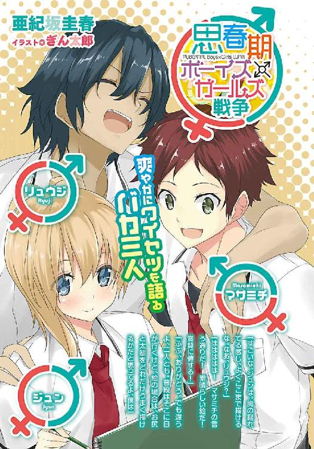
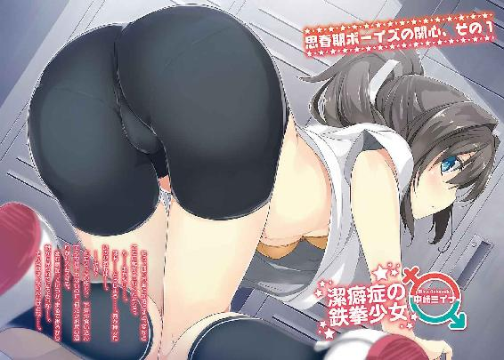
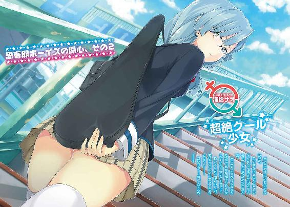
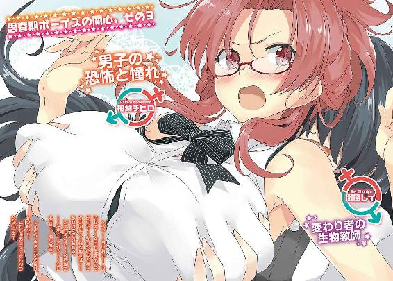
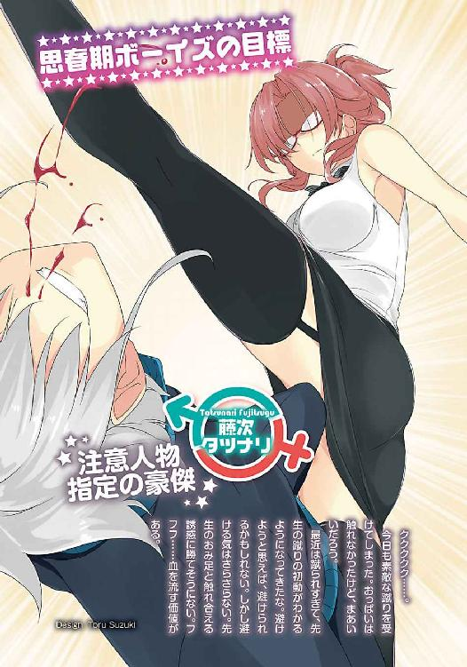
本書（電子版）に掲載されているコンテンツ（ソフトウェア／プログラム／データ／情報を含む）の著作権およびその他の権利は、すべて株式会社ＫＡＤＯＫＡＷＡおよび正当な権利を有する第三者に帰属しています。
法律の定めがある場合または権利者の明示的な承諾がある場合を除き、これらのコンテンツを複製・転載、改変・編集、翻案・翻訳、放送・出版、公衆送信（送信可能化を含む）・再配信、販売・頒布、貸与等に使用することはできません。
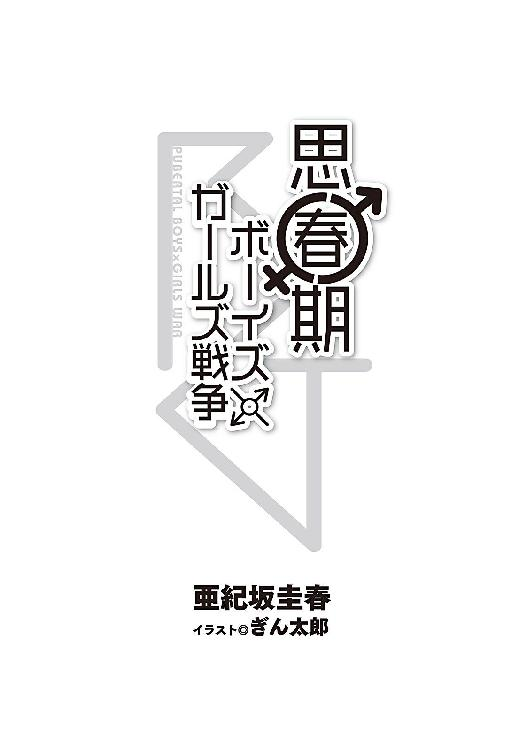
プロローグ 逢魔が時
日が傾き始めていた。夕焼け空の下、俺たちは歩いていた。
高校に入って二ヶ月半。こんな日が来るとは、夢にも思わなかった。
道すがらは寂しかった。これからのことを考え、不安が押し寄せる。
不意に、寒気がした。
時期は六月。外気は暖かい。しかし体が震えた。周囲の全ての視線が俺を見ている。錯覚とわかっている。それでも際限なく膨らんだ恐怖が、心を襲う。強迫観念が俺を戦慄させた。
アスファルトの感触が、直に伝わるように思えた。硬さ、凹凸、冷たさ。まるで裸足で歩いているようだ。神経が鋭敏になっている。異常な状況だからだろうか。
また人とすれ違い、肩をすぼめた。思わず俯く。ばれたのではないか。
カラスが鳴いた。見上げると、真上の電線に、五羽並んでいる。俺たちの行く末が、不吉なものと暗示しているように思えた。胸が苦しくなる。足取りが重い。つまずき、転倒した。
「大丈夫か、マサミチ」
隣の男、ジュンが手を差し出した。「悪い」俺は呟き、その手を取って立ち上がる。握り返すジュンの手は、力強かった。ジュンは俺より頭一つ小さいが、胸に秘めた想いは誰より大きい。
「そんなに心配するな。行くぞ」
ジュンが俺の背中を叩く。俺は頷き、再び歩き出した。もし今一人だったなら、逃げ出していたかもしれない。しかし隣に仲間がいるのは心強い。俺が歩けるのは、ジュンのおかげだ。
ふと、リュウジの言葉が、頭を過ぎる。
「人生に命を懸ける瞬間があるなら、それは今だ」
その言葉と共に、リュウジが自らを犠牲にして作ったチャンスだ。無駄にはできない。
これでは駄目だ。胸を張れ。俺たちの使命は重い。俺たちは歩く。一歩ずつ、ゆっくりと、しかし着実に歩を進める。背中にみんなの思いを乗せて。そして俺たちはこれから。
女子寮に、忍び込まねばならぬ。
そのため俺たちは今、女子制服を着ている。みんなで必死に準備したものだ。そしてウイッグを被り、胸に詰め物をした。とても親には見せられない恰好だ。しかし完璧な女装。
特にジュンは体が小さく華奢で、顔つきも柔らかく、女子にしか見えない。女子が見ても、女子と間違えるほどだ。その影響か、隣の俺もばれていない。全ては計画通りだ。
西日が目に入り、思わず手で顔を覆った。そのとき、ふと、今日までの日々が思い返された。夕闇が、心を感傷的にさせたようだ。
考えてみれば、俺たちの不遇は、中学の頃から始まっていた。
あの日、誓い合ったときから、いつかこうなることは、運命だったのかもしれない。
１ そして退屈な日常が終わる
思春期だった。
どうしようもなく思春期だった。
女子を意識し始めたのは小学生の頃、隣の子の胸が大きくなり始めたあたりだろうか。
しかしその気持ちの向け方は、わからなかった。何をどうして良いのか見当もつかなかった。
だから中学生に憧れた。大人だと思った。何か知っているはずだと思った。中学生になれば、ほっといても必ず女子と何かある、口に出して言えないことも起こると心をときめかせていた。
しかし現実は残酷だった。せっかく中学生になったのに、そんな他力本願の考え方が災いし、自らの人生を何一つ開拓しなかった。当然、女子と仲良くなることはなかった。
それでも悶々とした思いは膨らむ。どうしても目が行く。翻るスカート。揺れる胸。しかし、見る度に糾弾され、女子の指導を受けた。正座、説教、反省文。直接殴られることも珍しくなかった。女子は男子を導くもの。昔からのあり方だ。何事も女子が先頭に立つ。男子の問題は、女子が制裁する。特に助平な行為は厳罰だ。
俺たちは女子の第二次性徴にドキドキしつつも触れ合えず、欲求不満を絶えず募らせていた。気を紛らわせるため、下劣な談話に花を咲かせるという華のないことばかりしていた。
悲しみに打ちひしがれた。辛かった。しかし何があろうと、女子への興味は消えなかった。
俺たちは──思春期だった。
この心を静めるには、もはやプロの女性に頼るよりない。そこでビデオショップへ向かった。変装した上、父の会員カードを借りる念の入れようだった。わくわくしながら店内を回った。
そして首を傾げた。心の隙間を埋めるものがなかったのである。代わりにポスターがあった。
『男子制限法により、猥褻物の販売、及び貸し出しを禁止する。 内閣府』
調べて愕然とした。その法は数年前に施行されていた。意義は「男子の思想・行動の制限による、性犯罪の根絶及び風紀の健全化」である。長年の考え方を形にした法律だ。だが現状は女性優位を助長しているだけにすぎず「女尊男卑法」と揶揄されているそうだ。
だが一番の問題は、そんなことではない。この法により、美術品を除き、男性が喜ぶ助平な雑誌、小説、写真集、映像メディアが店頭から消えたことだ。しかも漫画の下着の描写にまで規制が入る始末だ。バトルシーンで女の子の下着が隠されすぎなのも、これが原因だったのだ。
社会の閉塞を実感した。そしてフラストレーションだけが、歪んだ形で溜まった。
女性はどんな下着を着けているのか。
女性のおっぱいとはいかなるものか。
女性の下半身はどうなっているのか。
俺たちは渇望していた。女性に興味津々だった。少しでも情報が欲しかった。
しかし美術館で裸婦の銅像を見たが、細部がよくわからない。ドキドキしながら、女の子のおままごと用の人形を裸にしたが、よくわからない。保健の教科書にあった下半身の断面図は教える気がない。
頭は思春期の妄想で一杯だった。もう女性と目が合っただけで恋に落ちてしまいそうだった。
そのまま中学の三年間が過ぎた。気持ちをもやもやさせたままだった。
だから中学最後の思い出に、女子更衣室へ入ってみようと思ったのは、自然の摂理だった。
卒業の四日前。この日は午前中で学校が終わった。俺とリュウジとジュンの三人は、帰路に就くと見せかけて、昼飯も食べずに、一階のある部屋の前に来た。女子更衣室だ。
世の風潮に負けず、今日はここに立て籠もってやろうと決めた。
普段は部屋の中を覗くことすら難しい。着替え中は、カーテンが閉まっている。窓とたった一枚のカーテンが、ベルリンの壁より厚い仕切りを作っている。
これまで俺たちは、中の様子を想像し、僅かに心を満たしていた。今日までに多くの女子がこの部屋で服を脱いだという歴史的事実、この壁や窓が目撃した真実、それらに思いを馳せていた。中学時代に希望の光を見出せなかったが、こういうところには希望を見出していた。
しかし今日は違う。中に足を踏み入れようと思った。あのサンクチュアリを、肌で感じたいと思ったのだ。俺たちは飢えていたのだ。
俺たちは知っていた。鍵がかかるのは、授業や部活で使われるときだけだと。だから部活が始まる前に、作戦を遂行しなければならない。そのための大きな段ボールも用意した。
念のため、耳をそばだてた。人の気配はない。神は俺たちを見捨てていない。
俺たちは秘密の花園へ飛び込んだ。
エデンだった。
中央には木のテーブル。整然と並ぶ灰色のロッカー。何の変哲もない、寂寞とした更衣室。
しかし不思議と心地好かった。興奮はせず、むしろ心が洗われるようだった。周囲の無機質なコンクリートの白壁は、まるで教会のそれのように、神聖なものに感じた。空気も違う気がした。春めき始めた外とは、一味違う暖かさと香りを持っている。胸一杯に吸い込む。まずはここの雰囲気を楽しむ。いつまでもここにいたかった。俺たちは今、多くの女子が服を脱いだ場所に立っている。空間を共有している。目を閉じれば、女子のキャッキャウフフが聞こえてくるようだ。素晴らしい。素敵だ。やはりこれはもう、実際に見るしかない。
予定通り、立て籠もりを敢行した。この時期は、校内の荷物整理が行われている。その荷物の一部が、更衣室に保管されていた。一つ二つ三つ段ボールが増えたところで誰も気付かない。用意した段ボールを組み立てて隠れ、わくわくしながら人が来るのを待った。
しかし、一時間経ち、二時間経っても誰も来なかった。
後でわかったが、この日は卒業式準備のため、部活停止期間に入っていたのである。
帰宅部だった俺たちは、そんなことは露知らず、粘り強く待った。しかし人の気配は全くない。だんだん腹も減ってきて、切なくなったがそれでも待った。
そして念願が叶った。一人の女子が入って来たのである。
後ろ姿しか見えないが、モデルのようにすらりとした長身で、スタイルが良い。髪形はポニーテールで、いかにもスポーツをする姿だ。期待大だ。
彼女はロッカーに鞄を入れると、上を脱ぎ、下着姿になった。後ろしか見えないが、思わず唾を飲み込む。しかしすぐにＴシャツを着てしまった。
だが、これからだ。
彼女は鞄からスパッツを出した。いよいよ、下を着替える。スカートを脱ぐときだ。
しかし彼女は、スカートを穿いたままスパッツを穿いた。だから見えなかった。愕然とした。
ただ、スカートの中に手を入れ、もぞもぞ動く姿はちょっと好きだった。
そしてスカートを脱ぎ、運動着に変わった、そのときだった。彼女の鞄から財布が落ちて、小銭がジャラジャラと散らばってしまった。
彼女は慌てて、それを拾い集める。初めて顔が見えた。そして我に返った。
同じクラスの中崎ミイナさんだ。
中崎さんは同じクラスの男子矯正委員だ。この委員は、男子制限法の施行に伴い各学校に設置されたという。男子が良くない行動をとった場合に、対話ではなく物理的手段で解決する役割を担っている。つまり力による制裁だ。彼女が俺たちを殴った張本人だ。長身の彼女の力は強く、今まで何人を病院送りにしたかわからない。見つかれば命の危機だ。
俺たちは息を殺した。彼女が去ったら、すぐにここを出ようと決めた。
「んー......もう、何でこんなとこに転がってくかなあ」
中崎さんは言った。どうやらロッカーの隙間に入ってしまったようだ。彼女は四つんばいになって、隙間を覗き込んでいる。
そして息を飲んだ。中崎さんは完全にこっちにお尻を向けている。スパッツだから、綺麗な丸い形がくっきりわかる。しかも彼女は肩を床につけているらしい。だから、よりお尻を突き出す恰好になっていて、下着のラインが透けている。そして時折、左右に振っている。
それだけではない。シャツがめくれ上がり、彼女の裸の胴体が見えているのだ。ブラジャーと胸の下側が見えているのだ。目は釘付けになった。
「んー......ん......取れな......あ......」
中崎さんは、吐息混じりの、やたら艶かしい声を出した。口では言えないようなことをしているときにも、こんな声を出すのだろうかと、つい思ってしまった。
中崎さんは官能的なポーズのまま、ロッカーと格闘している。
そのとき、上でガタガタと変な音がした。隙間から見上げると、ロッカーの上に積み上げられた段ボールが、今にも崩れそうなのである。そしてそれは崩れた。
天罰かもしれなかった。その荷物は、一直線に、俺に降り注いだのだ。
そして俺は、下敷きになった。ペシャンコになった。かなり痛かった。このとき声を上げなかったのは意地である。
しかし当然、中崎さんは振り返った。「うわっ！ 大変だ！」彼女は言い、こっちに来た。
「中のもの、大丈夫かな」
大丈夫じゃなかった。しかし見られるのは、もっと大丈夫じゃなくなる。無視してくれ！
そんな願いも虚しく、中崎さんは俺の箱を開けた。
そして、静寂が流れた。暫くの間、見つめ合った。
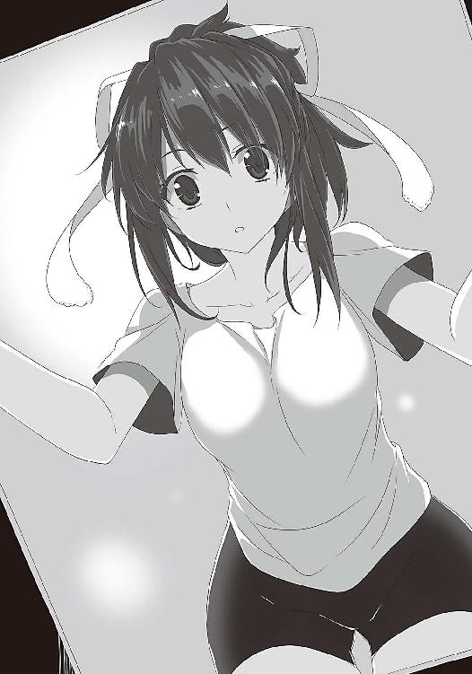
少し、息を吸った。その空気は、まるで冬の外気のように、全身の体温を奪っていった。
暖かい空気は、いつの間にか、冷たく凍りついていた。
部屋から、音が消えた。静かだった。外で遊ぶ少年の声が、遠く聞こえた。
解決策が思い浮かばなかったので、俺は死んだ振りをした。
しかし、中崎さんの顔が、見る見る真っ赤になった。
「何やってやがんだ！」
中崎さんは怒鳴った。顔は般若のようだった。そして中崎さんは、拳を振り上げた。
死んだ振りは、振りじゃなくなった。
後から事情を聞いた。彼女はその日の委員会の後、着替えに来た。バスケ部員だった彼女は、卒業を名残惜しみ、個人的に体育館で汗を流そうとしていたのだという。
ボロボロにされた手当てもないまま、俺たちは先生に呼び出された。「中崎さんの呻き声が聞こえたので思わず飛び込んだら、段ボールの山が崩れてきて巻き込まれた」と弁明したが、いまいち信用してもらえなかった。
同じクラスの門倉リツカさんは、先生に言った。
「親切心で入ったわけですし。それに卒業式前だから、問題にしなくても、いいんじゃありませんか？ みんなで卒業したいですから。ね、ミイちゃんはそう思わない？」
彼女だけは、かばってくれた。あのときは流石に悪い気がした。
しかし期待はあった。門倉さんと中崎さんは、親友である。彼女なら怒り心頭の中崎さんを宥めてくれるのではなかろうか。しかし中崎さんは低い声で、
「ああ？」
と睨んだ。門倉さんは、中崎さんの剣幕に押された。
結局、俺たちの主張は通らず、謹慎処分になった。女子には露骨に蔑まれ、男子にはこっそり称えられた。
こうして俺たちの中学時代は、最低の結末を迎えた。この噂は、すぐに広まるだろう。高校入学前にして、早くも未来は打ち砕かれた。
その夜は空気がとても澄んでいて、月の輪郭がはっきりと見えていたことを、俺たちは一生忘れないだろう。
今日は卒業式だった。しかし、俺たちは出席させてもらえなかった。そこでリュウジの家に集まった。そして卒業に際し、女子に言われて嬉しい言葉について検討した。
少し涙目になりつつ「絶対、同窓会やろうね」はマル。
「高校も同じだから、来年からもよろしくね」そして肩を叩かれる。これもマルだ。
もじもじしながら「あの......ずっと好きでした！ 付き合ってください！」
花マルだ。素晴らしい。百点満点だ。こんな言葉をかけられたかった。
では俺たちの場合はどうだったか。
「死ね」だった。実に端的な罵倒だ。その他「最低」「気持ち悪い」「消滅しろ」などありとあらゆる罵詈雑言を浴びせられた。「アルバムの同じページに入りたくない」は地味にきつかった。
「何だったんだろうな、俺たちの中学時代は」
リュウジが遠い空を見て言った。長方形に切り取られた空は、より平面的に見えた。
時計の針が虚しく響く。寂しかった。
みんなはどんな言葉を交わして、巣立って行ったのだろう。
下級生からは、祝福の拍手を受けただろう。昼過ぎには卒業証書を受け取り終えたはずだ。打ち上げは、カラオケやボウリングに行ったかもしれない。そろそろ二次会か。
考えないようにしていたことが、次々に頭を駆け巡る。
俺は顔を歪ませた。思い出した途端、傷が痛み出した。荷物の下敷きになった上に殴られ、散々だった。ぐらついた歯は落ち着いたが、切れた唇と口の中は、まだ治らない。
「大丈夫か、マサミチ。まだ傷が痛むのか？」
頷き、リュウジに顔を向ける。リュウジは顔を踏まれた。鼻血が止まらず、大変だった。
「怖かったね、あのときの中崎さんは」
ジュンは言った。いつ見ても女子にしか見えない顔の、左目の下が青く腫れ上がっている。
「俺は中崎さんより、女子の視線が怖かった。あれほど死にたいと思ったことはない」
今思い出しても、気落ちする。しかし、リュウジが言った。
「俺はドキドキしたぞ。女子のあの、突き刺さる視線。快感ではないか」
そして顔を綻ばせた。ジュンが溜息をついた。
「リュウジの性癖は流石だね。リュウジみたいな変態になれたら、人生は幸せだろうね」
「ジュンの言う通りだ。だけど俺は、リュウジのようになりたくない。すまない、リュウジ。俺はお前の感性を受け入れる度量は持っているつもりだけど、なかなか理解に至らない」
「問題ない。簡単に他人を理解できるとか言う奴ほど、薄っぺらい。信用できないものだよ。本音をぶつけてくれる友達がいることが、最も幸せなことだ。俺も自分を曝け出せる」
照れくさいことも堂々と言う。何だかくすぐったくなる。自分の性癖すら隠さないリュウジの言葉には、いつも心を動かされる。最も感服したのは、前に興味本位で質問したときだ。
「神様から、絶対に手に入らないものでも何でももらえるとしたら、何をもらう？」
「姉をもらって、いじめられたい」
これ以来、俺はリュウジを天才だと思っている。
その天才のリュウジは言った。
「一体、誰が悪いのだ？ 俺たちか？ いいや違う！ 悪いのは、この社会だ！」
世界は残酷だ。強引な政策が、社会に歪みをもたらしたことに目を瞑る。
間違っているのは俺たちじゃない。この世界なのだ。リュウジは立ち上がった。
「我々は、この世界と戦わなければならないのである！」
「そうだ！ 未来は自分たちの手で切り開かなければならない！」俺も立ち上がる。
「この閉塞しきった世界に革命を！」ジュンが高らかに言う。
俺たちは固い握手を交わした。
この日、俺たちは、清く正しく生きることをやめた。
卒業式の翌日、俺たちは学校へ足を運んだ。先生は言った。
「比嘉マサミチ、菊間リュウジ、飯沼ジュンの三名を卒業とする。もう馬鹿なことをするなよ」
そして形ばかりの卒業式を行い、学校を出た。
それから俺たちは、リュウジの家に集まった。そして沈黙が流れた。
一晩経って冷静になり、俺たちは気付いてしまったのだ。口で何と言おうと、結局俺たちは、女子と仲良くなりたいだけだということに。それで全て解決するのだ。他に解決策はないのだ。どこに怒りをぶつけたとしても、それは八つ当たりにしかならない。
しかしもう、女性関係は絶望的だ。俺たちは出口のない迷路で、彷徨っていた。
現実はさらなる追い討ちをかける。来月、俺たちは同じ高校に入学するが、門倉さんと中崎さんも同じ高校なのだ。中崎さん......入学を取り消されることはなかったが......終わりだ。
しかし目を背けていては駄目だ。淀んだ空気を吹き飛ばすように、リュウジが口火を切った。
「諸君！ 我々は春から高校生になる。交友関係は広がり、異性の知り合いも増える。ならば我々を好いてくれる方もいるかもしれない。しかしながら、我々の悪評が立つことは、容易に考えられる。そこでまず、どうすれば女の人と自然な会話ができるか、検討しよう」
低い出発点だった。しかし、交際するなど二の次なのである。まずはここを解決しなければ、振り向いてもらうことすらない。だからリュウジの言うことはもっともだ。
しかしそこで、俺の頭に疑問が生じた。
「もう少し、掘り下げて考えてみよう。俺たちは何故、女性と仲良くなりたいのか」
「そんなの決まってるじゃないか」
ジュンが言った。
「エロいことをしたい」
「なるほど。実に的確で説得力のある言葉だ。畢竟、そこに集約されるのだろう」
「やっぱり恋愛の根本は、そこにあるのか」
「そもそも我々が、異性に対して過敏に反応するのは、異性に対する知識がなさすぎるからだ」
その通りだと思った。法の影響で得られる知識が少ない。それでも欲求だけ高まる。だから必要以上に悶々とし、尿検査の前日に女子が集められるのを見ただけでドキドキしてしまう。
以前、新聞に、男子制限法の必要性を説く、こんなコラムがあった。
法の施行で男性の性欲が高まれば、男性の結婚願望が高くなる。結婚するためには経済的な余裕が必要だ。だから男性は、より仕事に精を出す。その結果、経済の活性化を促す。晩婚化も防ぎ、少子化対策にもなる、と。
「これは詭弁だよ」
リュウジは一蹴した。流石は一目置くべき男、リュウジだと思った。
とにもかくにも重要なのは、知識を増やすことだ。俺は言った。
「ということはだ。とりあえず知識欲が解決されれば、俺たちは焦らず、この問題に対処できるんじゃないか？」
「そうかもしれない。高望みはしない。だがパンツくらいは見てみたいものだ」
リュウジが答えたそのとき、ジュンが少し首を傾げた。
「ちょっと思ったんだけどさ、女の人の下着の呼び方って、それでいいのかな？」
「どういうことだ？」俺は訊く。
「だって、パンツはズボンの意味にもなるから」
「そう言えば、パンティーとかショーツとかいう呼び方もあるな」
そのまま、女性用下着の正しい呼称はパンツかパンティーかショーツかという、社会的には何の役にも立たない議論をした。答えは出なかった。
残ったのは、虚しさだった。
「何故こんなことになってしまったのだ......」
リュウジは頭を抱え、呟いた。
「せめて俺たちに、幼馴染みの女の子がいたら、こうはならなかったであろう」
そして俺に目配せした。そう、中学に入学しても何一つ良いことがなかった俺とリュウジは、あの女の子のことばかり考えていた。
もうこの世にいない女の子のことだ。
あれはまだ、俺とリュウジが幼稚園児だった、ある夏の日。公園で遊んでいたときの話だ。
「ねえ、ボクも一緒に遊んでいい？」
それは白いワンピースを着た、長いお下げ髪の少女だった。
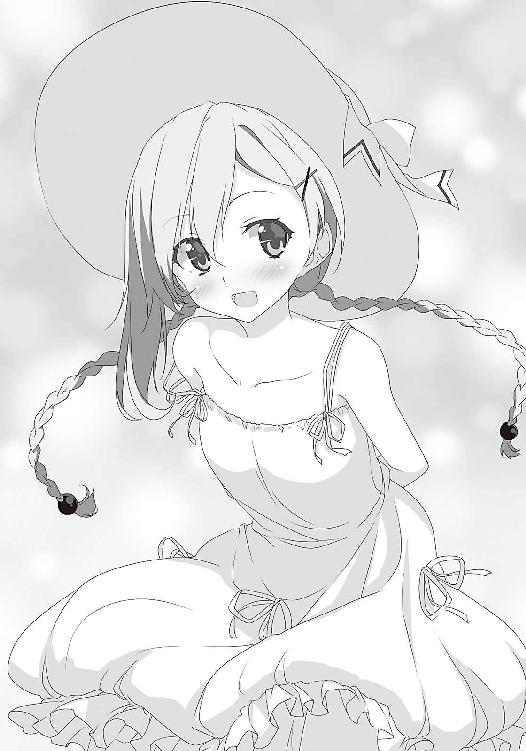
女子なのに、自分を「ボク」と呼ぶのは変に感じた。それに女子と一緒に遊ぶなんて恥ずかしかった。話も合わないと思った。
しかし彼女は、俺たちと共に走り回り、転んで服が泥だらけになっても、楽しそうだった。特撮ヒーローの話も詳しく、よくヒーローごっこをして遊んだ。
ところが小学校入学を転機に、彼女と会わなくなってしまった。
中学入学後、女性関係に希望を見出せなかった俺たちは、彼女のことばかり考えていた。
切ないことに、女子とあんなに楽しく過ごした日々は、あれが最初で最後だったからだ。
彼女は可愛かった。きっと美人になっているに違いない。今は、どうしているだろう。是非再会したい。そしてまた、あの頃のように楽しい時間を過ごしたい。
妄想の中で、俺は彼女と恋人気分を味わい、心を満たしていた。
強い思いは実を結んだ。
中学二年の、クラス替えのことだった。掲示板に貼り出されたクラス名簿を見て、俺たちは舞い上がった。そこに思い出の少女の名前があったのだ。興奮のあまり、眠れなくなった。
ついに迎えた始業式、俺たちは期待に胸を膨らませ、教室に飛び込んだ。
俺たちに気付き「やあ、久しぶり」と微笑みかけてきたのは、間違いなくあの子だった。
感動が込み上げてきた。弾けるような笑顔。整った目鼻立ち。髪はショートカットになっているが、昔の面影がそのままだ。思い出の少女、ジュンだ。その華奢な体を包むのは、俺たちと同じ男子制服。男らしい平らな胸。ああ、なんて可愛らしい男子に成長したんだ。
一旦教室を出た。あれは誰だ？ 何故ジュンが俺たちと同じ制服を着ている？
「どうしたんだよ」ジュンが顔を出した。
その顔を見た。とても可愛い。すぐにでも抱きしめたい。首から下を見た。男子だった。
「飯沼......ジュン......？」
「おう。マサミチとリュウジでしょ？ 幼稚園のとき以来だな」
思い出は、音を立てて崩れた。
現実を受け止められなかった。楽しそうなジュンに対し、愛想笑いしかできなかった。俺は一日メシが喉を通らず、リュウジは翌日、学校を休んだ。
こうして彼女はこの世から消えた。そして俺たちは歪んだ。でも誰が俺たちを責められよう。
スカートを穿いた子を女子だと思うのは自然なことだ。加えて「ジュン」という、男女どちらにも使える名前が、勘違いに拍車を掛けたのだ。
勿論ジュンは悪くないとわかっている。あの恰好も親にさせられていたらしい。だがそれでも裏切られたという思いは募った。俺たちは、よほど女の子と縁がない星の下に生まれたのだ。
俺はちらりとジュンを見た。
「僕のせいだって言うのかよ」
ジュンがムッとした表情で言う。「そんなことはない」と、俺は首を振った。
「ただ俺は『ジュンが本当は女でありますように』って、お星様にお願いした」
「気色悪いことをするな」
「俺の中で、何かが変わる気がした」
「そもそも歴史が変わってるじゃないか」
「そうだぞ、マサミチ」リュウジが口を挟む。「そんなことになったら、一人の幼馴染みを取り合う、憧れの展開になるではないか」
「そうしたら、俺はリュウジに負けない」
「いやいや、選ばれるのは俺だ」
「リュウジは変態だから無理だ。そうだろ、ジュン！」
「二人とも死ね！」
......不毛だ。
「何故俺たちは、こうなってしまったんだろう」俺は項垂れた。
「そんなの決まっているではないか。気持ちだけが先行して、実態がついていかないからだ」
要するに、欲求不満は積もり続けるのに、女子との縁は遠くなっているということだ。
「俺たちは焦りすぎているのだ。そもそも、無理に女子と仲良くなる必要はない。それなのにこんなに苦しんでいる。性的な欲求が満たされないから、こんなことになるのだ」
「僅かでも、俺たちの心の隙間を満たすものがあればいいんだけどな......」
心の隙間を満たすもの。それは何か。
簡単だ。エロ本だ。そう、エロ本さえあれば、俺たちの悩みも、少しは解決するのだ。
俺たちは気付いた。恋愛感情はエロい気持ちと表裏一体だ。助平なものを見て知識や好奇心を満たせば、鬱屈した思いも緩和され、一石二鳥なのだ。
しかし社会は、これを許さない。それどころか、社会は男子制限法なる悪法を作ってまで、歴史の上から猥褻物の存在そのものを抹殺しようとしている。
だがそれは不可能だ。
世界から風紀を乱すものが撤去されれば、若い世代は存在を知らなくなるだろうと思いきや、男子はどこかで知ってしまう。どんなに世界がそれを隠しても、そういうものがあったということ自体は、どこかで調べてしまうのだ。男子はこういうときに、やたら強さを発揮する。
しかし未来永劫、それらは俺たちの手には入らない。
エロ本を読んでみたい。そして心を解放したい。
そうして気持ちが悶々とし始めた最中、ジュンが思い立ったように言った。
「そうか。何でこんな簡単なことに気付かなかったんだろう」
「何か、良い案が閃いたのか？」
「僕たちはエロ本を読みたい。でもこの世にない。それでも読みたい」
「そうだ。でもどこにもないから困っている」
「だったら僕たちで描けばいいんだよ！」
全てはジュンのこの一言から始まったのだった。
２ 少年たちは堕ちて行く
帰りのホームルームが終わり、にわかにクラスが騒がしくなった。
蒸し暑い一日だった。明日はもう五月だ。気温が上昇し始めている。窓からは光が差し込む。グラウンドでは、部活を始める生徒が、ちらほらと見え始めた。
俺はぼんやりと、ホームルームで配られた紙を眺めた。生徒会からのお知らせだ。
『校内の健全化促進に向けて』
今年度の、生徒会の目標らしい。学校の風紀を整えるためのプロセスが書かれている。男子制限法の施行以来、この手のスローガンが増えている。そして、この部分に目が止まった。
『最近、猥褻な内容の本を描いている者がいる。情報を持つ者は、報告すること』
少しドキリとした。今はジュンが、イラストの練習に精を出しているからだ。しかし実際の作品作りには至っていない。俺たちは無関係だ。こんな世の中だ。俺たちと同じことを考える人が、他にいてもおかしくない。
それに先日、ジュンが言っていた。
「うちの高校には、伝説の絵師っていうのがいるんだって」
画材屋で女子が噂しているのを聞いたそうだ。なんでも、卑猥な本を描くことを生き甲斐にしている勇者らしい。俺たちの先輩に当たるわけだ。しかし、どこの誰かはわかっていない。
是非会いたいと思った。漫画を描くなら技術を持つ人から吸収した方が良い。あわよくば、描いたものをいただけないかと考えた。俺たちはその人物に接触するべく、調査を始めた。しかしこの人について語るのは御法度のようで、全く情報が集まらなかった。もはや都市伝説なのかとも思えた。しかし唯一、三年の「藤次タツナリ」なる人物と繫がりを持てば、何か起こるということだけわかった。しかしこの先輩は、なんと停学中だという。
だから最後の『以下の者を、風紀を乱す要注意人物に指定する』という項目に目を奪われた。
『３─４ 藤次タツナリ』
名指しで注意されている。やはり相当な人物なのだろう。
「暑いね」
声がして、ふっと影ができた。顔を上げると、小柄な体が窓際に立っていた。門倉さんだ。
門倉リツカさん。男女関係なく分け隔てなく接してくれる。中学最後の事件以来、俺は彼女が気になってしょうがない。同じクラスとわかったときは、天にも昇る心地だった。
彼女は手でひさしを作り、空を見上げた。窓際の俺の席は、特に日差しが強い。外から風が吹き込む。門倉さんのショートヘアが揺れた。
そこに大きな影が近付いた。
「リツカ......また、そんな奴と」
中崎ミイナさんだ。彼女もまた、同じクラスになった。今日も黒いセミロングの髪を、ポニーテールにしている。そして高校でも、クラスの男子矯正委員となった。神も仏もない。
「もっと仲良くしようよ。同じ中学だし」
「だから嫌なんだ」
中崎さんの中では、あの事件は解決していないらしい。
「ミイちゃんは、部活？」
中崎さんは、高校でもバスケ部に所属している。一年にして、バスケ部のレギュラーを獲得できるかもという逸材だ。摑まれたら逃げられない。
「ミイナ。今日は委員会だよ」
風紀委員の、浦橋ナオさんが声をかける。テニス部であり、切れ長の目が特徴的な美人だ。学年でトップクラスの美人ではないかと言われている。しかし性格はきつい。普段から、氷のように冷たい目で、男子を見ている。その視線は、変態リュウジのお気に入りだ。
浦橋さんが、俺に視線を向けた。そして突き刺すように睨んだ。
思わず俯いた。絶対に昨日のことが原因だ。
「おい、マサミチ」
声をかけられ、俺はゆっくり振り返った。リュウジがいた。
「決めたか？」
「時間までには、必ず決める。もう少しだけ、考える時間をくれ」
「わかった。外で待ってる」
そしてリュウジとジュンは教室を出た。リュウジの声には、棘があった。
俺はまた、ぼんやりと外を眺めた。そして昨日のことを思い出した。
昨日俺たちは、夕闇の中、あの怖い浦橋さんのパンツを見るために頑張っていた。
「エロ本を描こう」と、ジュンが、きらきらと澄んだ瞳で言った後の話をしよう。
ジュンが胸を張って続けた。
「読んでみたい。だったら自分たちで描けばいい。法律も何もない。それで解決だ」
「しかし......」俺は考えた。「漫画なんて、描いたことないぞ。リュウジは？」
「右向きの顔しか描けない」
「大丈夫。僕はそこそこ描ける。昔から、絵を描くのは好きなんだ」
ジュンはさらさらと、水着の女性のイラストを描いた。プロほどではないが、顔つき、体のバランス、骨格や筋肉の描き方、構図や陰影が、素人が描いた絵にしてはうまい。
「これなら......いけるかもしれない」
「俺たちの出る幕は、ないのではないか？」
「問題はストーリーだよ。それが難しいんだ。三人寄れば文殊の知恵って言うじゃないか」
文殊に失礼な気もしたが、納得した。リュウジが少し考え、口を開く。
「とりあえず、まずはキャラクターを考えてみよう。ジュン。思うように下着が見える構図で描いてみてくれ」
「わかった」と、ジュンがペンを走らせる。それを見ながら、俺は何気なく言った。
「ところで、女の人は、どんな下着を着けているんだ？」
俺の言葉に、二人は黙った。そして静寂が流れた。
俺たちはいきなり、壁にぶつかった。圧倒的な知識不足。事を起こそうにも、資料がなく、取っかかりが摑めない。性欲があっても、知識がなければどうしようもない。
ジュンは、とりあえず真っ白いものを描いたが、味気なかった。
「そう言えば、ジュンには姉君がいたよな？」
リュウジが言った。確かにジュンには姉がいる。三つ年上で、今は大学一年のはずだ。何度か会ったことがある。ジュンより少し背が高く、吊り目で眼鏡を掛けた、凜とした美人だった。ジュンが子供の頃着ていた服は、その姉のお下がりである。
「例えば、そう、ジュンの姉君はどんな下着を着けていた？」
「何だったかな......」ジュンは腕組みした。「赤いのとか......それからレースの付いたものも、持っていた気が」
「レース？ それは良い。それでいこう」
リュウジが俄然、勢いづく。
「他には何か情報はあるか？ 例えばスリーサイズとか」
「胸はＣカップだって、前に言ってた」
「ふむ......妥当なところだ。他の二つは？」
「数字は知らないけど、体型は確かこんな感じだったかな」
ジュンはさらさらと描く。リュウジの目が輝く。
「素晴らしい。体型はこれで決まりだ。完成に向けて前進しているぞ」
「......あれ？ ......待てよ？」
ジュンは呟き、ペンを止め、眉間に皺を寄せた。
「これ、モデルがうちの姉貴になってる気がするんだけど？」
「気のせいだ」リュウジが首を振る。「今やろうとしていることはフィクション。虚構と現実の区別がつかない人間は、冷笑されるべき存在だ」
ジュンは「うーん」と首を傾げた。
「次はキャラの顔だ。髪の長さはセミロング。目は少し吊り上がっている。それから、眼鏡を掛けていて、弟が一人」
「やっぱり姉貴じゃないか！」
ジュンは怒鳴り、ペンを机に叩きつけた。そしてリュウジに詰め寄る。
「自分の姉貴がモデルのエロ本を楽しめるか！ おい！ クソリュウジ！ 何でここにうちの姉貴が出てくるんだ！」
「すまない、ジュン。俺、実はジュンの姉君に惚れて」
「なに突然の告白しようとしてるんだ！ それ以上言うな！ 寝ぼけてんのか！ だいたい、もし姉貴とリュウジが何かあったら、お前と友達でいられなくなる！」
「うむ。兄弟になるからな」
「ぶっ殺すぞてめえ！」
「落ち着け！」
俺は慌てて間に入った。しかしジュンの怒りは収まらなかった。
「認めん！ 僕は絶対に認めないぞ！ 僕は降りる！ 言い出したのは僕だけど、これじゃあ協力できない！」
ジュンは部屋を出て行った。俺は溜息をついた。
「リュウジ。何であんなこと言ったんだよ」
「すまない。我を忘れていた。実は読みたいストーリーが思い浮かんでいたんだ。姉にいじめられる弟という話だ。そのことを考えていたら、ジュンの姉君しか出てこなかった。昔から、ジュンが羨ましいと思っていた」
相変わらず、リュウジは「姉」という存在に、憧れを抱いているようだ。しかしリュウジの願望をぶつけられたジュンは、たまったものではないだろう。
「とにかく、明日にでも謝っとけよ」
ところが翌日、ジュンから連絡が入り、俺たちは再び集まった。
「僕も気付いた。姉貴以外の情報がない」
話し合いの結果、とにかく情報を得なければならないと決まった。
こうして俺たちは、とりあえずパンツ（便宜上、パンツと呼ぶ）を見ようと決めたのだった。
一週間ほど前、リュウジが言った。「浦橋さんのパンツを見よう」と。
俺とジュンは反対だった。浦橋さんは美人ゆえ、普段から男子に注目されている。だから、男子の視線に敏感になっている。そう思ったのだ。「やるなら一人でやってくれ」と言った。
しかしリュウジは作戦成功のために、入学以来、ずっと綿密な調査を行っていたのだという。浦橋さんの帰る時刻、通る道、行動パターンなどを調べ上げていた。調査の結果、浦橋さんは女子寮に住んでいるが、火曜日だけは道を外れ、本屋に立ち寄ることが判明した。そのとき、必ず歩道橋を使うとわかった。そこでリュウジは「浦橋さんが歩道橋を上るところを後ろから覗き見る」という作戦を立てた。変に凝っていないため、うまくいきそうな気がした。だから俺たちも計画に加担することにした。
そして昨日、実行した。二十九日。祝日だが、テニス部が活動するとの情報を、リュウジは得ていた。学校に入り、掲示板で部活の終了時刻を確認し、近所で時間を潰した。
ついに部活が終わる。浦橋さんが学校から出るのを見届け、部活帰りの彼女をつけた。
しかし、予定通りの場所で浦橋さんを見つけたとき、ジュンが早々に脱落した。近くにいた婦警さんに、何故男子制服を着ているのかを問いただされ、説明に時間がかかっていたのだ。
浦橋さんが、歩道橋を上り始めた。
仕方なくジュン抜きで、後ろをつけた。そしてリュウジの顔が歪んだ。
浦橋さんは、背中にテニスラケットを背負っていたのだ。そしてそれが、浦橋さんの背後を、しっかりとガードしている。
もう無理だと思った。しかしリュウジは、諦め切れなかったらしい。
「こうなったら、前から攻める」リュウジは言い、向こうにある横断歩道を渡って、反対側に先回りした。降りるところを覗く方法に切り替えたらしい。
それを見届けた後、何となく浦橋さんを見上げ、ぞっとした。
浦橋さんが、こっちを見ていたのだ。
目が合った。たちまち浦橋さんの目つきが険しくなった。警戒感と不快感を露わにしている。
思わず目を逸らした。しかし浦橋さんは階段を降り、ゆっくり近付く。俺は動けなかった。
「今スカートの中を見ようとしてたでしょ」
彼女の声に抑揚はなかった。それがさらに俺を追い詰めた。頭が真っ白になった。
「そ、そんなことは」
唇が震え、俺はしどろもどろになった。完全に不測の事態だった。
「菊間の奴が、ここのところ、ずっとつけていたことも、わかっているんだからね」
リュウジの大馬鹿野郎。ばれてるじゃないか。
「これからもこんなことするなら、学校に報告するからね」
結局その日、浦橋さんは歩道橋を使わなかった。
リュウジの家で、反省会が行われた。俺はイライラしていた。パンツが見られなかっただけならまだしも、唯一俺だけが睨まれるという悲劇まで起こったからだ。
「何やってんだ！ リュウジ！」俺はリュウジに詰め寄った。
「すまない。想定外だった。ラケットを持っていることは、当然織り込み済みだった。だが、いつもなら肩に掛けているんだ。それが今日に限って、背中にピッタリくっつけていたんだ。背中で俺たちを嘲笑うかのように」
「違う！ 浦橋さんは、お前の尾行に気付いていたんだ！ だからガードしていたんだ！」
「何だと......！」
リュウジは膝をついた。そして涙を流した。この計画への思い入れが、よっぽど強かったのだろう。その姿があまりに哀れで、俺の怒りは静まった。溜息混じりで俺は言った。
「これからどうする？ 浦橋さんは、もう無理だぞ。勘が鋭い」
「そう言えばマサミチ。最近摑んだ情報なのだが」リュウジがおもむろに手帳を開く。「門倉さんは、洗濯物をベランダに干しているのか？ しかも下着も」
「何？」ジュンも目の色を変える。「本当か、マサミチ？」
「門倉さん大好きのお前なら、その真偽を知っているだろう？」
俺は言葉に詰まった。当然そのことは知っていた。
「その顔を見る限り、事実のようだな。では、今から早速確認しに行こう」
「ちょ、ちょっと待ってくれ」
「何かをするわけではない。ただ、雲を観察していたら、視界に入ってしまうだけだ」
「違う。そうじゃない」
「好きならなおさら、門倉さんのパンツを見たいと思うだろう？」
「思う。でもそれは違うんだ。確かに以前、門倉さん家のベランダに、下着を干してあるのを見つけた。でも俺は、見なかった。何だか見てはいけないものに感じたんだ。いいか、お前ら。好きな人の下着は聖骸布なんだ。むやみやたらに見ていいものではない」
「お前がうっかり見ようと、見まいと、門倉さんの心情に変化はないぞ」
「何がどう繫がるか、わからないだろ！ 蝶が羽ばたいて竜巻が起こるって話を知ってるか？」
「確かに門倉さんは、お前のことを嫌っていないようだ。これは認めよう。だが、言っておくがな、マサミチ。門倉さんは、ナチュラルでああいう人だ。お前のことを好きとは限らないぞ」
「それでも、俺のことを好きかもしれないって夢ぐらい、見ても構わないだろ！」
「仕方ない。ジュン。マサミチ抜きで行こう」リュウジは立ち上がった。
「駄目だ！ 許さぬ！」俺はリュウジを羽交い絞めにした。
「ええい！ 放せ！」
「落ち着け！ 二人とも！」
ジュンが間に入り、何とかその場は収まった。だが昨日はそのままケンカ別れしてしまい、今日は朝からずっとギクシャクしていた。あんなに大きいケンカは初めてだった。
そもそもの発端は計画の失敗だった。浦橋さんのパンツが見れていれば、リュウジはあんなことを言い出さなかったはずだ。その失敗も、俺が睨まれたのも、全てリュウジの尾行の拙さにあった。それにあいつの変わり身の早さも鼻についた。
この計画、認めるわけにはいかない。
ただ、俺が拒否しても、あいつらは二人で行く。俺も見ていないのに、あいつらだけ情報を得る。それは気に入らない。
二人は校門で待っている。俺は決めなければならなかった。共に行くのかどうかを。
「比嘉君」
顔を向けた。いつの間にか、門倉さんが正面に座っている。
「何かあったの？ 今日一日、菊間君と変な感じだったけど」
「ああ......ちょっとね」
「みんな仲良くしなくちゃ駄目だよ」
門倉さんは、俺の顔を覗き込むように身を乗り出した。ブラウスの隙間から、胸元が見えた。思わず視線が行ってしまった。そしてささやかな主張をする胸が、目に入った。
「あ、もう行かなくちゃ」
そして門倉さんは、俺の肩を叩き「じゃあね」と言って立ち上がった。
俺は机に突っ伏した。
リュウジにはああ言っておきながら、胸を見てしまった。あんなに優しい言葉をかけてくれたのに、俺は下劣なことを考えていた。最低だ。しかし、どうしても気になるのだ。
心はずっと、もやもやしている。リュウジの言う通り、見たところで彼女の心に変化はないだろう。ならばもう、本能に従うべきなのだろうか。
いや、駄目だ。今までずっと、耐えてきたじゃないか。その努力をふいにする気か。彼女とこうして仲良く話ができる。それで十分じゃないか。下着を見に行けば、明日から門倉さんに合わせる顔がなくなる。彼女がどんなパンツを穿いているかなんて気にしてはいけない。
やはり今日の計画には反対しよう。たとえ二人が行っても、俺は自宅待機だ。
「リ、リツカ！ スカート！」
中崎さんが、ただならぬ声を上げた。「わっ」という門倉さんの声が聞こえ、俺は思わず顔を上げた。門倉さんは、スカートの裾を握っている。
「鞄で引っ掛けて、めくれたみたい」
彼女は言った。どうやら鞄を持ったときに、誤ってスカートをめくり上げてしまったらしい。
しかし俺は俯いていたため、見ることができなかった。千載一遇の大チャンスを逃した。
そして思ってしまった。彼女はどんなパンツを穿いているのだろうと。
俺は駄目な男だ。
校門を出たところに、リュウジとジュンがいた。俺は二人を一瞥し、言った。
「行こうか」
声に感情はなかった。
空は茜色に染まり始め、西日が強かった。眩しさに、少し俯く。そのまま何気なく、後ろを見た。三つの黒い影が伸びている。空を見た。ビルの形に切り抜かれていた。
ふと、昔のことを思い出した。
中学の事件を契機に、俺の心は荒んでしまったが、あの頃から、俺は門倉さんに淡い恋心を抱くようになった。俺の心に残った、最後の輝きと言っていい。
俺はこの気持ちを伝えず、ずっと心の内に留めている。
恋愛が禁止されているわけではない。ただ、その主導権は女子が握っている。
しかし門倉さんならば、そんなことを気にしないだろう。単純に、俺に度胸がないだけだ。面と向かって、気持ちを打ち明けることができないのである。
そこで思いを手紙にしたためてみた。翌朝に読み返すと、一体何を伝えたいのかわからない三流ポエムがそこにあり、何だこれはとその場で破棄した。落胆した。
ならば誕生日にプレゼントでもしようかと思いたった。
そこで、彼女の好みを探った。好きな食べ物、好きな曲、好きな雑誌、好きな芸能人などをそれとなく訊いた。学校帰りの彼女を観察し、よく出入りする店も調べた。休日には、私服や出先を調査した。部屋の電気の様子から、生活リズムも見えてきた。そうして彼女の私生活に立ち入り始めた一ヶ月目、自ら調査を打ち切った。俺は一体何をしてるんだと気付いたからだ。お店の双眼鏡が高くて買えなかったときに我に返った。何に使おうとしていたのだ、まったく。
危なかった。絶望しても、まだ理性が残っていて良かった。
しかしその理性も、限界を迎えた。あの瞬間、心のたがが外れてしまい、ついにある程度の解放を必要としたのだ。俺は今から、門倉さんの下着を見に行く。
暫く歩き、目的の場所に着いた。門倉さんの家が見え始める。いよいよ邂逅のときが迫る。
ふと気付いた。家の前に白いものが落ちている。何だろうと思って拾い上げ、言葉を失った。
それは下着だった。ちっちゃなリボンが付いた、女性のパンツだった。何だこれは？ 何故こんなところに落ちている？
辺りを見回す。そして門倉さんの家を見上げ、わかった。彼女の部屋のベランダに、洗濯物が干してある。あそこから飛んだのは一目瞭然だった。
リュウジが絞り出すような声で言った。
「こ、この布が......門倉さんの大事な部分を覆って」
「そういうことを言うな！」
と怒鳴りながら、俺もこの下着を凝視していた。たった一枚の布切れが、俺たちを虜にした。
手が震えた。門倉さんのパンツを見るどころか触ってしまっているのだ。どうしていいのかわからず、その場で動けなくなった。
そのとき、ふっと寒気がし、全身の毛が逆立った。思わず周囲に目を向ける。
「どうした？」リュウジが訊く。
「いや、誰かに見られている気がして」
リュウジとジュンも、首を回す。しかし誰の気配もない。
「気のせいじゃない？」ジュンが首を傾げる。
「だと思うけど」
確かに後ろめたいときは、強迫観念に囚われやすい。だが不意に怖くなった。視線に対する敏感さ。それは門倉さんを調査していたときに培われた感覚かもしれない。
そして頭はパニックを起こした。考える余裕はなくなった。いても立ってもいられない。
俺はパンツを門倉さん家の敷地の中に投げ込み、逃げた。
「おい！ マサミチ！」
後ろでリュウジの声が聞こえたが、俺は足を止めなかった。
気が付いたら、俺は自分の家の前にいた。そしてがっくり膝をついた。
どうするのが正解だったんだ。これはラッキーと持って帰るべきだったのか？ だがそんなことは、俺の良心が許さない。後悔するだけだ。怖いのは、犯罪に手を染めることではない。門倉さんが後で「下着がない」と肩を落とすことだ。だからこれでいい。
しかしそうなのか？ 持って帰ったとしても、ばれはしないだろう。俺たちの目的を達成するために、必要だったんじゃないのか？
何より酷いのは、二人を置いて逃げたことだ。いくら混乱していたとは言え、最低の行為だ。
「俺は意気地なしなのか」
「そんなことはない」
声がして肩を叩かれた。振り返ると、後ろにリュウジがいた。
「あの場では、あれ以外の方法がなかった。誰も困らない方法だ。投げ入れたのは好判断だ」
俺はリュウジに抱き付いた。
「今日は半分成功という結果に終わった。しかし先は長い。俺たちの戦いはまだ続く。今日のことは糧として、明日からの行動に生かそうではないか」
部屋に入るなり、リュウジが高らかに言った。
「俺たちの思いはマイナスに働いている。しかしマイナスとマイナスの掛け算はプラスになることを思い出してくれ。力を合わせれば、きっと良いことがある。俺たちには希望がある」
なるほど、良い言葉だと思った。良い言葉だと思ったが、俺は言った。
「しかし一番の希望というのは、やはり」
全員が黙った。言うまでもない。仲の良い女子ができることだ。
口で何と言おうと、根本的な命題はそれだ。エロ本は、応急処置に過ぎない。
「なあ、リュウジ。もしもだけど、この中の誰かに恋人ができたら、そのときはどうする？」
「もしもの話は、するものではない。おそらく今ここで決めても、実際の場面では、違う行動をとるだろう。しかし逐一、報告は受けたい」
「ジュンは？」
「邪魔はしない。祝福もしないけど。でも漫画を作る計画は成功させたい」
確かに今は、目の前の現実を見るべきだろう。
「それでマサミチ」リュウジが右手を差し出す。「昨日は悪かった。お前の気持ちも考えないで」
少し驚いたが、俺はその手を握った。
「俺の方こそ、すまない。わがままを押し通そうとした。結局はお前と同じ道を選んだのにな。きっと俺たちは、運命共同体なんだろう」
そして今日は解散となった。明日のための教訓を得た、有意義な日だった。
しかし俺たちに、明日は見えない。
二人が帰ろうとしたときだ。ポストに俺宛の封筒が届いていることに気付いた。差出人は、書かれていない。
とりあえず、開けてみる。女性の字だった。
『比嘉マサミチ様へ。あなたを知ったあの日から、ずっとあなたに思いを寄せておりました。今日、あなたにこの気持ちを伝えようと決心しました。かすみ公園で待っています』
これはまさか......恋文！
あまりのことに、声が出ない。生まれて初めてのことだ。二人も目を丸くしていた。
「マサミチに懸想をする人がいるなんて、信じられない。とんでもない好事家だ」
「こいつはただの変態ストーカーでしょ？ 知らぬが仏ってやつだね」
「失礼だな、お前ら。俺の魅力に気付いた人がいたんだ」
俺は手紙を丁寧に畳み、ポケットに入れた。
「すまない。俺はこのプロジェクトから離脱するかもしれない」
「運命共同体の話はどうした。さっき言ってたことと違うではないか」
「僕たちも、この顚末は見に行かなきゃなんないね」
俺たちは公園に向かった。道すがら、どうすべきか考えた。
この気持ちは嬉しい。しかし申し訳ない。俺の心には、門倉さんという人がいるのだ。
公園のベンチに、うちの高校の制服を着た女子が座っていた。他には誰もいない。あの人が差出人だろうか。初めて会う人だ。胸に二年のバッジを付けている。髪をヘアバンドで留めている。少し目尻が下がっていて、優しそうな顔立ちだ。可愛いと美人の中間ぐらいだ。
彼女は俺たちを見つけると、立ち上がり一礼した。そしてこっちに歩いてくる。
「そんな馬鹿な......」リュウジが呟いた。
「もっと幕下力士みたいな人がいて、笑顔で安心して帰れると思ったのに......」
ジュンも、この現実が信じられないという表情だ。もはや悪態もつけない。
そんな二人を尻目に、俺は一度咳払いをし、極めて紳士的に言った。
「この手紙をくれたのは、あなたでしょうか」
彼女は「はい」と頷いた。
「私、あなたのことを、ずっと見ていました」
彼女はにっこり微笑んだ。ドキドキした。年上のお姉さん。甘美な響きだ。つい心が動いてしまう。この瞬間の幸福に、身を委ねてしまいたくなる。どうしよう......。
「それで......あなたにこれを見て欲しいんです」
そう言うと、彼女は鞄から何か取り出した。デジタルカメラだった。彼女はボタンを押し、俺たちに差し出した。
どこか見覚えのある光景だった。男が白い布を広げ、後ろから二人の男が興味深そうに覗き込んでいる。
どう見ても、門倉さんの家の前でパンツを広げて凝視している俺たちだった。
「素敵な写真ですね。みなさん、良い顔をしています」
先輩は微笑んだ。俺たちは啞然とした。状況が理解できないまま、呆然と写真を見つめた。昂ぶっていた気持ちが、一気に冷める。瞬きすら忘れた。
「聞くところによると、あなた方は中学時代、女子更衣室に忍び込んだ経験がありますよね？ だからずっと見ていたんです。何かやると思っていましたから」
「あなたは......一体......？」
「自己紹介がまだでした。私は二年の園村フユカ。新聞部員です。主に男子のスキャンダルを取材しております。以後、お見知り置きを」
そのとき僕は、自分の体が闇の中に堕ちて行く、そんな錯覚に陥ったのでありました。
３ 地獄の使者
先輩は優しそうな表情を変えなかった。
「何か問題を起こしそうな男子を、徹底的にチェックする。何かあれば、速やかに記事にし排除する。それが私の仕事です。それで、みなさんのことを調べていたんですが......」
再び写真を、見せつけた。
「まさかこんな場面に出くわすなんて」
言葉が出てこなかった。あのとき視線を感じたのは間違いじゃなかった。こんな人がいると思わなかった。この分では、一体どこまで知られているかわからない。下手なことは言えない。
しかし一つだけはっきりしている。それはこの先輩が、俺たちを脅すつもりだということだ。先輩はさっき、何かあれば速やかに排除すると言った。ならば今ここでこうしていることと矛盾する。写真に収めたことを教える意味はない。これは脅迫以外の何物でもない。
「何が......目的なんです？」
俺はゆっくり口を開いた。園村先輩は、顔を綻ばせた。
「実は私、ある人を追っているんです。ですが私一人では限界があるので。自由に使える駒が欲しかったんです」
「誰です？」
「伝説の絵師」
俺たちは顔を見合わせた。
「その顔......やはりみなさん、ご存知なんですね？」
「い、いえ、名前しか知りません。噂で聞いた程度で」俺は首を振った。
「噓はよくありませんよ」
「噓じゃありません！ 本当に知らないんです！」
園村先輩は、ジュンを見た。ジュンの体が、ビクッと反応した。
「そちらの飯沼君。漫画を描いていらっしゃいますよね？ 時々、画材を買っていますから。どんな漫画です？」
それも知られているのか......！ ジュンの目が泳ぐ。
「ふ、普通の漫画ですよ。剣と魔法が出てくるファンタジー」
先輩は、首を傾げる。
「このような行為をしている方が、健全な漫画を描いているとは、思えないんですが」
「ほ、本当に、普通の漫画です」ジュンの声は震えている。
「そうですか。まあ、それならそれでもいいです。で、協力してくれますか？」
俺たちは言葉に詰まった。
「じゃあ、これ、公表しちゃいましょうか？」
「ちょ、ちょっと待ってください！」
「協力しないと、もっと酷い目に遭わせますよ？」
「それは無理ですよ」リュウジが口を挟んだ。「あの下着は、ちゃんと返したんです。これは、あくまで拾った瞬間の写真。物が本人の手元にある以上、この写真に強制力はないはずです」
「うふふ。いくらでもやりようはあります。ペンは剣より強いんですよ」
誰も、何も言えなかった。
「決められませんか。そうですか。では一つだけ、覚えておいてください」
先輩は俺たち一人一人の顔を見て、にっこり微笑んだ。
「私を敵に回すと、怖いですよ」
その後、三人で緊急会議をした。そして愕然とした。唯一の助かる術を逃したことに気付いたからだ。あの場で先輩のカメラを奪い、データを消してしまえばよかったんだ。
しかし呆然としていた俺たちは、そこに考えが及ばなかった。これからどうなるんだ......。
リュウジの言ったことは正しい。しかしあの先輩の態度を見る限り、初めての脅迫とは思えない。慣れすぎている。きっと何度も経験があるのだ。先輩に従わなければ、きっと信憑性のある噓八百が並べられた記事を書かれる。とにかくあの写真が強烈だ。圧倒的に不利だ。あんな写真を公表されたら、女性関係はそれこそ絶望的だ。先輩の言いなりになるしかないのか。
しかし一度でも先輩に従えば、その要求はエスカレートしていくだろう。
伝説の絵師だけではない。それと同じような活動をしている人。彼らを捕まえるために手伝えと言われる。それは全ての男子を敵に回して、スパイになれということだ。もし不測の事態になれば、簡単にトカゲの尻尾にされるだろう。そして男子からも女子からも非難される。
どっちを選んでも最悪。八方ふさがりだった。
先輩の態度から察するに、すぐに俺たちを排除はしないだろう。しかし、これから先、何をされるか見当もつかない。
この事態に陥って一つ気付いた。マイナスとマイナスの掛け算はプラスになる。この言葉に心動かされた。しかし、俺たちは忘れていたのだ。
マイナスとマイナスを足したら、もっとマイナスになるということを。
その夜は、食事が喉を通らなかった。部屋で頭を抱えていた。全く眠れなかった。
いつしか朝になっていた。何も考えつかなかった。重い気持ちで身支度を始めた。
リビングのテレビから、朝の報道番組が流れていた。アナウンサーが映っている。
「今日から五月となりました。全国的に五月晴れとなり、気温が上がる模様です」
晴れやかな顔をしていた。しかし俺の心は曇天だった。
そしてニュースが流れる。かつて流通していた猥褻本を、ネットでこっそり売っていた男が摘発されたとのことだった。コメンテーターの女性が言った。
「男性の性欲は、社会の害悪です。男子制限法は、もっと徹底させるべきです」
その意見を、誰も否定しない。司会者もアナウンサーも頷くばかりだ。有識者は「健全で、道徳的な社会の実現のため」などと宣い、法を正当化する。園村先輩のような人が現れる所以だろう。しかし、あまりに女性目線だ。男子の肩身は狭い。居場所がない。
「我々は、男子としての尊厳を獲得しなければならないのだ！」
かつてリュウジは、こんなことを高らかに言った。しかし俺たちの選んだ現実は、それとは真逆、欲求の解放だった。尊厳の獲得と欲求の解放は対角だ。俺たちの至った結論が、エロ本を描くというものであるということを考えても明らかだ。エロ本に尊厳を見出すのは難しい。
男と女は、永遠に分かり合えないものだと思う。もどかしくとも、結局は女性に合わせる。物わかりのいい顔をして性欲を放棄する。これが世を生き抜く秘訣かもしれない。しかしそれは辛い。だから俺たちは尊厳の獲得より、欲求の解放を優先した。
しかしその結果、俺たちは窮地に立たされている。
駅に着いた。リュウジたちと合流する。そして陰鬱な空気が流れた。天気予報の通り、空は五月晴れだ。だがみんなの顔は晴れない。寝不足の顔をしている。
学校に行きたくない。しかしサボるわけにはいかない。疑われる要素を増やすだけだ。何もやましい点などない、という顔をしなければならない。
改札を通り、男たちはホーム後方に並ぶ。電車の後方が男性専用車両になっているからだ。
電車が到着して、ドアが開いた。そのとき、
「違うんだ！」
叫び声が上がった。全員が一斉に目を向ける。学生服の男が、女性数人に腕を摑まれている。彼は必死で首を振り、声を荒らげた。
「急いでいたから、間違っただけなんだ！」
事情を察した。女性はどこに乗ってもいいが、男性は男性専用車両にしか乗ってはいけない。他の車両に乗ろうものなら即逮捕だ。哀れな彼は、うっかり違う車両に乗ってしまったのだ。痴漢対策らしいが、明らかに男子制限法による弊害だ。罪人が一人、無駄に増えてしまった。
朝からこんな場面に出くわすとは......。ますます憂鬱になった。
「おらぁ！ きびきび歩け！」
女性の怒号が飛ぶ。聞き覚えのある声だった。間違いない。中崎さんだ。
「間違って乗ったぐらいで、あんな騒がなくてもいいのにね。たいした場所じゃないんだから」
ジュンが呟いた。その言葉には、説得力があった。何故ならジュンは、かつて姉の服を借り、女装して女性車両に乗った経験があるからだ。顔に似合わず勇敢な男だとしみじみ思った。
その後、俺たちは興味津々で話を聞いたが、ジュンは仏頂面で言った。
「学校での様子と、ほとんど変わらない。化粧品臭いだけの車両だよ。だから面白くなかった」
それ以来、彼は一度も乗っていない。
だから今捕まっている彼も、たいした経験はしていないはずだ。特別なものを見たわけでもなく、まして何かしたわけでもないだろう。
しかし結局、彼の訴えは聞き入れられなかった。素早く女性駅員がやって来て、彼は駅員室に連れて行かれた。そしてその場の男たちは、哀感の溜息をついた。
男子制限法が、強い女尊男卑を内包しているのは明白だ。あの法律はなくすべきだ。
「おはよう！」
不意に声をかけられた。見ると一人の女子が、微笑んでいる。
「かかか門倉さん！」
「どうかした？」
「い、いや、別に」
後ろめたい気持ちになった。やはり行くべきではなかった。しかし、下着をちゃんと返しておいたのは正解だった。持って帰っていたら、もう二度と彼女に顔向けできなかった。
「別にいいと思うんだけどな。間違って乗っちゃうことって、あり得ると思うし」
「う、うん。そうだね」
「あんな法律なくなって、男とか女とか関係なく、みんな仲良くできればいいのにね」
なんと素晴らしいことを言ってくれるのだろうか。
「おい、リツカ」中崎さんが呼ぶ。「もう行くぞ。学校、遅れる」
門倉さんは「わかった」と言って、俺たちに振り返った。
「じゃあね、三人とも。後で学校でね」
門倉さんは、俺たちの肩をポンポンと一回ずつ叩き、手を振りながら中崎さんに駆け寄った。
「何やってんだよ。あんなのに触ると、バイ菌が付く」
「そんなことないよ」
「リツカはお人好しすぎるよ。あんな奴らと一緒にいると、こっちも不愉快になる」
そして二人は、車両に乗った。俺たちも、電車に乗り込んだ。
流れる景色を見ながら、俺は肩を落とした。中崎さんの言葉が、心に染みていた。
俺たちはバイ菌だ。
俺たちは昨日、門倉さんのパンツに触れ、じっくりと眺めた。しかも理由は、いかがわしい漫画を描くためだ。門倉さんはそんなこと、微塵も思っていないだろう。彼女が笑いかけてくれると、その優しさに付け込んでいるようで、罪悪感を覚えた。
開き直れたら、楽だと思う。しかし無理だった。俺はリュウジに訊いた。
「漫画のこと、もし見つかったら、どうなるんだろうな」
「厳罰だろう。生徒会からのお知らせを見る限り」
「退学まであると思うか？」
「さあな。想像ができない。その前に、園村先輩だ」
どうするか、何も思いつかないうちに、電車は駅に着いた。
今日も校門では、風紀委員と矯正委員が指導を行っていた。勿論全員、女子である。
女子は談笑しながら、昇降口へ向かう。一方の男子は、たとえやましいところがなくとも、背筋を伸ばし、整然と歩く。俺たちも目立たないよう、集団に紛れて歩く。
昇降口前に、強いオーラを放つ、長身で美人の先生がいた。柏葉チヒロ先生だ。英語の先生であり、矯正委員を統べる怖い先生でもある。さらに恐ろしいことに、我々の担任なのである。
入学式のことだ。エロ本を描こうと決めたものの、何も取っかかりがなかった。しかも同じクラスに中崎さんがいる。終わったと思った。希望に満ち溢れていなかった。
しかしそこに、美人の女教師が現れたではないか！
「このクラスの担任になる柏葉チヒロだ」
先生は特徴的な鋭い視線で、教室を見渡した。
だがそれ以上に特徴的なのは、胸だ。胸囲だ。おっぱいだ。とっても大きいのだ。目測だが、一メートルを超えているのではないか。思わず目が行く。見たいかどうかではない。こういうおっぱいは、考えるより先に見てしまうのだ。街で芸能人を見つけたときと同じだ。
心は舞い上がった。それは俺だけではなかった。リュウジが興奮して言った。
「せ、先生、質問してもよろしいですか？」
「何だ？」
「肩は凝りますか？」
「くだらないことを訊くんじゃない！」
柏葉先生は机を蹴り飛ばした。彼は机ごと吹っ飛んだ。そして起き上がることはなかった。
デリカシーのない質問をしたリュウジに非があるだろうが、それでも彼が意識を飛ばして、入学式を保健室で迎えることになったのは、流石に可哀相だと思った。
それ以来、誰も見ようとはしない。見ようとすれば、問答無用で殴られる。生殺しの拷問だ。
先生が教壇に立つとき、男子は俯いたままだ。だが先生は「人の話を聞くときは顔を上げろ」と言う。男子は一体どこを見ていいのかわからないまま、意馬心猿の日々を送っている。
俺は先生の顔色を、それとなく窺った。今日も目を光らせている。そして今日も、おっぱいは大きい。本来ならば、少しくらい外に出してしかるべきサイズだ。
しかし柏葉先生は、一番上まで、しっかりブラウスのボタンを閉じている。柏葉先生は女尊男卑関係なく、規律の乱れそのものを許さない。だからそのように風紀を乱す恰好はしない。しかしボタンは悲鳴を上げている。
「おい、比嘉」
突然、先生が顔を向けた。一瞬、目が合った。心臓が激しく鼓動する。慌てて視線を逸らす。
しかし手遅れだった。
「お前、今、どこを見ていた？」
「せ、先生が今日もお綺麗だと思って、見とれていたんです」
「それだけか？」
「それだけです」
「見え透いた噓を言うな！」
先生は顔を摑んだ。
「お前のような奴が社会を駄目にするんだ！」
そして先生は、腕に力を込めた。親指と中指が、こめかみにめり込む。意識が遠のく。徐々に視界が霞み、目の前が暗くなっていった。見るんじゃなかったと後悔した。
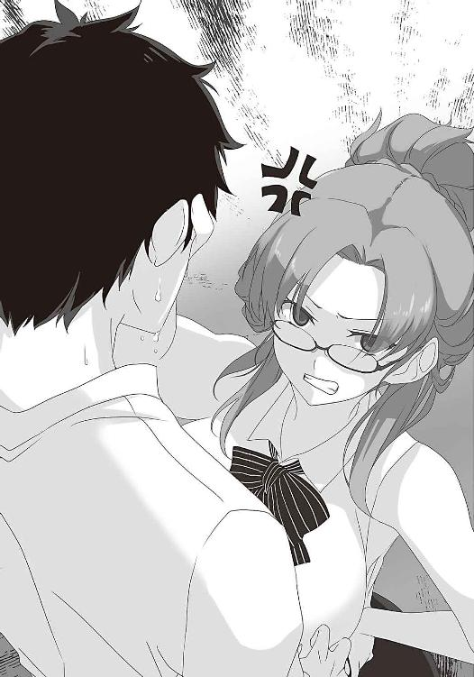
そのとき先生の後ろから、ぬっと二本の腕が伸びてくるのがぼんやりと見えた。それは先生の胸を摑んだ。
「まあまあ......そうカリカリしなさんな」
風邪を引いているような、女性の低いしゃがれ声が聞こえた。そして先生の肩の向こうから、背後霊のように、黒い物体が現れた。
「ちょっと！ レイ......じゃなくて御厨先生！」
柏葉先生は怒鳴り、手を離した。「助かった」と思った。
後ろから現れたのは、御厨レイ先生だ。生物の先生であり、その風体は異様だ。
黒く長い髪が、顔の大部分を覆っている。呼吸するためか、鼻と口だけが見えている。髪の先端は腰まである。着ている服も黒く、長いスカートは足首近くまである。ほぼ全身が真っ黒で、白衣を着ていなければ黒い塊にしか見えない。
長身で瘦せ型。スタイルが良いと言えるが、瘦せているのは不健康の証のようにも見える。
「へへ......相変わらず......でかい胸だね......トップとアンダーの差が......三十くらいかい？」
御厨先生は掠れた声でぼそぼそとしゃべり、ニヤリと笑った。奇妙なほど血色の良い唇の間から、僅かに白い歯が見えた。
「まったく......昔っから......けしからん胸だ」
「大きなお世話だ」
二人は高校の同期らしい。柏葉先生にこの態度がとれるのは、御厨先生だけだ。
「イライラするのは......肩が凝ってるからじゃない？ こんだけ重いの......ぶら下げてりゃあねぇ......へへへ......マッサージしてやろうか？ ......おっと......この辺に胸の先端が」
柏葉先生は、御厨先生の腕を払った。そして俺を軽く睨んだ。
「もういい！ 早く教室に行け！」
俺たちは逃げるように、校舎へ飛び込んだ。
俺たちが離れた後、御厨先生は、行き交う男子から「おはようございます」と元気な挨拶をされていた。実は御厨先生の信奉者である男子は多い。何故なら先生は生物学の中でも、性について造詣が深いからだ。最初の授業からすごかった。先生は教室に入るなり、
「この世に何で......男と女がいるか......わかるかい？」
と、唐突に質問した。何か哲学的なことかと高尚に思い巡らせていると、先生は、ニヤニヤしながら躊躇わず言った。
「交尾のためさ」
教室内が、ざわついた。しかし先生は、そんなことを意に介さず続ける。
「世の中にはね......メスが求愛行動として......オスの目の前で......オシッコをする動物も......いるんだよ......へへ......人間にも......同じ性質があれば......面白いのにねえ......うへへへへ」
最初から全力疾走の人だった。
先生は、人前では憚られるような性についての言動を平気でとり、否定もしない。おそらく先生は、学問として真摯に向き合っているのだろう。しかしそれが、男子の良き理解者に思え、求心力になる。何より柏葉先生の胸を揉む姿が、みなを魅了したのである。
「世の中、意外とバランスはとれているのかもな」
靴を履き替え、リュウジが呟く。俺は「そうだな」と答えながら下駄箱を開け、固まった。
「どうした？」二人も覗き込み、首を傾げた。
リボンが結ばれた、ピンクの謎の袋が届いていたのである。
事情がわからなかった。今日は誕生日でもなければ、何かの記念日でもない。
そして、嫌な予感がした。昨日の出来事があったからだ。あの先輩が、何か仕組んでいるのかもしれない。例えば、昨日の写真を、プリントして入れたとか......。
恐る恐るリボンを解き、袋を開けた。中にはハンカチのような布が入っている。俺はそれを取り出した。ハンカチにしては、少し柔らかいように思える。ちっちゃなリボンが付いている。そして広げて、俺は狼狽した。腰が抜け、その場にへたり込んだ。
間違いない。中に入っていたのは、昨日手放したはずの、門倉さんのパンツだった。
......。
「おい......それって」ジュンが声を震わせ、俺は我に返った。混乱した頭を何とか働かせた。
誰がこんなことしたのか。言うまでもない。あの悪魔のような先輩だ。目的は脅迫だろう。
先輩の仕掛けは、俺の想像を遥かに超えていた。こんなことをするなんて......。
そのとき、予鈴が鳴った。先生や風紀委員が戻ってくる。
俺は慌てて、それをポケットに押し込んだ。
こうして俺は、爆弾を抱えたまま、一日を過ごすことを余儀なくされた。
それからは大変だった。好きな女性の下着が手の届く場所にあるのだ。
頭の中は、パンツで一杯だった。何とか頭を切り替えようとした。考えるな。しかし頭から離れなかった。こんなものを渡されて、どうしたらいいんだ......。
不安と恐怖が募る。しかしそれ以上に、俺の心を揺さぶった感情があった。
見たかったのだ。そして十分な観察の次は、匂いを嗅いでみたいと思......いかん！ それをしてはいけない！ 俺はあの人物の策略により、彼女の下着を受け取ってしまっただけなのだ。この下着を使って欲求を満たそうとすれば、俺は犯罪者と変わらない。それをしてしまえば、もう人として引き返せなくなる。理性というブレーキがまだ働いている。俺は人間だ。
考えるな......触れるな......ここにあるのは、何気ない日常なのだ......。
ようやく一時間目の授業が終わる。大きく息を吐いた。二時間にも三時間にも感じられた。
「どうかしたの？」
不意に声をかけられ、うろたえた。門倉さんだ。
「顔色悪いけど、具合でも悪いの？」
彼女は心配そうに俺を見つめている。その目を正視できなかった。何と答えていいかわからない。しかし何とか自分を保ち、首を振った。
「な、何でもないよ」
「そう？ ならいいんだけど」
そしていつもと同じ、屈託のない笑みを浮かべた。とても昨日、パンツを失くしたようには見えない。でも本心は辛いはずだ。だからその笑顔が、無理に作っているように見えて、俺をさらに締めつけた。
「ちょっとトイレに」
逃げるようにトイレに駆け込む。心の苦しみを吹き飛ばそうと、顔を平手打ちした。そして冷たい水で顔を洗った。火照った顔が冷え、少しすっきりした。脳も冷静さを取り戻す。
蛇口から流れる水を眺め、考えた。これからどうすべきか。隠し通せるか。しかし、持っていたくない。それなら思い切って、捨ててしまおうか。しかし、誰にも見られないでできるか。それに、このパンツが見つかったとき、恥をかくのは門倉さんだ。それは申し訳ない。
一体何が正解なんだ......。
考えがまとまらないまま、ポケットからハンカチを取り出し、顔を拭いた。
そのとき違和感があった。手の中にある布を見て絶句した。パンツだった。
思わず壁を殴った。
俺は何をやっているんだ！ なんてもので顔を拭いているんだ！
鏡に映る自分の姿が目に入った。パンツを握りしめているそれは、ただの変質者だった。
怒りが込み上げてきた。同時に恐ろしくなった。あの場には三人いたにもかかわらず、俺の下駄箱に入れたのは、俺が門倉さんを気にかけていることを知っているからに違いない。もしあの過ちまで知られていたら、俺はもう生きていけない。
そのとき、人が来る気配......俺は慌てて下着を畳み、ポケットに突っ込んだ。
動悸がし、汗も流れたが、俺は何事もなかったかのように、トイレを出た。
昼休みに新聞部の部室の近くで園村先輩を見つけ、詰め寄った。
「何てことをするんですか！」
「何のことですか？」
「とぼけないでください！ 俺の下駄箱に、とんでもないものを入れたでしょう！」
俺は息巻いた。先輩は「とんでもないもの？」と首を傾げ、そして視線を落とした。
「あら？ そのポケットの膨らみは何です？」
そう言うと先輩は、手品師のような手捌きで、俺のポケットから、例のそれを抜き出した。
「まあ！ 下着ではありませんか！ さては昨日、実は盗んでいたんですね。その上、学校にまで持ってくるなんて、何を考えていらっしゃるんです？」
「何を言ってるんですか！ 盗んでなんかいない！ あの場に置いてきたんだ！ 盗んだのはあなたでしょう！」
「あら、人聞きの悪い」
「とにかく、それは返してください！」
「返せ？ あなたのものなんですか？」
言葉に詰まった。園村先輩は、愉快そうにニコニコしている。そして「まあ、いいですけど」と言って、再び俺の手に握らせた。
「ところで、これどうするんです？ これを持っていると、きっと今日までの命ですよ？」
「原因を作ったくせに、嫌なことを言いますね」
「昨日の話ですが、もし協力してくれるなら、助けて差し上げますよ？」
「あなたになんか、協力できるか！」
はっとした。勢い、怒鳴ってしまった。しかし園村先輩は、笑っていた。
「明日、生きているといいですね」
六時間目終了の鐘が鳴る。御厨先生が「時間か......」と呟いた。
「次回は......受精卵の......細胞分裂と......発生についてやるからね......受精卵......受精卵......受精......ククククク」
御厨先生が教室を出て行き、ほっと息を吐いた。
とりあえず、これでひとまず解放される。園村先輩には「今日までの命」と脅されていたが、見つからなければ問題ない。あと十数分のホームルームを乗り切れば勝ちだ。残ったしがらみは山積みだが、これから考えればよい。
心が落ち着き始めた。ふっとリュウジとジュンを見ると、彼らも俺を見ていた。顔には安堵の色を浮かべている。そっと頷き、ささやかな笑顔を返した。
みんなが帰り支度を始める。俺も何食わぬ顔で支度をする。
柏葉先生が教室に入って来た。ホームルームが始まる。教室を見渡し、先生は言った。
「これから持ち物検査をする」
４ 断罪の聖水
心臓が脈打つ。頭にまで響く。体中から汗が噴き出す。シャツが背中に張り付くのを感じた。
動揺が見えないよう、唇を嚙んで堪えた。園村先輩の言葉を思い出した。
今日までの命ですよ。明日生きているといいですね。
先輩は知っていたんだ。今日持ち物検査があることを。きっと協力を得られないと見るや、すぐに排除に回ったんだ。
「どうした、比嘉？ 顔が紫色だぞ」
言葉に詰まる。考えろ......！ どうこの場を切り抜ける......？
「何か、見せられないものを持っているんじゃないか？」
「い、いえ、違います！ そんなもの持っていません！」
俺は必死で首を振る。しかしそれが仇になった。
「怪しいな......おい、中崎」
「はい」先生に言われ、中崎さんが立ち上がる。少しずつ俺に近付く。
「あ、あの......さ、さっきからトイレに行きたかったんです。ずっと我慢してたんです」
俺は必死で言い訳した。そして視線を前に向けたまま、鞄を開く。
「鞄の中は、適当に見て構いませんから」
とにかく逃げろ！
「ちょっと待て」中崎さんが、俺の肩を摑んだ。「念のため、身体検査だ」
空港のボディチェックの要領で、俺の体を叩いていく。
そしてその手は、俺の腰、ポケットの部分に至った。
「このチャラチャラ鳴ってるのは？」
「家の鍵だよ」
「ふーん......じゃあ、反対側のポケットの、この膨らみは何だ？」
ついに目を付けられた......。俺は声が震えるのを必死で堪え、言った。
「た、ただのハンカチだけど......」
「出してみろ」
俺は恐る恐る、ポケットに手を入れる。そして、白い布を出した。
昼に折り畳んだことが幸いした。一見、ただのハンカチだ。しかし......。
「んー？」
中崎さんは、何かを感じたように、俺の手をまじまじと見る。
顔中から、汗が流れる。もう......終わりだ......。目を閉じ、唇を嚙んだ。さよなら人生。
「ねえ、ミイちゃん」
声がした。門倉さんだ。
「もういいんじゃない？ 比嘉君、苦しそうだし。朝から体調悪そうだったしさ」
中崎さんは、一度俺を睨んだ。
「鞄は調べるからな」
俺は頷き、壮大な罪悪感に襲われながら、教室を飛び出した。
そしてトイレの個室に飛び込み、頭を抱えた。このまま消えてしまいたいと思った。
どれくらいそうしていただろう。すでに日が傾き始めていた。腕時計を見る。もうすぐ六時になろうとしていた。
「マサミチ」
誰かが名を呼ぶ。そして少しの安堵を覚えた。リュウジの声だ。
「みんな帰った。誰もいない。出て来て大丈夫だ」
個室から出て来た俺を見て、リュウジもジュンも、眉をひそめた。
「すごい顔になってるよ。体中の水分が抜き取られたみたいに」
俺は「ああ」と気の抜けた返事をした。憔悴しきっていたのは、自分でもわかった。大きく息を吸った。空気が肺を満たす。己の存在を実感する。生きていたのは奇跡だと思った。
そして少し、勇気が湧いた。
昇降口で、園村先輩に会った。
「あらららら、生きていましたか。柏葉先生のクラスなのに」
先輩は、わざとらしく驚いてみせた。その様子は、落胆しているようにも見えるし、動揺を隠しているともとれた。ただ面白がっているだけのようにも見える。
何にしても、この人と関わるのは恐ろしいと思った。しかし、追い詰められても回避できたこの一件は、俺を前向きにさせた。俺の過ちも先輩は知らないと思えた。もし知っていたなら、もっと早く接触してきたはずだ。だから知らないはずだ。強い態度に出られる。
「運はあるようです。俺たちは、あなたに負けない」
「ああ、そういうことを言うんですね、ふふふ」
「何故なら俺はこれから、これをこっそり返しに行くつもりだからです」
「教えちゃっていいんですか？」
「いいんです。あの写真も、家の前に落ちていた下着を拾っただけですから。やましいところは一つもありません。それに」
俺はリュウジの顔を見た。
「大丈夫だ、マサミチ。園村先輩は、俺たちが見張っておく」
そして学校を出た。しかしどうする。まさか彼女に手渡しするわけにもいかない。
やはり家の敷地に投げ込んでおくしかない。そしたらきっと彼女は「あれ？ こんなところに落ちてる。何で気付かなかったんだろ？」と思ってくれるに違いない。
これだ。誰一人、傷付かない。最も平和な解決方法だ。
家の前に着いた。ブロック壁の向こう側には、あの日、事の発端となった建物がある。
時計を見る。時刻は六時二十分。門倉さんは部活をしている。終われば中崎さんと寄り道し、帰りが七時近くになる。だからまだ家にいない。門倉さんの行動は、とある事情で知っている。
辺りを見回す。人の気配はない。チャンスだ。
細心の注意を払い、ポケットからパンツを出した。もう一度、辺りに誰もいないことを確認する。これで全てが終わる。俺を悩ませていた案件は終了だ。
いざ別れるとなると、少し名残惜しかった。最後にちょっとだけ匂いを嗅いで......いかん！
何を考えているんだ！ 朝からずっと耐え続けていたじゃないか！ その血の滲む努力を、ここで無駄にするのか！
今が永訣のときなのだ！ さらばだ！
「何してるの？」
俺の動きが止まった。言葉が体に突き刺さる。
ゆっくりと視線を向けた。門倉さんと中崎さんが立っていた。
はっとして、素早く右手を隠した。
門倉さんは特に気に留めた様子もなく、俺を見ている。中崎さんは不審者を見るような顔をしているが、俺を捕まえようとはしていない。
見られては......いないのか？
いや、遠目から見れば、これはただの白い布だ。まさか下着だとは思わないだろう。
しかし何故いつもより帰るのが早いんだ......。とにかくこれでは、どうしようもない。
「通りかかっただけ。すぐ帰るね」
それだけ言い、俺は二人に背を向けた。この場から逃げ出さなければ。
「そうだ！」門倉さんが声を上げる。「比嘉君、この後、用事ある？」
「いや、特にないけど」
「じゃあ比嘉君も一緒に食べない？」
中崎さんは、露骨に不愉快な顔で「えー」と拒絶した。しかし、門倉さんは続けた。
「さっきケーキ買ってきたんだ。これおいしいんだよ」
普段なら、飛びつく誘いだ。しかしこれを持ったままでは、家に入れない。
「いや、二人で食べなよ。俺がいたら邪魔だし」
「そんなことないよ。ほら早く」
次の瞬間、門倉さんは俺の手を握り、家の中に引っ張り込んだ。意表を突かれ、何も考えられなくなった。門倉さんの手の感触で頭が一杯になった。
駄目だ！ 冷静になれ！ これはまずいぞ！ 逃げなければならない！ 急用を思い出したと言うんだ！ しかし俺には言えなかった。この手を振り解くことができなかった。この瞬間の幸福を壊したくなかった。誘いを断る度胸もなかった。流れに身を任せるしかない。
門倉さんは俺たちを部屋に入れると「何か飲み物持ってくるね」と言い、部屋を出て行った。
女の子の部屋に入るなんて初めてだった。だから辺りをきょろきょろ見てしまう。
清潔感があり、甘い香りがする。机には可愛らしい小物類が並んでいる。水色のカーテンと、黄色と白のチェック柄のベッドカバーが、部屋を明るく彩っている。少し開いているクローゼットの隙間からは、ブラウスの替えが見えている。そして窓際に中崎さんがいる。
そう、中崎さんと二人っきりなのだ。
気まずい。
何か話そうかと思ったが、何を言っていいかわからない。門倉さん、早く戻って来てくれ。
そして扉が開き、お盆を持った門倉さんが見えた。ほっと胸を撫で下ろす。助かった。
「お待たせ。アイスティーでいいかな」
門倉さんが部屋に入ろうとした、そのとき、落ちていた紙に足を滑らせてしまった。
「うわっ」バランスを崩し、後ろに倒れる。
「危ない！ リツカ！」
中崎さんが手を伸ばす。しかし間に合わなかった。
門倉さんはしりもちをつき、コップが宙に舞った。そして門倉さんはアイスティーを頭から被り、びしょ濡れになった。濡れたブラウスから、下着とその向こうの素肌が透け......。
「見るな！」中崎さんが、俺の顔を押しのけた。そして鞄からタオルを出して拭いた。しかしすぐに水を吸って使えなくなった。
俺も協力しなければ。何か拭くものを。
そう思い、ポケットに手を入れた。そして、背筋が凍った。
「そうだ、比嘉。ハンカチ持ってただろ？ 貸せよ」
「え、いや、学校に忘れてきた」
「噓つけ。さっき家の前で、ポケットにしまってただろ？」
「あ、あれは、その」
「協力しろよ。何でそんな意地悪いこと言うんだ？」
「い、いいよ、二人とも。ケンカしないで。悪いのは私だから」
やりきれない思いになった。何を門倉さんに気を使わせているんだ。
しかし......あれを出すわけにはいかない。
何かなかったか。鞄に何か入っていなかったか。中を見たが見つからない。本当にハンカチはないのか。ティッシュは持っていなかったか。ポケットを叩く。中を探る。
「何そわそわしてんだよ。まどろっこしいな」
中崎さんが、イライラした様子で俺を睨んだ。
「その膨らんでんのがハンカチだろ。寄こせ。私がやる」
俺が拒否するより早く、中崎さんは俺のポケットに手を突っ込み布を奪った。混乱していた俺は、どうすることもできなかった。
「ん？ 何だ、これ？」
中崎さんは、布を広げた。
そして静寂が訪れた。
中崎さんは両手で布を広げ、三人は、それをじっと見つめていた。
部屋の空気は、完全に止まった。時計の針の音だけが響く。やがて、中崎さんが呟いた。
「これ......下着だよな......女物の」
「私のだ......」
「ち、違う！ これは盗んだんじゃない！」
俺はすかさず否定する。
「じゃあ、何でポケットから出て来たんだ？」
「い、いや、だからそれは」
「表出ろ！」
中崎さんは、烈火の如く怒った。そして俺の襟を摑み、外へ引き摺り出すと、背中を蹴り飛ばした。俺は地面に倒れ伏した。
「あのときハンカチって言っていたのは、これだったんだろ？ 盗んだんじゃない？ 動かぬ証拠を握ったまま、何言ってんだ？」
俺は言葉に詰まった。中崎さんは目を剝いた。説得力は皆無だった。それでも、俺は釈明しなければならない。体を起こして正座した。
「お願いします。話を聞いてください」
「つまり、昨日リツカの家の前に下着が落ちているのを見つけて、それが今朝、下駄箱に入っていたから返しに来た、と」
「はい」
「荒唐無稽すぎる」
中崎さんは、一笑に付した。その言葉は、もっともだ。
「本当は、そのまま持って帰ったんだろ？」
「そんなことしてない！ 敷地に投げ入れたんだ！」
俺は必死で首を振った。中崎さんは、冷淡な目をしている。
「そういやトイレに持っていったとき、何してたんだ？ リツカの下着で、変なことしてたんじゃないのか？」
「し、してない！ 断じてしてない！」
泣きたくなった。どう言えばいいんだ......。
中崎さんが振り返る。そこに濡れそぼった門倉さんが、棒立ちになっていた。
「わかったか、リツカ。こいつはこういう奴なんだ。リツカも少し殴っておけば？」
門倉さんは俯き、首を振った。
「駄目だよ、ミイちゃん......そんなことしちゃ。みんな......仲良くしなくちゃ......仲良く......」
門倉さんは、走って家に飛び込んだ。少し、泣いているように見えた。
俺はその様子を見ているしかなかった。声をかけられなかった。
「お前は本当にカスなんだな。中学んときも女子更衣室に忍び込んで。一体何を考えてんだ？ おい、何とか言ってみろよ」
何も言えず、俺は呆然と、天を仰いだ。
「とにかくだ。このことは上に報告しておく。覚悟しておけよ」
そう言い残し、中崎さんは、家に入った。
辺りは静まり返り、空には一番星が輝いていた。
ああ、今日はなんて良い天気なんだろう。
あの後、俺は、どうやって家に帰ったか覚えていない。気が付いたら自分の部屋のベッドに仰向けになっていた。空はもう白み始めていた。夜明け前だった。パタパタと音が聞こえる。雨が降っているらしい。五月だというのに寒かった。
雨音を聞きながら思った。
死のう。
門倉さんの、あの目......。軽蔑と失望と悲愴が混ざった目......。
もう、自殺するしかない。
背中を丸め、膝を抱えた。
いつしか朝になっていた。眠ることはできなかった。食欲もなかった。動きたくなかった。学校に行けば現実が待っている。人生が終わったという事実を突きつけられる。
インターホンが鳴った。リュウジとジュンだった。二人を部屋に入れた。
「あの後、何度か電話したが、全く出ないから気になっていたんだ」
リュウジが言った。確かに携帯電話にはリュウジからの着信があった。二人は俺を心配して、わざわざうちに来てくれたのだ。
嬉しかった。しかし心は晴れなかった。
俺は事の顚末を話した。二人とも押し黙った。言葉が見つからないようだった。
「俺はもう、終わりだ」
「ちゃんと話して、わかってもらうしかない」
「いいよ、リュウジ。俺が罰を受ければ、それで済むんだ」
「いいわけあるか！ これは冤罪だ！ 自暴自棄になるのではない！」
リュウジは怒張した。
「しかし、二人とも、なんてタイミングで現れるんだ。まるで示し合わせたかのようだ」
「そう言えば」ジュンが口を開く。「マサミチが行った後、園村先輩、どこかに電話してたんだ。あれ、もしかしたら中崎さんだったんじゃ......」
あり得ない話ではない。「家の前に不審者がいる」とでも言えば、中崎さんはすぐに駆けつけるだろう。下着がなくなった直後でもある。二人は買い物を早々に切り上げたのかもしれない。
敵に回すと怖い、先輩はそう言っていた。あのときは従う以外に選択肢はなかったのか......。
「とにかく、今日間違いなく、呼び出されるだろう。そこではっきり事実を言うんだ」
教室には、いつも通りの時間が流れていた。しかし門倉さんは、肩を落としたままだった。中崎さんは俺を一瞥しただけで、視線を逸らした。授業の内容は全く頭に入らなかった。
昼休み。俺は生徒会室に呼び出された。
部屋に入った。机がコの字に並べられている。正面に会長を始めとした三年生。左には二年の生徒会役員。右には風紀委員長と男子矯正委員長、そして柏葉先生。末端に中崎さんがいた。通報者だから、ここにいるのだろう。副会長だけ男子だった。女子だけではないという、民主主義の意味を込めているのだろうか。
中央まで歩く。法廷の証言台を思い起こさせた。だが弁護人はいない。
「さて」会長が口を開く。「報告を受けている。ここに呼び出された理由はわかっているね」
「......はい」
「比嘉マサミチ。君はクラスメイトの門倉リツカの下着を盗んだ。間違いないな？」
「違います」俺は首を振った。「朝、学校に来たら、下駄箱に入っていたんです」
「信じられないな。絵空事にしか聞こえない」
「し、新聞部の、園村先輩が知っているはずです」
「確かに園村からも報告を受けている。門倉リツカの家の前で、君が友人たちと下着を見つめ、ニヤニヤしているところを見たそうだ」
ニヤニヤはしていないが、噓とは言い切れない。しかし、とにかく事実を言うしかない。
「あのときは拾っただけです。家の敷地に置いてきました」
会長たちは顔を見合わせ、首を傾げた。悔しかった。俺の言葉には、まるで信憑性がない。拾って持ち帰ったというでたらめの方が、よほど辻褄が合っているのだ。下駄箱に下着を入れたのは、間違いなく園村先輩だ。言いたい。しかし証拠がない。言っても大丈夫か......？
「会長」口を開いたのは、唯一男子の副会長だ。「俺からいいですか」
「何だ？」
「その盗まれた下着は、二階のベランダに干してあったものと聞いています。それを盗むのは、かなり目立つと思います。拾ったというのは正しいのではないかと思います。それに下駄箱に入っていたというのは、噓としてあまりにお粗末です。噓なら、もう少しうまく考えると思います。だから本当なのではないかと」
地獄に仏とは、このことだと思った。心が救われた。
会長も「ふむ」と言って考え込んだ。暫くして、口を開いた。
「わかった。質問を変えよう。君たちは何故この日、彼女の家の前にいたんだ？」
言葉に詰まった。エロ本の資料のため、などと言えるわけがない。
「たまたま......通りかかっただけです」
「聞くところによると、君は友人と、中学卒業直前にも事件を起こしているようだな」
反論できない。横目で中崎さんを見た。無表情だった。それが逆に怖かった。
「どうやら君は危険人物のようだ。これは厳罰を以て対処せねばならないな」会長は時計を確認する。「君の処分は追って連絡する。行っていいぞ。次は菊間リュウジと飯沼ジュンだな」
俺は焦った。このままでは、三人で罰を受けることになる。俺の言葉は信用してもらえないだろう。証拠を覆せない。しかしせめて、二人を助けなければ。罰を受けるのは俺だけでいい。
「最後に一言だけ、お願いします」俺は姿勢を正した。「中学のときに事件を起こしたのは本当です。でも、今回の件とは切り離して考えてください。もう一度、言います。一昨日、下着を拾ったのは事実。置いてきたことも事実。でも二人は見ていただけ。昨日、俺が下着を持ってうろうろしていたことも事実。でも全て俺が一人でやったこと。二人は関係ありません」
この辺がギリギリだと思った。真実を伝えつつ、二人の罪も回避する。下手なことを言って心象を悪くするのも避けたい。
「わかった」副会長が言った。「君の言い分に証拠がない以上、有罪は避けられないけど、寛大な措置を検討しよう」
そして何も解決されないまま、俺は一礼し、生徒会室を出た。
ふと窓を見た。雨が降っている。今日は一日、雨だそうだ。
リュウジとジュンに生徒会室でのやり取りを告げた。リュウジは首を振った。
「駄目だ。門倉さん家に行こうと言い出したのは俺だ。俺が罰を受けるべきだ」
「それは違う。最後は俺の意志で行ったんだ。リュウジは気に病まなくていい。これから二人も呼び出されるけど、初日のこと以外、何も知らないって言えよ」
「マサミチが一人で罪を被る必要はない！ 何でそんなこと言うんだ！」
「何でだろうな......お前らの名前が出たとき、自然と二人を助けなければって思ったんだ」
ジュンも口を開く。「でも......やっぱりマサミチだけが罰せられるなんて」
「いや、考えてみれば、この選択は間違いじゃないと思う。俺たちがやろうとしていることを考えれば、このぐらいの弊害は付きものだろう。でも、ここで立ち止まるわけにはいかない。被害は最小限に抑えるんだ。二人は綺麗な体面を保つんだ」
その後、二人も呼び出された。二人は俺の言った通り、下着は拾ったが、後は何も知らないと語ったようだ。
俺は午後の授業に出ず、雨降る屋上で、ぼんやり時間を潰した。
放課後。俺だけ再び、生徒会室に呼び出された。会長が言った。
「比嘉マサミチ。お前の処罰が決まった」
俺は「はい」と頷いた。二人に罪を背負わせない。俺だけが罰を受ける。その覚悟ができていたからか、はっきり声が出た。
「明日より十日間の停学。そして女子寮出向とする。初犯だから、寛大な措置だった」
そして俺は、女子寮送りとなった。
５ 住む世界が違う者たち
昨日から雨が降り続いている。朝からずっと、空は鉛色だった。身支度をして外に出ると、ねっとりと湿気を帯びた空気が肌に触れた。
今日は五月三日、四連休の初日だ。しかし俺に、連休を楽しむことは許されていなかった。俺はとぼとぼと道を歩いていた。
女子寮に来たのは早朝八時。それは駅から歩いて十分ほどの場所に屹立していた。巨大な建物だった。五階建てのＡ棟とＢ棟、二つの棟が向かい合って並び立ち、それを二本の渡り廊下が繫いでいる。中央に中庭がある。白塗りの壁は、清潔感のある病院のようにも見えた。
リュウジとジュンは証拠不十分ということで、厳重注意で終わった。しかし俺はこれから十日間、毎日ここに来て、奉仕活動をしなければならない。
しかしこれでも軽いのだ。世の中には、男子矯正施設という、恐ろしいものもある。事態が重大と判断されれば、そこに連れて行かれるのだ。法の徹底にもほどがある。
ただ、女子寮出向という罰の意味がわからなかった。入ってもいいのだろうか、と思えた。ここには普通の生徒のほかに、生徒会役員、風紀委員と男子矯正委員が全員、入寮することになっているそうだ。そして先生も何人かいるらしい。確かによこしまなことはできないだろう。だが当然、全て女性だ。乙女の園だ。普段は入れないのだ。少し楽しみでもあった。
しかし、俺の期待は簡単に崩れた。ここに来てすぐ、この罰の意味がわかった。
「うわー、また一人来たよ」
女子とすれ違うたび、汚いものを見るような目をされる。
つまり俺は、晒し者にされたわけだ。ここにいる全ての女子に、顔を覚えられる。これから先の女性関係は、いよいよ絶望的になると思えた。人の目がある分、ただの停学よりもきつい。
辛いときは、リュウジの変態を思い出して乗り切ろう。俺に力を与えてくれ。
しかし停学が明けても、変態の烙印を押されたまま高校に通わなければならない。そう実感させられる。心が押し潰されそうだった。
ふらふらと正門に向かう。そのとき突然、背中を突き飛ばされ、水溜まりに倒れ込んだ。
「あ、ごめんなさーい」
誰か、女子が言った。全く謝る気のない声だった。
受付で所持品を検査された。持ち込みが認められるのは、着替えと教科書だけだ。貴重品は受付に預けた。
そして中崎さんが呼び出された。俺の案内役だ。彼女は俺の顔を見るなり、吐き捨てた。
「損な役回りだよ、まったく。同じ空気を吸っているだけで、気分が悪くなるのに」
俯いた。何も言えなかった。あの日、俺は選択を間違えた。行かなければ、こんなことにはならなかった。これも自分の行いが招いた悲劇なのだ。
「なんでお前みたいなのが同じクラスなんだ」
中崎さんは俺の胸倉を摑む。そのとき彼女の後ろの暗闇から、ぬっと二本の腕が伸びてきた。それは中崎さんの胸を摑んだ。「わっ」と、中崎さんは声を上げた。
「へへ......そんなに怒ると......良い女が......台無しだよ......中崎ちゃん」
やはり御厨先生だった。闇に溶け込む吸血鬼の如く、音もなく後ろに近付いていたらしい。
「やめてください！ 御厨先生！」
中崎さんの訴えは聞き入れられなかった。先生は体を触り続けながら俺を見た。
「へへへ......比嘉ちゃん......私の授業をサボるとは......いい度胸だ......これは厳しいお目玉を......お？ お？ お？」
先生は素っ頓狂な声を上げると、中崎さんの腕、腹部、足と、体の至るところを撫で回し、
「おおおおお！」
と、珍しく大きな声を出した。
「この骨格......胸の形......筋肉の付き方......ひひひ......素晴らしい......素晴らしいよ......」
先生はニヤニヤしている。白い歯が光ったように見えた。
「中崎ちゃん......将来......もっと良い女になるよ......チヒロに......負けないくらいの」
「なっ」
中崎さんの顔が紅潮した。
「何を言ってるんです！ 御厨先生！」
「うへへへへ......真実さ......私が......保証する......私は......あいつの成長の記録を......十年も......見てきたんだ......この目でね」
先生は自分の顔を指差した。しかしその目は、髪に隠れて見えない。
「例えば......このおっぱい」言いながら、先生は中崎さんの胸を揉む。揉む。揉む。「ひひひ......良い弾力だねえ......まだそこまで......大きくないけど......へへ......まだまだ......伸びしろがあるよ......そして」先生は、中崎さんを反転させた。「くるっと回って......この尻さ......可愛いまん丸......ああ......頰ずりしたくなる」
言うや否や、先生は頰ずりしていた。中崎さんは混乱したのか、動けなくなっていた。
俺は中学最後の出来事を思い出していた。俺たちが中崎さんの体、特に尻に惹かれたのは、当然だったらしい。
中崎さんは、御厨先生に体中を触られた。抵抗の仕方がわからないようで、されるがままになっていた。小さく悶え、時折「ん」と色っぽい声を出していた。その様子に、俺は見とれていた。どこか温かい気持ちになった。
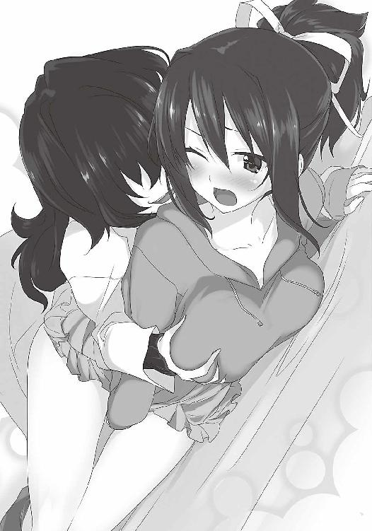
「私の授業を......サボった罰に......たっぷり宿題を......出してやろうと......思ったけれど......へへ......気分が良いから......勘弁してやるか......中崎ちゃんに......感謝しな」
ふと、中崎さんと目が合った。顔はイチゴのように真っ赤だった。
「何見てんだ！ この野郎！」
そして顔を殴られた。
奉仕活動を頑張ろうと思った。
Ａ棟一階の、奥の角部屋に着いた。男子部屋と書かれた安っぽいプレートが付けられている。明らかに他とは隔絶された場所だった。扉も鉄製で、心なしか分厚い気がする。さっきから、口の中に広がる鉄の味が、無機質さを助長した。
扉がギシギシと音を立てて開いた。畳が敷かれた、八畳ほどの部屋だ。意外と綺麗だった。壁際にある小さなテレビから、朝のニュース番組が流れている。それを五人の男が見ていたが、一斉に俺に目を向けた。
「詳しいことは、その人たちに聞くように」
中崎さんは言い、逃げるようにこの場を去った。
俺はまずジャージに着替え、濡れた制服をハンガーに掛けた。そして部屋にいる先輩たちに向かい、お辞儀をした。
「一年の比嘉マサミチです。よろしくお願いします」
「一年？ 今年の一年生は初めてじゃないか？」
先輩たちは面白そうに顔を見合わせた。
「入学一ヶ月で女子寮送りとは、君は大物になるぞ」
褒められているのかわからなかったが「ありがとうございます」と頭を下げる。
「その恰好、すでに女子の洗礼を受けたようだね。君は何をやったんだ？」
「下着が下駄箱に入っていて」
「何？ 下着が下駄箱に？ 興味深いな」
一番奥に座っていた先輩が言った。三年生のようだ。その鋭い眼光と堂々たる居住まいは、主のような風格を醸し出していた。
俺は事のあらましを話した。クラスの女子の家の前で下着を拾い、その現場を写真に撮られ、何故かその下着が、翌朝、下駄箱に入っていた、と。
「もしかして、園村の仕業か？」
「知ってるんですか？」
「知ってるも何も、ここにいる全員の敵だ。あいつには要注意だ。俺も何度も苦汁を舐めさせられた。相変わらず恐ろしい女だ」
「何でそんなに、一生懸命に」
「男子を捕まえる実績を作れば、内申書が良くなるんだ。委員会とは違う形の活動だな。もっとも、あいつは性格も悪いんだけどな」
敵にすると怖い。園村先輩の言葉が蘇った。
「先輩こそ、何をやったんです？」
「柏葉先生の胸に顔を埋めた」
衝撃的な言葉に、耳を疑った。「ど、ど、ど、どんなでした？」舌がうまく回らなかった。
「生まれる前の記憶を思い出しそうだった」
よくわからないが、すごいということはわかった。
「重いダンボールを運んでいたときに、バランスを崩したんだ。そのときに傍にいた柏葉先生の胸に飛び込んでしまった」
「そ、それで」
「そのときは『気を付けるように』とだけ言われて終わった。でも、そのときの感覚が忘れられなかった。怪我から守ってくれただけじゃなく、安らかな眠りにも誘ってくれそうだった。マリア様に抱かれた気分だった」先輩は当時を思い出したように目を閉じた。「でも、二回目は胸に辿り着く前に支えられ、三回目のときに流石にばれた。避けられた上、捕まった。それ以降も、一度も成功していない」
「それ以降って......何度も挑戦してるんですか？」
先輩は頷いた。
「はっきり言おう。俺は柏葉先生の虜になっている。そして事件を起こす度に、ここに連れて来られた。今日で節目の、通算五十日目を迎える」
「よく、退学になりませんね」
「全部未遂だからね」隣の先輩が口を挟んだ。「それにこの人は頭が良いんだよ」
「上の人に取り入ってるってことですか？」
「違う、違う」隣の先輩は首を振った。「文字通りだ。この人は学年二位の学力を持ってんだ。校外模試を受ければ、一流大学もＡ判定になる。大学合格実績を作るためには必要なんだ。学校は、風紀と合格実績の板挟みになってんだ」
「ここにいる間、暇な時間は、勉強ぐらいしかすることがないんだ。一切の娯楽が禁止されているからね。観られるテレビは報道番組のみ。読めるのは新聞と教科書だけ。でも、女子しかいない貴重な空気を吸える」
そして部屋の主は笑みを浮かべた。偉大な人だ。この先輩の話をもっと聞きたい。
「あの」
「ちょっと待って」先輩は逸る俺を制止し、時計を見た。「そろそろ来る頃じゃないかな」
そのとき、ドアが開いた。柏葉先生が入ってきた。
「これから掃除を行う」
「その前に、ちょっとよろしいですか？ 新しい人も入ったので」
先輩は立ち上がり、柏葉先生に近付いた。突然、何もないところで先輩は転んだ。明らかに怪しい転び方だった。そして今まさに、先生の胸に飛び込もうとした。
刹那、柏葉先生の強烈な蹴りが、先輩の顔面を捉えた。
先輩は吹っ飛んだ。そして体を壁に打ちつけ、そこに横たわった。
突然のことに動揺し、俺は周囲を見渡した。しかし誰一人、先輩に手を伸ばそうとしない。
「では、準備をするように」
柏葉先生は何事もなかったようにそう言い、部屋を去った。俺は先輩に駆け寄った。
「だ、大丈夫ですか？」
先輩は、切れた唇を拭いながら体を起こした。
「心配は無用だ。俺の日課みたいなものだ。今日も先生の足の甲に触れてしまった。柏葉先生とずっと触れ合えるなんて、素晴らしいと思わないか？」
この人は天才だと思った。
「そう言えば、自己紹介がまだだったね」
先輩は右手を差し出した。
「俺は三年の藤次タツナリ。座右の銘は『猥褻が世界を作る』だ。よろしく」
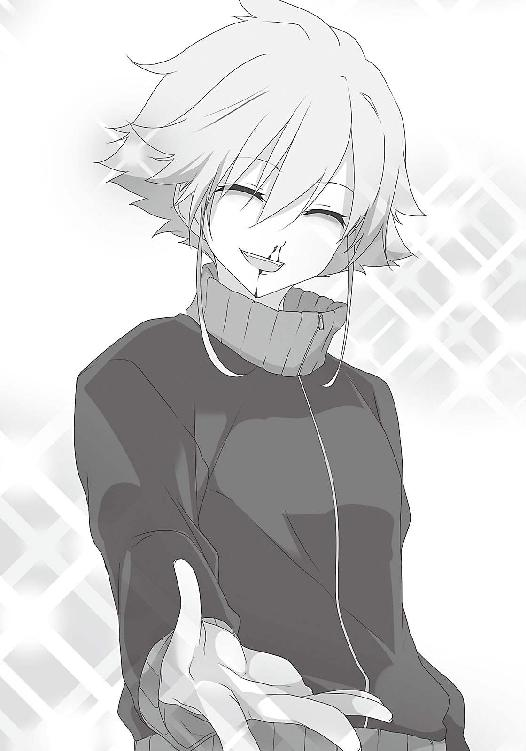
名前を聞いて、全てが理解できた。
男子部屋に君臨する豪傑は、生徒会から名指しでチェックされた危険人物だった。
そして連れてこられたのは、風呂場だった。
俺は唾を飲み込んだ。これは......合法的に女湯に入れるじゃないか！
先輩が扉を開けた。一度も見たことがない、未知の空間がそこに広がる。
ここが......女湯。多くの女子が裸になる場所......。俺は周囲を見回した。
「比嘉マサミチ」
突然名前を呼ばれ、ドキリとした。振り向くと、一人の女子が俺を見ている。俺より少し背が高く、目に力がある。その顔には見覚えがあった。生徒会室にいた男子矯正委員長だ。
「私は矯正委員長の武藤シノブだ。お前は初めてだな。ここで監視をするから、サボるなよ」
俺は背筋を伸ばし「はい」と返事をした。その間に、藤次先輩はロッカーから「清掃中」と書かれた看板を出していた。他の先輩たちもブラシやスポンジを手に取り、浴室内に散らばる。慣れた手つきだ。何度も経験があるのだろう。俺も先輩に倣い、スポンジで壁を磨いた。
しかし、集中できない。ただの掃除。そう思っているが、どうしても頭にちらつく。勿論、今は俺たちと監視係しかいない。裸の女子がいるわけではない。しかし俺の豊かな想像力が、女子の残像を見せる。
俺は邪念を振り払うように、首を振った。後ろでは、委員長を始めとした三人の監視係が、目を光らせているのだ。
「緊張しているようだね」藤次先輩が声をかけてくれた。「ま、最初はみんなそんな顔になる」
「監視、厳重ですね」
「元々は一人だったんだ。でも、俺の一つ上の先輩が、ちょっと事件を起こしてね」
「そうなんですか。どんな事件です？」
「そのとき先輩は、排水溝に絡まった髪の毛を掃除していたんだ。その最中に、監視係の目を盗んで、髪の毛の中から、とても口では言えない部位の毛を見つけようとしていたんだ」
俺は口をポカンと開けてしまった。ここに来た人の、レベルの高さに驚いた。
「ところが見つける前に、監視係に捕まった。集中しすぎたんだな」藤次先輩は、悲しそうに言った。「その後の顚末は想像できるだろう？ 停学中、ここでの生活より、入院生活の方が長かった。退学にならなかっただけ、マシなのかな。そしてそれ以来、監視が増えた」
「そこ！ 私語は慎め！」
風呂掃除が終わり、武藤先輩が言った。
「次はトイレだ」
そして再び、感動が押し寄せる。何人もの女性が、ここで用を足し......いかん！
いかんいかんいかんいかん！ 首を振り、雑巾を洗った。
「こんな場所まで掃除しろだなんて、抵抗はないんでしょうか」
「誰かがやってくれるのなら、そっちの方がいいってことだろ。おそらくだけど、男子トイレを女の人が掃除していても、俺たちは気にも留めないだろう」
そうかもしれない。しかし、する方の立場になった俺に、平常心は無理だった。ただの掃除だと開き直れなかった。先輩たちが、事も無げに掃除ができるのは、経験値が違うからだ。
「あれ？ 洗剤がない。取りに行かないと」藤次先輩が言った。
「あ、俺がもらってきます。こっちは紙が切れてるんで」
俺はトイレを出た。やっと一息ついた。これ以上あの場にいたら、精神が持たなかった。
しかし俺は貴重な経験をしている。先輩も良い人だ。何より藤次先輩と出会えたのが大きい。伝説の絵師に会う取っかかりが摑めた。希望が見えた。
とは言え、用務室までの道のりは辛かった。周囲の女子が、ちらちら見ては冷笑するからだ。孤独が苦しみを倍増させる。
俺は道端の石ころだ。空気だ。そう暗示をかけ、存在を消し、耐えた。
刹那、後ろから蹴られた。振り返る。そして体が凍った。浦橋さんだ。その、鋭いナイフのような眼差しに、俺は射竦められた。彼女は言った。
「あんた、ミイナに何したの？」
「え？ 何もしてないけど」
「噓つかないでよ。だって、さっきから様子が変なのよ。自分の体を、ずっと鏡で見てたり、あちこち触ったりして。理由訊くと、顔真っ赤にして『何でもない』って言うし」
それは間違いなく、さっきのことが原因だろう。気にしていたらしい。
「最後に会ったの、あんたでしょ？ その顔の怪我も、ミイナにやられたんでしょ」
「そ、そう言えば、御厨先生と何か話してたみたいだけど」
「御厨先生と？ 本当に？」
「ナオ！ ナオ！」
向こうから中崎さんが走ってきた。
「いいから！ そいつは関係ないから！」
「でも」
「本当に何でもないから！」
中崎さんは顔を真っ赤にして、浦橋さんを連れ去った。
どこかふわふわした気持ちで、トイレに戻った。
その後は、廊下や玄関など、個人の部屋以外のあらゆる場所を掃除した。昼は弁当が部屋に運ばれ、休憩の後は掃除の続き、それから花壇の手入れ、机の修理などの雑務をこなした。
いつの間にか、外は暗くなっていた。時刻は八時五十分。この寮の門限は、九時と聞いた。ギリギリまで活動を続けていたことになる。
「どうだった、初日は？」藤次先輩が、開口一番で訊く。
「とても貴重な経験をしました」
「でも、最初は視線が痛いだろ？」
「ええ。心が暗鬱になりますね」
「ここでまともな精神でいようというのが間違いなんだ。変態になるしか、生きる術はない。これはあくまで罰。更生を目的にしているわけではない。矯正なのに歪む。悲しきことよ」
偉大な人物の言葉を聞き、俺が如何にちっぽけな存在だったかわかった。
「俺、先輩に訊きたいことがあったんです。伝説の絵師についてなんですけど」
「ほう。君はあいつを知っているのか。確かに俺の友達だ」
先輩は恬として答えた。心は舞い上がった。
「あれは都市伝説ではなかったんですね！ 是非その人に会ってみたいんです！」
「その話は後でしよう」
俺たちは全員着替えを終え、部屋を出た。正門の前で一列に整列し「失礼いたします」と頭を下げた。藤次先輩は言った。
「メシでも食いに行こうか。親睦会を兼ねて。それに、伝説の絵師のことも訊きたいんだろ？」
「あ、そのことで紹介したい友達がいるんです」
そしてリュウジとジュンに連絡した。藤次先輩のことを告げると、二人とも二つ返事で「行く」と言った。駅前で二人と合流した。二人の目は輝いていた。
先輩たちに連れてこられたのは「チスタター」という普通のファミレスだった。
「ここでは、いろいろぶっちゃけて大丈夫だ。そういう店なんだ」
周囲を見渡す。確かに客も店員も、男ばかりだ。いろいろな声が聞こえてくる。
「認めよう。俺はドＭだ。でも罵られるのは好きじゃない。だって接触がないだろ？ やはり殴られるのが良い。でもキックは靴が痛いだけで、体温を感じない。だからパンチが好きだ。でも生足なら話が違う。むしろパンチの格段上になる。美しい足に蹴られたい」
「お前には谷崎潤一郎の本をオススメする」
向こうの席では、一人が演説するように声を上げている。
「人間誰しもトイレを使う。アイドルはトイレに行かないなんて迷信は全否定だ。アイドルはトイレに行く！ どんなに綺麗な人でもトイレに行くのだ！」
「そっちの方が好きなんだろ？」
「その通りだ！」
みんな、鬱憤が溜まっているのだろう。しかし、一つ一つの言葉には感銘を受ける。
先輩は、店の名前について教えてくれた。この言葉は、ロシア語で「清潔」とか「誠実」という意味らしい。実に洒落が効いている。
先輩は自己紹介がてら、自分が捕まった経緯を話した。そして柏葉先生のおっぱいについて熱く語った。リュウジもジュンも、固唾を飲んで聞いていた。さっきの俺も、こんな顔をしていたに違いない。
話に区切りがつき、二人は大きく息を吸った。呼吸するのも忘れていたらしい。
「それで、生徒会から名指しを受けたんですか......」リュウジが呟く。
「いや、それだけじゃない。単純に、会長の恨みだ。会長とは、因縁があるからな。実は俺と会長の都筑ミチルとは、幼馴染みなんだ」
「幼馴染みなんですか。仲良しではないんですか？」
「『幼馴染みが仲良し』は幻想だ。昔から、どうも考え方が合わない。と言うのも、ミチルは、助平なことが嫌いなんだ。子供の頃は一緒に学校に行ったりしてたけど、高校に入って、俺が柏葉先生の胸を触ってから、そのズレは決定的になった」
先輩は、少し俯いた。辛い話の気配がした。先輩は再び語り始めた。
「どうしても柏葉先生を見てしまう。でも先生を見ていると、耳を引っ張られた。だからあるとき、ミチルの胸を揉んで『固い』と言ってやった。そしたら近くにあった文鎮で殴られた。死ぬかと思った。それ以来、ミチルは俺を目の敵にするようになった。そして俺とあいつは、別々の道を歩むことになった」
切ない話だ。柏葉先生の魔法にかかったゆえの悲劇だ。会長の行為は嫉妬心からのようにも思えたが、男心がわかっていなかったのだ。
「柏葉先生の良さはおっぱいだけじゃない。怖いけど素晴らしい人だ。トオルのこともあるし」
「トオル？」俺は首を傾げた。
「堀トオル。副会長だよ。生徒会室に、一人だけ男子がいただろう？」
「あの人ですか。確かに一人だけいました。かばってくれました」
「そうか。それは良かった」
「お友達なんですか？」
「この息苦しい学校に風穴を開けるべく、男子全員で擁立した同志だ」
「その通り！ 俺たちは戦わなければならない。ここにいる者たちも、志を共にする仲間だ」
隣の先輩も、口を揃える。気持ちが高揚した。この世界に対して反感を抱いている男子が、こんなにたくさんいる。
「あいつ、本当は会長になるはずだったんだ。でも叶わなかった。ＰＴＡとか方々から圧力がかかって、立候補を受理されなかったんだ」
「とんでもない話ですね」
「でも柏葉先生が説得してくれたんだ。『男子も同じ生徒だ』って。おかげで何とか副会長への立候補にこぎつけたんだ」
これからは顔を上げて柏葉先生の話を聞こうと思った。
「それで、伝説の絵師についてだったね」
ついにその話になり、俺たちは目を輝かせた。しかし藤次先輩は、神妙な面持ちで水を一口飲み、息を吐いた。
「残念だけど、本を見せてはもらえないだろう」
俺たちは顔を見合わせた。互いの顔に落胆の色が浮かぶ。先輩は申し訳なさそうに言った。
「ばら撒けば、ばら撒くほど、見つかるリスクが高まるからね。あいつ自身が認めた相手にしか作品は渡さない。興味本位でやって来る奴はゴマンといるが、ほとんど門前払いだ」
「ただ読みたいわけではありません。実は三人でエロ本を作ろうとしているんです」
ジュンが勇み立った。藤次先輩は感心したように「ほう」と声を出した。
「実は捕まった理由は、資料を集めようとしていたからなんです。でもその矢先、園村先輩に見つかって、マサミチが罪を被る形になったんです。それに、いざ漫画を描くにしても、ゼロから始めるのは、取っかかりが難しくて。是非、教えを請いたいと」
「それは気合の入った話だ。詳しく聞いてもいいかな」
ジュンは力説した。絵の練習を続けていること。思春期で悶々としているのに、昔から報われなかったこと。身振り手振りを交え、時には声に抑揚をつけた。その姿に驚いた。ここまで熱い男だったとは知らなかったのだ。藤次先輩との邂逅に、全てを賭けていたかのようだ。
ジュンが一通り言い立て、先輩は少し考えた。
「諸君の意志はわかった。君たちをあいつに紹介しよう。俺の紹介なら、可能性もある」
「本当ですか！」
俺たちは身を乗り出した。先輩は頷いた。
「流石に出向期間中に会うのはまずいから、終わってからなら」
「いいのかよ、藤次」隣の先輩が言う。
「ここで会ったも、何かの縁さ」
６ 異端者で求道者
最初は苦痛と思っていた出向も、刺激的な経験に加え先輩のアドバイスもあり、時間を早く感じることができた。
少し残念だったのは、最初はわくわくしていた風呂・トイレ掃除も、回を重ねるごとに慣れてしまったことだ。初めの感動は、義務感と、雑務をこなす疲労感に変わってしまった。
しかしそれでも、居心地は悪くなかった。同じ感性を持つ男子の集まりだからだろう。
俺はこの中で一番後輩だが、女子寮に一番乗りしたことは、一度もなかった。ここに居心地の良さを感じている先輩たちの方が、いつも先に来ていたからだ。
そんな先輩たちに囲まれていたから、女子の冷たい視線に苦悩することは少なく、前向きに奉仕活動ができた。何より、これが終われば伝説の絵師に会えるというのが原動力だった。
俺は奉仕活動に精を出し、そしてあっという間に、十日が経った。
最終日の五月十二日。俺は今日も朝一で女子寮に来たが、部屋に入ると、やはり先輩たちが先に来ていた。しかし今日は、どこか様子がおかしかった。先輩たちが血相を変えて、新聞、テレビに釘付けになっている。
俺を見つけた藤次先輩が「比嘉君！ 比嘉君！」と慌てた様子で声をかけた。
「これを見たか？」
先輩は、新聞を見せた。一つの研究論文の抜粋が、そこに載っていた。
【近年、性的な異常を訴える男性が増えている。彼らは性的に刺激的な状況にあっても、心身が反応しないのだ。調査の結果、彼らはみな、異性との接触が希薄であると判明した。
そこで当研究チームで、このような実験を行った。
生後間もないオスのマウスを、オスだけで隔離し、メスのマウスとの接触を断たせた。
その後、繁殖期を見計らって、オスをメスと接触させた。しかしオスはメスに求愛行動をとることもなく、繁殖行動は行われなかった。オスはメスに興味を持たず、不能となっていたのだ。オスがメスを意識する理由は、精巣で作られる男性ホルモンが脳に影響を与えるためである。メスというものを知らなかったため、この工程がうまく行われなかったようだ。
この実験の結果、オスとメスを極端に隔絶すると、オスの性欲が消え、オスはオスとしての機能を失うことになる、と考察できる。しかしメスと接触できずとも、性欲を刺激するものを与えれば、オスの機能は維持された。ところが刺激物を断ち、再び長期間放置すると、オスの機能は失われた。連続して与える必要があるらしい。なお現時点で、一度性欲が消えたマウスが、再び性欲を取り戻す方法は見つかっていない。
生物の個体差はあるだろうし、人間の男女が会わないという状態もあり得ない。しかし女性との接触が少ない人間の男性に、性欲の喪失が起こっていることは事実である。
我々は、この状態を『男性喪失症候群』と名付ける】
衝撃的な内容だった。この論文の意味するところ、それは、女子と仲良くできない男子は、せめて常に助平な刺激を与えられ続けなければ、いざ異性と接触しても、男性としての機能が働かない。つまり「男性として死ぬよ」ということだ。
助平な刺激物、それはエロ本、エロビデオ、何でもいいはずだ。しかし現状、それらを許す女性は少ない。猥褻物を求めれば、ここにいる俺たちのようになる。女子との接触も絶望的となり、あとは死を待つだけの身となる。由々しき事態だ。
男性だけではない。女性にとっても大変だ。何故なら男性が不能者ばかりになれば、結婚ができない。子供も生まれず、社会が維持できなくなる。猥褻物を否定してばかりもいられない。
とんでもない爆弾論文だ。法を行使してまで女性が嫌いな猥褻物を排除しようとする風潮に、真っ向から対立している。最後にこの爆弾を投下した研究チームのメンバーが列挙されていた。その犯人の一人が他でもない、御厨レイ先生だったことも、俺たちを驚かせた。
テレビでは、これに対して、有識者がコメントしていた。
「節度ある交際ならば、問題ない」
「節度ある」と言っても、どこまでが「節度」なのか曖昧だ。そもそも俺たちのように、交際することそのものを断たれた男子は、どこへ向かえばいいのか。
「でもこれは、ある意味、希望とも言えるんじゃないか？」
先輩の一人が言った。確かに、そうとも考えられる。俺たちの行動を正当化するチャンスになりうるからだ。猥褻物の規制は、緩和されるかもしれない。一筋の光明が差したようだ。
全員の目に、力が宿る。しかし藤次先輩は首を振った。
「それは無理だろうな」
「何故そう思う？」
「この国の法整備は駄目だ。いつも後手に回る。弊害が出始めないと、誰も動かない。いずれ解決のために極端な法を作るくせにな。とにかく暫くは、地下活動をして生きるしかあるまい」
さっきまでの興奮が冷め、溜息が漏れた。
地下活動の末、捕まって人生を駄目にするか。男として生きることを放棄するか。
人生と男性。俺たちの前には、究極の二択が突きつけられた。
「掃除に行こうか」藤次先輩が口を開く。みんな無言で立ち上がった。ショックを隠せなかったが、掃除でもしていれば、気が紛れるかもしれない。
部屋を出た。そこら中で女子が騒いでいた。階段、廊下、トイレの行列......どこも話題は、このニュースだ。早朝にして論文の余波は随所に広がっているようだ。
俺は廊下をモップ掛けしながら考えていた。
エロ本を手に入れなければならない。
このままでは俺も男として死んでしまう。それは嫌だ。男として生まれたのに、未だ楽しい経験は何一つないのだ。すぐにでも伝説の絵師に会う必要がある。
食堂の前に来たときだった。
「御厨先生！」
怒鳴り声が聞こえ俺は立ち止まった。ドアが少し開いていたので思わず覗いた。一人の女子が御厨先生を睨んでいる。都筑会長だ。会長は阿吽の阿のような剣幕で、御厨先生に詰め寄る。
「何であんな論文発表したんですか！」
「真実を明らかにしようとするのが......研究者さ......へへ......曲学阿世は......しないのさ」
先生はのんびりと答えながら、コップに口を付ける。コーヒーの苦い香りが漂ってきた。
「今は校内健全化を強化しているんですよ！ あれじゃあ、男子が調子に乗ります！」
「多少はそうじゃないと......子孫繁栄がなくなる......それにさ......その暴走を抑えるのが......あんたらの役目だろ......飴......舐める？」
「いりません！」
会長は声を張り上げた。先生の、のらりくらりとした様子が頭にきたらしい。
会長は食堂を出てきた。俺はドアの横でモップを握ったまま、気をつけの姿勢をした。会長は、ちらりと俺を見たが、そのまま去った。御厨先生も顔を出した。
「おや......？ 比嘉ちゃんじゃ......ないか」
俺は軽く会釈をして訊いた。
「あの論文、本当なんですか？ 刺激がないと性欲がなくなるって」
「さあね......研究段階......さ」
「でも、会長の言う通り、卑猥なものを持たなければ、と考える男子も増えると思いますが」
「元気な男子は......重要さ......へへ」
先生は、いつものペースを崩さなかった。しかしこのままでは、至るところで衝突が起きてしまうのではないだろうか。先生は大丈夫なのか？ 糾弾されたりしないか？
自分のことではないが、何だか急に怖くなった。不意に、尿意に襲われた。
「ちょっと、トイレに」
「トイレ......？ ここからなら......外のトイレが......近いかな......男女兼用だから」
確かにここから、屋内の男子トイレは遠い。元々、男子がいることを想定していないから、男子部屋の隣に一箇所しかないのだ。
俺はお辞儀をし、そして走った。限界が近い。膀胱どころか、体の節々も痛くなってきた。
外に出て、トイレを見つけた。個室が一つだけの簡素なものだ。
確認する。丸に三角をくっつけた、女性を表す図形はなかった。御厨先生の言う通りだ。
中に飛び込み、便座を上げた。そのとき、罪悪感に襲われた。
ここで立ったまま用を足せば、間違いなく辺りに飛び散る。男女兼用とは言え、圧倒的に、女性の使用者が多いはずだ。たとえ掃除をするにしても、汚すことは忍びない。
俺は便座を降ろし、座った。そして解き放たれた。
ほっと息を吐いた。畳一畳ほどの空間が、心の平穏を取り戻させる。
狭い空間に一人になると、いろいろと考えてしまう。
今日で奉仕活動は終わる。その最終日、まさかこんなことになるとは思わなかった。男性として死ぬ。いつかそうなる。その恐怖に怯えながら、生きなければならないのか......。
しかしこの女子寮経験があると、世界の見え方も変わるかもしれない。先輩たちのように少しは強い人間になれているかもしれない。それに絵師に会えば、欲求不満もいくらか解消される。心にゆとりが持てるはずだ。これから先、俺にはどんな未来が待ち受けているのだろう。目の前の扉の向こうには、どんな世界が広がっているのだろう。
そして扉が開かれた。そして驚愕した。
何故なら俺はまだ、ドアノブに手を掛けていなかったからだ。
扉は外から開かれていた。そして一人の女性が俺を見ていた。長身でポニーテール、まるで中崎さんのように見えた。中崎さんにそっくりだった。別人とは思えないほど似ている。
もう中崎さんだった。どう見ても中崎さんだった。
中崎さんは腰の辺りを押さえ、そわそわした様子だったが、俺を見た瞬間に目を見開いた。
俺は中崎さんの顔色を窺った。しかし目が合わなかった。何故か。
彼女の視線は、明らかに俺の首より下の方にあったからだ。
胸、腹部より、もうちょっと下。どこを見られているか、何となく想像できた。
そして、時間が止まった。
中崎さんは口を半開きにしたまま、停止した。瞬き一つしない。混乱していることが、手に取るようにわかった。俺も動けなくなった。
しかし徐々に、把握でき始めた。俺は焦っていたため、鍵をかけ忘れていたようだ。
加えて、もし便座を上げ、立ったまま用を足していたら、扉に背を向けていた。こんなことにはならなかった。しかしちょっと気を使ったことで、こんな事態になり、そして......。
俺は今......見られている......。女子に......下半身を......。
そしてそれを見つめる中崎さんの、きょとんとした視線......驚くことすらできない顔......。
何だかわからないが、ドキドキした。心臓が活発に動く。そして血流は活性化した。だから俺の男性の部分が変化を起こした。これは自分の意志とは無関係だ！ 悪いのは俺じゃない！
無言のまま、時が流れる。西部劇で銃を向け合ったときのように、対峙したまま動かない。
中崎さんの顔が徐々に紅潮していく。状況を理解し始めたのだろう。俺を幾度となく殴った手が、わなわなと震えている。息も荒いようだ。
何故か、その顔色の変化に見とれてしまった。
中崎さんは、顔を耳まで真っ赤にして、ゆっくり扉を閉めた。
残された俺は、不思議な感覚に囚われていた。
何だろう、このふわふわした高揚感。心を満たす、軽やかな爽快感。
中崎さんはトイレ待ちを嫌ってこっちに来たのかもしれないが、そのおかげで、俺は新たな自分を発見した。何かに目覚めそうだった。
どうやら俺は、女子の視線に晒され続けた結果、先輩に負けない変態になっていたらしい。
日は落ちた。最後の仕事を終え、俺たちは外に出た。
柏葉先生が、顔を出した。「お世話になりました」俺は深々と頭を下げた。
「もう二度と、馬鹿なマネはやめるんだな」
そのとき、柏葉先生の胸を、誰かが摑んだ。渦中の人、御厨先生だ。
「こんなのが......あったら......へへへ......目のやり場に......困るよねぇ......」
御厨先生は、俺たちの言葉を代弁した。
「早いとこ......これを......吸わせる相手を......作りなよ......へへ」
「またそういう下品なことを」
柏葉先生は、怒りに声を震わせた。しかし御厨先生は「下品？」と首を傾げた。
「何と勘違いしてるか......知らないけど......私は......赤ん坊のことを言ってるんだよ」
柏葉先生は、言葉に詰まり、ちょっと顔を赤らめた。初めて見る顔だった。
「そうだ......比嘉ちゃん」言いながら、先生はごそごそとポケットをまさぐる。「完遂祝いに......これをあげよう」
御厨先生は飴をくれた。ミルク味だった。
そのまま藤次先輩と共に、リュウジの家に向かった。今日はそこで、会合をする予定だ。
部屋の中には、すでにジュンがいた。俺は訊いた。
「御厨先生の論文、見たか？」
「うむ。パンダの話を思い出したよ」
リュウジが呟いた。俺も、それは知っていた。パンダは繁殖行動をなかなかとらないため、パンダ用のエロビデオを見せて、性欲を活性化させるのだという。
あの論文は、この行為を人間がすることを肯定している。
「俺たちは、御厨先生という後ろ盾を手に入れた」
「その通りだ。俺たちは権利がある。男性を守るんだ！ というわけで、藤次先輩」
「わかった」藤次先輩は頷いた。「連絡をつけておく。明日にでも会えるように」
７ 無垢なる少女と生きる伝説
久々に来た教室は、いつも通りの時間が流れていた。俺のことは誰も気にしていないようだ。無視ともとれるが、たとえ陰口を叩かれても、今の俺は、耐えうる精神力を身に付けている。
門倉さんと中崎さんが教室に入ってきた。
「お、おはよう」
声をかけたが、門倉さんは、何も言わずに俯いて、目を合わせてくれなかった。
辛かった。他の誰に無視されても構わないが、門倉さんに無視されるのは、心が沈む。
しかし今日は伝説の絵師に会える。楽しみじゃないか。何とかそれで、気を紛らわせた。
中崎さんはちらりと俺を見ると、すぐに目を背けて、小走りで自分の席に向かった。
放課後。いよいよそのときが迫った。藤次先輩と、公園で合流する約束をしていた。
緊張のあまり、トイレに行きたくなった。リュウジたちに「校門で待っていてくれ」と告げ、俺はトイレに入った。用を足しながら思った。
一体どんな人なんだろう。どんなものを描くのだろう。期待に胸が膨らんだ。
そして軽快な足取りで、トイレを出た。浮かれていたから、ちゃんと周りを見ていなかった。うっかり、誰かにぶつかってしまった。中崎さんだった。
「あ、ごめん」
俺が謝るや否や、中崎さんは突然、顔を真っ赤にし、俺の首を摑んだ。
「な、何を......」
「お前を見てると、頭に血が上るんだ！」
指が皮膚に食い込み、俺の首を絞め上げる。苦しくなり、俺はその腕を摑んだ。
しかし中崎さんの力は強烈だった。振り払えない。完全に絞め殺す力だ。
脳に酸素が届かない。目の前が暗くなり始めた。
薄い視界の中で、般若のような中崎さんが見えた。
体の力が抜けていく。手がだらんと下がり、膝が折れた。そしてその場に腰が落ちた。
それでも彼女の手は緩まない。床に座り込んだ俺を睨みつける。心を潰すには十分だった。
俺はこのまま......ここで死ぬのか......。
駄目だ！ 今日は絵師に会えるんだ！ エロ本を読めるんだ！ ここで死んでたまるか！
自然に手が動いた。そして何か布を摑んだ。中崎さんの制服だ。
そうだ。とりあえず中崎さんを横に引き倒そう。そうすれば、ひとまず解放される。
生きるために無我夢中だった。俺は最後の力を振り絞り、思い切り布を引っ張った。
何かが動く、確かな手応えがあった。そして首の圧迫が緩んだ。俺は咳き込みながら、視線を前に戻す。
そして俺の視界に入ったのは、逆三角形の白い布、その真ん中に......。
「クマ......さん」
その状況を理解したとき、俺は言葉を失った。
それはパンツだった。中崎さんの下半身が、クマさんパンツ一枚になっていたのである。
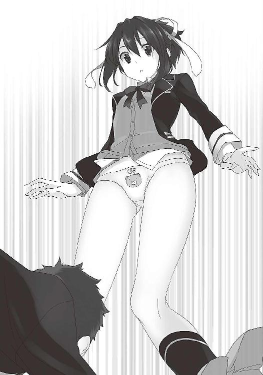
思わず自分の手を見た。俺が摑んでいたのは、中崎さんのスカートだった。俺は中崎さんのスカートを引きずり下ろしてしまったのだ。
もう一度、正面を見る。目の前にあるのは、中崎さんのクマさんパンツ......。
中崎さんは、慌ててスカートを引き上げる。そして目が合った。彼女は赤面した。
次の瞬間、中崎さんは俺に馬乗りになった。そして無言で俺を殴った。容赦がなくなった。
俺は必死で顔をかばいながら言った。
「違うんです......」
「何が違う！」
「死ぬ前に......あなたのパンツが見たかったんです......」
どうやら俺は、混乱していたらしい。
「それなら気が済んだだろ！ 死ね！」
一体どれほどそうしていたのか。もはや俺には、指一本動かす余力はなかった。
中崎さんも、息を切らしていた。
「お......思い出したら、ぶっ殺すからな！」
中崎さんはスカートを押さえながら、走り去った。
そして俺は、意識を失った。
気が付いたとき、俺はベッドに横たわっていた。見覚えのあるここは、保健室だ。
「目が覚めたか？」横のリュウジが言った。ジュンも心配そうに俺を見ている。
「俺は、一体......」
「なかなか来ないから、様子を見に行ったら、トイレの前で倒れていたんだ」
そうか、あのとき......。首の痛みが思い出された。
「何があったんだ？ その絞められたような指の跡とか」
「中崎さんにやられた。理由はわからん」
本当に、何だったんだろうか。今までと違い、ただ理不尽な暴力だ。
「とにかく、伝説の絵師の下へ行こう......」
ベッドから立ち上がろうとしたとき、膝をついた。リュウジが体を支えてくれた。
「お前がこんな状態で、行けるわけないだろ。藤次先輩に話しておいた。明日でもいいそうだ」
「すまない......俺のせいで」
翌日。朝から中崎さんに覇気がなかった。門倉さんが、心配そうに見つめていた。
「どうしたの、ミイちゃん。眠そうだね。目の下にクマが」
「クマっ......！」
「ん？」門倉さんが首を傾げる。
「い、いや、何でもない。昨日の夜、あんまり眠れなかっただけ」
中崎さんは、ちらりと俺のことを見た。ギクリとしたが、彼女はすぐに目を伏せた。彼女は何を考えているのだろう。不安になった。
柏葉先生が入ってきた。そして門倉さんの、悪意のない暴言の余韻だけが残った。
放課後。俺は急いで帰る準備をしていた。絵師に早く会いたいというのもあったが、それ以上に中崎さんから逃げたかった。昨日のことを水に流すはずがない。
鞄を持って教室を出た。その瞬間、肩を摑まれた。振り返る。中崎さんだった。
「話がある。ちょっと来い」
彼女は低い声で言った。恐怖に襲われ、俺は小刻みに頷いた。
リュウジたちは、何が起こったのかわからない様子で、心配そうな視線を投げかける。俺は「大丈夫だ」と目で合図し、中崎さんと教室を出た。
中崎さんについて歩く。昇降口まで来て、外に出るよう促された。中崎さんは終始、無言だった。恐る恐る、顔を覗き込んだ。陰になって、よく見えなかった。
そして校舎裏に連れてこられた。周囲からは完全に死角に入った。目撃者は皆無だ。
刹那、中崎さんが振り返り、俺を突き飛ばした。俺はしりもちをついた。腰に痛みが走る。
顔を上げ、息を飲んた。彼女は殺気立った野生の熊のような目で、俺を見下ろしていた。
体が震え、動けなくなった。彼女は俺を睨んだまま、大きく息を吸って口を開いた。
「昨日のはたまたま！ そう！ たまたまなんだよ！ 持っている下着、全部洗濯してたから穿くものがなかったんだ！ ほら見ろ！」
中崎さんは一気にまくし立て、自らのスカートをがばりとめくった。
「昨日のことを反省して、普段からスパッツを穿くことにしたんだ！」
俺は固まった。中崎さんは堂々としている。そして俺の怯んだ姿を見て、満足げに「ふん」と鼻を鳴らした。
「どうだ、見えないだろ。透けてもいないだろ。お前みたいな変態でも、これなら何とも思わないだろ？」
「......うん」と呟きながら、俺は唾を飲み込んだ。眼前の黒い生地から、目が離せなくなった。中崎さんが......自分で自分のスカートの中を......見せてくれている！
確かに下着は見えていない。だが中崎さんは知らないのか。たとえ下着が見えずとも、普段は隠されているスカートの中を、女性が自分でめくって見せるという行為、それ自体が男性を喜ばせるという事実を。しかも形の出やすいスパッツ......。
純粋なのか。ガードが固いように見えて、無防備なのか。俺の心は揺さぶられた。
そして危険なのは、この距離だ。
確かに中崎さんの下半身は今、二重の布で覆われている。しかしそれよりも、俺とは構造の違う下半身が、目の前僅か三十センチの場所にあるという現状が危険なのだ。ほんの少しでもバランスを崩せば、この平らな部分にぶつかってしまいそうだ。
改めて脳が理解する。俺の目の前には、女性の股間がある。俺は今、生まれて初めてそれをまじまじと見ている。
「き、昨日のことは忘れろ！ いいな！」
中崎さんは、疾風の如くその場を去った。俺は呆然としていた。景色は見えていなかった。さっき見た映像が焼きついて、離れなかった。
不意に体を揺さぶられ、はっと我に返った。目の前にリュウジがいた。
「大丈夫だったのか？ 目が虚ろだぞ」
「あ、ああ。大丈夫。厳重注意を受けただけだ。何でもない」
そう言いながらも、頭の中は、さっきのことで一杯だった。同時に昨日のことも思い出した。
中崎さんのパンツ。中崎さんの股間。
中崎さんのパンツ。中崎さんの股間。
中崎さんのパンツ。中崎さんの股間。
駄目だ。頭がまともな思考をしてない。忘れるなんてもう無理だ。それどころか、かえって心の奥深くに刻まれた。これから絵師に会うというのに、集中できない。
公園で藤次先輩と合流した。そして先輩に先導され、歩いた。
リュウジとジュンは、これからのことに期待を寄せ、楽しそうに会話している。しかし俺の頭には、中崎さんの下半身のことばかり渦巻いていた。
暫くして、ある家の前に着いた。俺は自分の顔を叩き、気持ちを切り替えた。先輩が言った。
「あいつの描く漫画が、とても質の良いものであることは保証しよう。きっと、君たちも気に入るはずだ。あいつが君たちを認めることを願っている。だから一つだけ、アドバイス」
藤次先輩は、人差し指を立てた。
「あいつの質問には、君たち自身の言葉で語ること。噓や偽りはなしだ。本心を語りなよ」
先輩は扉を開け、部屋まで案内した。椅子に一人の男が座っている。彼は立ち上がった。
「初めまして。卑猥な本を描いて生徒会の目の敵にされている有沢カズマです」
ついに俺たちは、社会と戦う特攻隊長と邂逅した。俺たちも名を名乗り、お辞儀をした。
「それで、一つ読ませて欲しいということだったな。まあ、タツナリの紹介だから話を聞こう」
「その前にいいですか？」ジュンが口を開いた。「実は、僕も少し描いているんです。だから、伝説の絵師とまで呼ばれる人の絵が、どんなものなのか見てみたくて。少しでいいので、原稿を見せてもらえませんか？」
「俺を値踏みしているのかな？」
「あ、いえ、そういうわけではありませんが」
ジュンは慌てて首を振った。有沢先輩は「まあいいだろう」と言って、ジュンに一枚の紙を渡した。それを見て痛感した。レベルが違う。熱量が違う。陰影、構図、何より女性の艶かしさだ。皮膚の質感、肉の柔らかさが伝わってくるようだ。これを見ると、ジュンの絵は画面が単調で白いと思えてくる。ジュンの手が震えている。
「お、恐れ入りました」そして深々と頭を下げた。「是非作品を読ませてください！」
「俺からも一つ要求がある。君たちの本気度を確認したい。君たちに出して欲しいものがある」
「原稿料なら、お支払いします」リュウジが言った。しかし有沢先輩は首を振る。
「お金じゃ買えないもの。君たちの、心の内だ」
「と、言いますと？」
「君たちの求めるエロスとは何かね？」
その顔は真剣だった。
当惑した。俺たちの求めるエロスだと？ これに答えなければ、漫画は手に入らないというのか。欲求解放のためにも、男性を守るためにも、是が非でも必要なものなのに......。
「ギブアンドテイクっていうのかな。俺の脳を刺激し、インスピレーションを、俺のパッションを奮い立たせ、むしろ描かずにはいられない、そんな回答を求む」
しかし、いきなり言われても思いつかない。年上のエロいお姉さん......幼馴染みの一途な恋......言葉は思い浮かんでも、全て中途半端だ。求めるものかと問われれば怪しい。藤次先輩は「本心を語れ」と言った。しかし、心の引き出しが開かない。俺の本心はどこだ？
藤次先輩を見た。静かに、しかし真剣な顔で、俺たちを見守っている。この場は有沢先輩のテリトリーだから、口出しできないということだろう。漫画を読めるかは、あくまで俺たちに懸かっている。しかし......。
「あ......明日まで、時間をください」
「駄目だ」有沢先輩は即答する。「たった今、君たちの胸裏にあるもの、それが全てだ。下手に考えるより、真意に合致したことが言えるはずだ」
俺たちは、項垂れた。自分たちが求めるものは何か。改めて聞かれると、思い浮かばない。
そうだ。リュウジなら、すでにあるじゃないか。姉にいじめられる弟という、歪んだ願望が。
唯一気懸かりなのは、それをジュンの前で暴露できるかということだ。流石に無理か......？
「あの、いいですか？」
リュウジは口を開いた。強い男だった。
「俺が好きな設定は、姉がいて、その弟が」
「ストップ」急に有沢先輩が遮る。「すまない。説明が少なかった。俺が聞きたいのは、君たちの妄想ではない。経験に基づいた話だ」
「経験......」
「そうだ。妄想も大事だが実体験に勝るものはない。例えば『誰かの裸が見たい』というのは、その瞬間の願望だろう？ それを行動に起こすほどの熱意があるなら、それこそ本心だ」
なるほど、そうかもしれない。有沢先輩は話を続けた。
「以前『柏葉先生をモデルに描いて欲しい』と頼まれたことがある。そいつは先生の豊満な肉体に欲情していたんだ。だから俺は訊いた『先生の胸のサイズはいくつだ？』と。彼は答えられなかった。他にも、先生の身長、体重、下着の柄......いろいろ訊いたが、その男は何一つ知らなかった。そんな他力本願を俺は許さない。この手の漫画を描くのは、リスクのあることなんだからな。タツナリという男を知っているなら、理解できるだろう？」
すぐに得心がいった。藤次先輩は危険を顧みず柏葉先生の胸に飛び込んだ。だから有沢先輩も認めるところなのだ。リスクを冒さず何かを得ようなんて甘い考えを、この人は是としない。藤次先輩が柏葉先生のおっぱいを、具体的に何と表現したのか知りたいところだ。
しかし、これは......手強い。
「でも、まあ、君たちはまだ一年だ。少しは甘く見よう。面白いエピソードでも良い」
俺たちは考えた。
「そ、そうだ」俺は口を開いた。「中学のとき、更衣室に忍び込んだのは」
「物珍しさが足りない」
「歩道橋で、パンツを覗こうとしたこと」
「ありきたりだ。誰でもやっている」
俺たちが必死でやったことも、この人の前では赤子同然だ。何かないか......何か。
そのとき、思い至った。中崎さんのパンツ。中崎さんの股間。これだ！
「俺は以前、ハプニングで女子のスカートを脱がせてしまった経験があります」
「そうなのか？」すぐに反応したのはリュウジだ。俺は「そうだ」と言い、続けた。
「俺は彼女に首を絞められていました。俺は助かるため、彼女の服を引っ張りました。それはスカートでした。そしてスカートはずり落ちました。俺は驚きました。下着にクマさんの絵がプリントされていたんです」
有沢先輩が「へえ」と感嘆の声を上げる。
「彼女は言いました。『全て洗濯していて、穿くものがなかったから』だと。あの下着を着けていた彼女は、一体どんな心境だったのでしょうか」
「ふむ......興味深い話だ。その彼女は、一体どんな人物なんだ？」
「うちのクラスの、男子矯正委員です」
「中崎さんかよ！」
ジュンも反応した。俺は頷いた。有沢先輩は「男子矯正委員......」と呟き、腕組みした。
「ということは、だ。彼女は女子寮に住んでいるだろ？ ならその下着は、自分で持ち込んだことになる。その言い訳は、柄が恥ずかしかったという意味にとれる。でも、自分で納得しなければ、それを穿くことはないだろう。つまり簡単に言えば......」
有沢先輩は少し考えて言った。
「彼女はその下着を気に入っていたのだ」
確かにそうだ。嫌いな柄のものは持ち込まないし、穿かないだろう。
「ふふふ、少女趣味、面白い話だ。心をかき立てられる。ではそっちの二人はどうかな？」
ジュンが「じゃあ、次は僕が」と手を挙げた。
「僕は女性同士が和気藹々としているのが好きなんです。そういう様子が見られると思って、電車の女性専用車両に乗ったことがあります」
「何だと！」有沢先輩の目の色が変わる。「無事だったのか？」
「僕は女装の名人と自負しています」
ジュンが答えると、先輩は「なるほど」と頷いた。ジュンの女顔は、誰もが認めるところだ。
「ただ、期待させて申し訳ないのですが、あまり面白いものではありませんでした」
ジュンは正直に言った。しかし先輩は頷いた。
「その経験談は貴重だ。よろしい。君の話は認めよう」
「ありがとうございます！」
「さて。最後に菊間君、君はどうだ？」
「俺は......」リュウジは俯いた。「納得してもらえるエピソードが......思いつかない......」
そして言葉を詰まらせ、悔しそうに歯嚙みした。
「俺は諦める......二人だけでも......受諾してもらうんだ」
「何言ってる！ お前だけが読めないなんて、認められない！」
「そうだ。僕たちは一蓮托生だ」
「ふふふ......そういう友情は、素晴らしい」
先輩がパチパチと手を叩いた。
「君たち三人を見てると、昔の俺たちを思い出す。そういうことだろ、タツナリ？」
藤次先輩は頷いた。「俺とカズマ、そして副会長のトオル。一年の頃の俺たちが君たちに重なって見えるんだ。漫画を描こうとしていることも含めてね。初々しくて、協力したくなるんだ」
先輩たちも、俺たちと同じ頃から活動を始めていたのか。だから藤次先輩は、すぐに俺たちを紹介してくれたのか。親近感を覚え、嬉しくなった。
「いいだろう。時間をあげよう。何かを得たら、またここに来るといい」
先輩の家を出て、リュウジの家に集合した。ジュンが口火を切る。
「どうする？ また浦橋さんのパンツを覗く？」
俺は首を振った。「浦橋さんは無理だ。この前の一件で、俺たちに対する警戒心が強いだろ？」
その横でリュウジがおもむろに言った。「実は俺は、見てみたいものがある」
「何だ？」訊くと、リュウジの目に力が宿った。
「柏葉先生の生おっぱいが見たい」
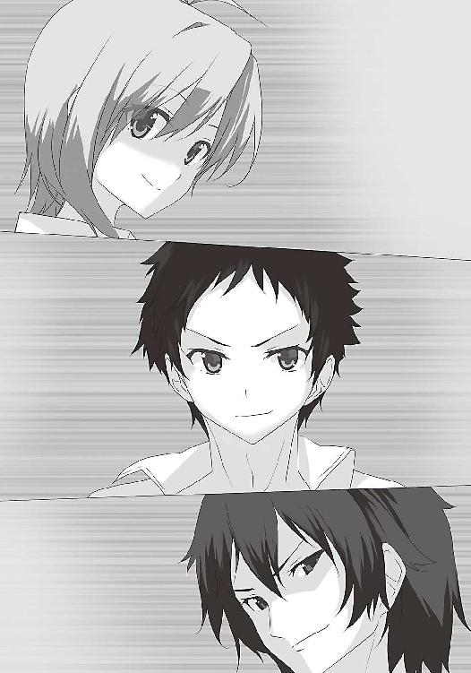
一週間が経った五月二十一日の放課後。
俺たちは「花壇の花について、提案がある」と言って、柏葉先生を呼び出した。おっぱいを見る計画の第一段階である。その全容は「花壇に水を撒いていたら、うっかり手元が狂って、掛けてしまう。シャツが透けたところを観察する」という単純なものだ。門倉さんが同じ目に遭っていたことを思い出し、俺が提案した。「テストで百点取ったら見せてくださいと頼む」という意見も出たが、絶対に無理だからすぐに却下された。
水を掛けた後は平謝りだ。これで大丈夫と思った。根拠は藤次先輩だ。先輩が最初に先生の胸に顔を埋めた際、転んでうっかりという事情を酌まれ、お咎めなしだったという。先生は、その辺を考慮してくれるのだ。
しかも今日は、中間テストの最終日だ。放課後は校内の緊張が緩み、みんな解放感に浸っていた。だから先生も鷹揚になって、許してくれやすいだろう。やるなら今日しかないと思った。
とは言え、俺たちが手を出そうとしているのは、この世で最も恐ろしいパンドラの箱だ。
だが俺たちは知っている。絶望しかないパンドラの箱からは、最後に希望が出てくるのだ。
花壇の前で、リュウジがホースを持って水を撒く。陰から先生が来るのを待つ。
人の気配がした。俺はホースを踏んだ。リュウジが叫ぶ。
「おい、マサミチ！ ホース踏んでるぞ！」
「あ、悪い！」
俺たちはわざとらしく大声で話した。そして俺は、ホースから足を離した。一気に水が噴射された。その場にいた先生は、びしょ濡れになった。
みんなの目が、一点に集中する。しかし、驚き、呆然とした。
そこにいたのは、御厨先生だった。
「御厨先生......？ 何で......？」
「ああ......チヒロは部活で手が離せないからって......私が代理で来たんだ......生物のことなら......お前だろうって」
考えの甘さを悔やんだ。俺たちとの会話より、仕事を優先するのは当然だ。
先生は濡れた自分の体を見ている。白衣を着ていて、その下は、相変わらずの黒い服だった。何も透けていない。がっかりしたが、とにかくこの場を、丸く収めなければならない。
「も、申し訳ありません」俺たちは頭を下げた。
「ああ......まあ......いいさ......着替えれば......済むことだから」
先生は背を向け「更衣室ぅ......更衣室ぅ......」と言いながら立ち去った。
そしてリュウジが力強く言った。
「よし！ 更衣室を覗こう！」
その目は輝いていた。
「いつも黒い服というベールに包まれた体は、どんな感じか、ずっと気になっていたんだ」
確かに興味はあった。御厨先生の着替えを見てみたい。
だが俺は渋った。更衣室には、苦くて痛い思い出があるからだ。
「俺にはもう、後がない。二人は来なくていい。俺だけで行く」
「僕も行くぞ」ジュンが言った。俺も行きたい。しかしもし見つかれば......。
考え込む俺の肩をジュンが叩いた。
「なあ、マサミチ、物は考えようだぞ。御厨先生は、あの論文を発表した張本人だ。だから、もし僕たちの行動が見つかっても」
「なるほどそうか、見逃してくれるかもしれない」納得し、行くと決めた。「でも、どうやって見るんだ？ 職員用の更衣室は覗けるのか？」
「違う。体育館の傍の、二階の更衣室だ」
「いや、待て。あの部屋は生徒用だろ？」
「御厨先生は着替えるとき、何故かいつも生徒用の更衣室で着替えるんだ」
ジュンは「本当に？」と訊いたが、俺はその理由を、何となく想像できた。生徒の体付きをじろじろ見る先生の姿が目に浮かんだ。
「さあ、ついて来てくれ」
校舎裏に着いた。周囲からは死角になる。窓の向かいには、三階の高さまである木が並ぶ。
リュウジは「これだ」と、その中の一本を指差した。それは更衣室から少しずれた位置に、鎮座している。
「どうするんだよ？」ジュンが訊いた。するとリュウジは「こんなこともあろうかと」と言い、おもむろに鞄に手を入れた。そこから三十センチ四方ほどの鏡とセロハンテープを出した。
「この鏡を木の上に設置するんだ。ここは木が防壁になっていると油断して、カーテンを閉めていないことが多いから」
「でも、全然場所が違うだろ」俺は窓を見上げた。
「いや、ここでいいんだ。鏡の高さ、反射の角度を計算したところ、ここに置けば、傍の男子トイレの窓から見えるはずなんだ」
流石だ。用意がいい。俺とジュンも、ドキドキした。
俺は木を見上げた。二階の窓までは、四メートルはあるだろう。だが登れそうな枝がない。
「脚立が必要だな」
リュウジは首を振った。
「脚立を取りに行っていたら、先生が来てしまう。もたもたしている時間はない」
そしてリュウジは、木の横にしゃがんだ。
「さあ、マサミチ。俺の上に乗るんだ」
「いや待て。俺とお前の身長を合わせても、この高さは届かない」
「ならその上に、ジュンが乗ればいい。三人で力を合わせれば可能だ」
俺とジュンは、顔を見合わせた。俺は不安になり、訊いた。
「俺たち二人足したら、百キロを超えるぞ。耐えられるのか？」
「火事場の馬鹿力で何とかしてみせる」
「その自信はどこから来るんだ。失敗したらどうするんだ」
「焦らなくとも大丈夫だよ。脚立を借りよう。先生が下着姿になる頃には間に合うでしょ」
リュウジはムッとした。
「俺は先生が服を脱ぐ瞬間を見たいんだ！ 有から無へと変わる瞬間を見たいんだ！」
「お前の性癖なんか知らん！ 何だ、そのこだわりは！」
「そうだよ！ 今はクソリュウジの性癖を優先してる場合じゃない！ 却下だよ却下！」
御厨先生の着替えという、貴重な一瞬を見られる。それを思い、俺たちもつい熱くなった。
しかしリュウジは、俺たちを振り切った。元々、リュウジが準備した鏡だ。俺もジュンも、強く出られなかった。
「さあ、マサミチ、来い！」
「行くぞ」俺はリュウジの肩に乗った。肩車の恰好になる。さらに俺の上にジュンが乗った。
大丈夫だろうか。そう心配した直後「ぬおお......」と唸り声を上げ、リュウジは立ち上がった。立ち上がったのだ。人間二人を乗せて立ち上がったのだ。この男の想いの丈は本物だ。
ジュンは鏡を置き、声をかける。
「リュウジ、この角度でいいか？」
「......」
「リュウジ？」
ジュンがもう一度声をかける。しかし、リュウジから反応がない。下を見ると、リュウジは木の幹に手を付いたまま、歯を食いしばっている。額に汗が滲み、足が震えている。
「おいリュウジ！ しっかりしろ！ ジュンの手は届いてる！ もう少しだ！」
「駄目だ！」
リュウジの叫びと共に、人間支柱は脆くも崩れた。俺たちは落下した。リュウジが下敷きになり、怪我は免れた。リュウジは息を切らし、肩を押さえながら叫んだ。
「は、早く脚立を借りてくるんだ！」
「最初からそうしろ。馬鹿たれ」
俺が言ったそのとき、視界の端に何かが映った。何かが落下している。それが鏡と気付いたときには、もう遅かった。鏡は地面に衝突し、乾いた音を立て無残に砕けた。
「なんということだあああ！」
リュウジが頭を抱えて絶叫した。同時に俺たちの不満が爆発した。
「お前が変な性癖を発揮するからだろうが！ 最初から脚立を借りれば良かったんだ！」
「そうだ！ クソリュウジ！ 早く予備を出すんだ！」
「残念だが......一枚しかない」
俺たちは項垂れた。リュウジは特に落ち込んでいた。当然だ。リュウジだけが体験談を語れなかったのだ。このままではリュウジだけが、先輩の漫画を読めない。
「もう、これしかない」リュウジは携帯電話を出した。「録画モードにして正面から撮影する」
「いや待て。それは欠点がある。ランプが光るだろ？ しかも正面じゃ丸見えだ」
「その通りだ。だからこの手段は、俺も真っ先に排除した。しかし」リュウジは眉間に皺を寄せた。「もうこれしか方法が残っていない。苦肉の策だ。しかしこれは、危険な作戦だ。二人は帰ってもいい」
しかし俺たちは首を振った。「最後まで付き合う」と俺は言った。
ここまで来て帰れない。それに俺たちも、御厨先生の着替えを覗きたかったのだ。
更衣室の真正面に移動する。かつて鏡だった板に、テープで携帯を貼り付ける。少し振ってみた。全く外れる気配はない。これなら大丈夫だ。
「最後の力を振り絞る」リュウジが意気込み、再び人間トーテムポールを作る。ジュンが素早く板を設置し、俺たちは地上に降りた。
今度こそ準備は完璧だ。後はばれないことを祈るのみだ。
耳を澄ます。そして金属音が聞こえた。「ドアが開いた」俺は言った。
いよいよだ。しっかり撮れるだろうか。窓を見上げる。俺たちの間に、緊張が走る。
刹那、更衣室の窓から、ぬっと黒いものが伸びてきた。長い棒だった。先端は二股に分かれている。高枝切りバサミのように見えた。
棒はぐんぐん伸び、木の上の携帯を摑んだ。そのまま棒は、窓の中へと引っ込んだ。
俺たちは呆気にとられながら、それを見ていた。何が起こったか理解できない。
やがて一人が窓から顔を出した。
「何をしてらっしゃるんです？」
園村先輩だった。手にはリュウジの携帯電話が握られていた。
８ いかにして胸を内に収めるのか
凍ったように俺たちの動きが止まった。顔が青ざめていく。
俺の携帯電話に、知らない番号から着信があった。出る余裕はない。しかしふと見上げると、園村先輩がどこかに電話をしている。嫌な予感がしたが、通話ボタンを押した。
「あ、もしもし、比嘉君ですか？」やはり園村先輩の声だった。「久々に見つけたら、面白そうなことをしているんですもの。先回りしちゃいました」
「この番号、どこで知ったんですか！」
「どこでもいいじゃありませんか。それより、この状況、どうします？」
言葉が出てこない。
「ふふふ。備えあれば憂いなしですね。実はこの木、過去に何度か同じことがあったんですよ。だからこの更衣室には、こういうものが常備されているんです」
先輩は、先端が摑む専用になっているハサミを見せた。
「さて、このことを告発して、罪に問うのは簡単ですが、それは勿体ない。だから、もう一度訊きます。私のイヌになりません？」
どうする......それは絶対に嫌だが、この状況では......。
俺は二人の顔色を窺った。二人の目も「それは駄目だ」と言っていた。
「先輩のイヌにはなりません」
「残念です。じゃあ、この携帯を録画状態のまま、この辺に置いておきましょうか」
背筋に冷たいものが走る。俺たちは大慌てで、女子更衣室に向かった。扉が開けっ放しだ。誰もいないのだろう。周囲にも人の気配はない。まだ先生は来ていないようだ。
中を見た。園村先輩が一人いた。携帯電話は窓際の、とてもわかりやすい場所に置いてある。気付いてくださいと言わんばかりの位置だ。取りに行きたい。しかし先輩が、カメラを構えている。中に入ることができない。
「ああ、そうですよね。私がここにいたら、入れませんよね」
先輩は、カメラを降ろした。
「じゃあ、頑張ってください」
そして先輩は、更衣室を出て、向こうへ歩き出した。俺たちは顔を見合わせた。
罠じゃないかと思ったが、先輩はこっちを振り返ることなく、悠然と歩き去った。
更衣室に別のカメラを仕掛けたのかとも思った。しかしそれでは、先輩の方が変質者になる。
迷う暇はない。やるしかない。俺たちは中に飛び込んだ。リュウジが素早く携帯を回収する。
ほっとした。これで一安心だ。
そのとき、廊下から声と足音が聞こえた。一人や二人ではない。俺たちは息を飲んだ。
こっそりと顔を出し、すぐに引っ込めた。慄然とした。女子の一団が歩いてくる。明らかに部活のための、着替え目的だ。まさかの事態だった。今ここから出れば、間違いなく見られる。逃げることができなくなった。女子の足音は、どんどん近付く。
きっと先輩は、そろそろ人が来るとわかっていたのだろう。自分で摘発するよりも、誰かにさせた方が面白いと考えたのか？
とにかく隠れる場所を探す。だがきちんと整理されていて、どこにもない。ロッカーは五十センチ四方ほどの扉が、碁盤のように並ぶタイプだ。とても人が入れるサイズではない。
唯一見つけたのは、掃除用のロッカーだった。ここしかない。三人で、ぎゅうぎゅう詰めに入った。満員電車よりも酷い状態だ。狭かったが仕方ない。他に隠れられる場所がないのだ。
とにかく動くな。息もするな。
女子が中に入ってきた。ロッカーの隙間から覗けたかもしれないが、それどころじゃない。動いて音が出たらまずい。
「ねえ、ミイちゃん」
門倉さんの声だ。彼女もいたのか。しかも、ミイちゃんは中崎さんだ。これでもう、絶対に何が何でも、見つかるわけにはいかない。
「比嘉君のことなんだけど」門倉さんは、改まった口調だった。
「あ、あの変態がどうかしたか？」
「この前の下着のこと、何故か下駄箱に入ってたって。あれ、本当だったんじゃないかなって」
「何で？」
「よく考えてみたらさ、本当に犯人だったら、パンツ持ったまま、家の前をうろうろしないと思うんだよね」
俺は罪悪感に襲われた。目頭が熱くなった。
門倉さんは、ちゃんと考えてくれているじゃないか。それなのに俺は、こんなところに身を潜めて、何をやっているんだ......！ 自分に憤慨した。死んでしまいたい。
そのときだった。扉がギシと音を立てる。明らかに誰かが触れている。顔が青ざめ、互いの心音が響きあった。
そしてじわじわと扉が開いた。真綿で首を絞められるようだった。
緊張が極限まで達した、そのとき、過去の映像が脳内を駆け巡った。女子更衣室に入ったり、パンツを拾ったり......思えば今まで馬鹿なことをしたものだ。
しかしそれも、ここで終わる。これが年貢の納め時というやつかもしれない。
死を覚悟し、静かに目を閉じた。やがて光が差し込む気配がした。
終わった......。聞こえるのは悲鳴か、罵声か......。
......静かだ。扉が開いて暫く経っても、女子の自然な話し声しか聞こえない。
俺はゆっくり目を開けた。
そこに立っていたのは、御厨先生だった。
「............」
先生は無言で俺たちを見ていた。そしてニヤリと笑った。
「掃除用具がどうかしましたか？ 御厨先生」
「ん......いや」先生は、扉を閉めた。
暫くして、声が遠ざかった。みんなが出て行ったらしい。そして先生は、再び扉を開けた。
「あんたら......何やってんだい？」
俺たちは生物準備室に連れてこられた。
「私も一応......教師だから......このまま見逃すってのは......ねえ......ゆっくり話を......聞こうじゃないか」
「先生は、俺たちに気付いたんですか？」
「ああ......オスのニオイが......したからさ」
流石だ。しかし、見つけたのが御厨先生だったのはセーフだ。うまく心を摑めば、この場を乗り切れるかもしれない。こうなったら、言うしかない。俺は口を開いた。
「実は、御厨先生の着替えを覗こうと思ったんです」
「へ？」
「俺たちは、先生の論文に感銘を受けたんです。だから常に、猥褻なことを考えることにしました。その一環として、スタイルの良い先生の着替えが見たかったんです」
「そうです！」リュウジが続く。「見せてください！ 俺たちを不能者にしないために！」
「やーだよ」先生は、にべもなく言った。「私にだって......相手を選ぶ権利くらいはあるさ......だいたい......見るんなら......私より......チヒロの方が......あ」
先生は、またニヤリと笑った。
「あんたら......へへ......それが目的だったのか......？」
ばれた......！ これはまずいぞ！ 噓をついたとなれば印象が悪くなる。それに先生の女のプライドを傷つけてしまったかもしれない。すぐに訂正するんだ。
「いえ、先生の着替えが見たかったんです。先生は非常にお綺麗だから」
「ふーん......」
先生の態度は素っ気ない。まずいぞまずいぞ......。先生の心を解した気配がない......。
このままでは、見逃してもらえない。柏葉先生の前に突き出されてしまう。
「わかりました。正直に言います」
リュウジが口を開き、大きく息を吸った。
「先生の仰る通り、俺たちが見たかったのは、柏葉先生のおっぱいです」
「ふーん......へへ......それで？」
「あのおっぱいは最高です。形も柔らかさも天下一品。一度触れれば虜になる。もう他の女性に目を向けられない。日がな一日、頭を支配し離れない」
先生は机に肘をつき、指を組むと、そのまま俯いた。「ククク......」と小さな声が聞こえた。
「柏葉先生のおっぱい。それは全てを超越するもの。年齢、性別、全てを超えて愛されるべき存在。先生を中心に世界は回る。もし、今まさに戦争の火蓋が切られそうな場所に現れれば、全員が見とれて、戦うことがバカバカしくなる。自分たちの愚かさを痛感する。すぐに和平の調停に入る。おっぱいは世界を平和にするのです」
「ひゃはははは！」
御厨先生は腹を抱えて、仰け反った。まさに抱腹絶倒だった。
「良いこと言うじゃないか......ヒヒヒヒヒ」
そして先生は、一瀉千里に述べ立てたリュウジの肩を、バシバシ叩いた。
「私もね......あのおっぱいは......大好きなんだ......チヒロと初めて会ったのは......高校のときなんだけど......その当時から......へへ......すごかったね」
「そ、そんなにですか？」
「ああ......魅了されたね......修学旅行のとき......初めて生で見て......思わず......抱き付いた」
想像したかったが、神格的すぎて、想像できなかった。
「オスを惹きつける......パーフェクトな体だ......私がこの分野の研究を始めたのも......チヒロがきっかけ......そう言っても......過言ではない」
あの先生の胸は、人の人生まで左右してしまうのか。
「元気があってよろしい」
御厨先生は俺たちを解放し、飴をくれた。
流石、リュウジは機転の利く男だった。演説じみたことをさせれば一級品だ。
そこに柏葉先生が現れた。
「レイ。この後の職員会議のことだけど......何かあったのか？」
「いや......別に......ククク......ちょっと質問を......ヒヒヒ......受けていたのさ」
言いながら、柏葉先生の胸をじろじろ見る。
「いつ見ても......男を虜にする......けしからん体だ......驚異の胸囲......ククククク」
「うるさい黙れ」
「そうだ......君たちに......一つ良いことを......教えてあげよう」
先生は俺たちの耳元で囁いた。
「チヒロの胸は......大きすぎてね......サイズの合う下着が......なかなか売っていないんだ......だから......海外のサイトから買って......」
次の瞬間、御厨先生は床に倒れた。柏葉先生が蹴り飛ばしたのである。
今まで御厨先生は、柏葉先生にいろいろなことをしていた。しかし、柏葉先生が御厨先生に手を上げた場面は、初めて見た。先生は俺たちを睨んだ。
「お前ら！ もう帰れ！」
とにかく有沢先輩に話した。
「素晴らしい。柏葉先生の下着の買い方は知らなかった」
先輩は拍手した。俺たちの顔に、光が宿った。
「ＯＫだ。君たちが本気だとわかった。それで内容だけど」先輩は、机の上にあったノートを開く。「少女の心を持ち続ける女性。彼女はその少女性ゆえ、自身の情動の変化を受け入れられず、自我を解放できない。そんな彼女が心を許す、一人の友人。その関係は、いつしか友情の枠を超えてしまう。それが彼女を解き放つ。そこを弟が見てしまう......こんなのはどうだ？」
聞いているだけで、わくわくするテーマだ。弟という単語が入っているあたり、すでにリュウジの希望も酌んでくれていたらしい。俺たちのことを信じていてくれたのだ。
「できあがるまでの間、これを渡しておこう」先輩は棚から紙束を出した。「内容はややエロ。パンツがエロく見える程度。目を慣らしておくといい」
確かに徐々にステップアップするのがいいかもしれない。相手を思いやる素晴らしい先輩だ。
そのとき、ジュンが一歩前に出た。
「あの、ここで絵の勉強をさせてください」
「アシスタントは、採らない主義だ」
「漫画を描くこと、そのものを勉強したいんです」
ジュンの目は真剣だった。
「なあ、カズマ」横で聞いていた藤次先輩が言った。「俺たちはもう三年だ。そろそろ後継者を育てるのも、ありじゃないか？」
有沢先輩も考える。
「わかった。認めよう」
「ありがとうございます！」
早速この日から、ジュンは有沢先輩の下で修業を始めた。そして数日が経った。
「師匠はすごいぞ。原稿に食らいついて。パンツの皺を描くときの目とか、獣みたいだ」
ジュンは先輩のことを楽しそうに話す。そして「これを見てくれ」と一枚の紙を取り出した。
そこには水着で泳ぐ女性が描かれていた。構図、陰影、筋肉の付き方や躍動感、そして水着の撥水している質感、髪の毛の濡れ具合に至るまで、うまく表現されている。
「綺麗な絵だな。先輩の絵か？」
「僕の絵だ」
思わず「へー」と感嘆の声を上げた。以前のものより、格段にレベルが上がっている。先輩の下で勉強した成果が、目に見えてわかる。先輩の技術を吸収しているのだ。こうして技術は、連綿と受け継がれるのだろうと思った。否定する女性が許せん。
しかし俺たちは心配だった。日に日にジュンが、やつれていくのだ。目の下にクマができ、息も切れ切れ、声も少し嗄れている。
そしてついに、それは起こった。翌週の金曜日。一時間目の英語のときだ。
「次、飯沼。ここから読め」柏葉先生がジュンを指した。
ジュンはふらふらと立ち上がった。次の瞬間、ジュンは倒れた。思わず駆け寄った。
「ジュン！ しっかりしろ！」
先生も驚き、教科書を置いた。
「比嘉。飯沼を保健室に連れて行ってやれ」
ジュンを保健室に運び込み、ベッドに寝かせる。
「食事もまともに食べてないんじゃないか？」
「ふふふ。集中しすぎた。漫画を描くってのが、こんなに重労働だとは思わなかった」
「そんなに無理をしなくても」
「でも、面白いんだ」
ジュンの目が、輝いている。そして自分の右手を見つめた。
「少しずつ、物を生み出す喜び。一つのことを成し遂げる達成感。僕は生まれてから、一番の感動を覚えている。もうすぐ、僕の初めての漫画が完成する」
「エロいのか？」
「この前に渡されたものと同じ程度さ。流石に最初から師匠レベルのものは描けない。まずは基礎から。それから師匠の漫画も進んでるぞ」
「本当か？ どうだった、出来栄えは？ すごかったか？」
「いや、まだ読んでいない。完成まで楽しみは取っておくよ。それに、二人と一緒に、感動を分かち合いたいから」
少し照れくさくなった。
「じゃあ、僕は少し寝る」
ジュンは目を閉じた。そしてそのまま、放課後まで目を覚まさなかった。
だがこれは期待できる。未来への希望が膨らんだ。俺たちの男性は死なない！
しかし、俺たちが本を手にすることはできなかった。
その二日後、有沢先輩が捕まったからだ。
９ 守るべき虚妄 ～戦いの序曲～
今日から衣替えという六月初日。日曜日ということもあり、ジュンは朝から有沢先輩の下を訪ねていた。リュウジは俺の家に来て、語っていた。「俺たちが本を手にする日は近い」と。
しかし、午後三時のことだ。俺の携帯電話に着信があった。ジュンからだった。
『マ、マサミチの家の陰に隠れている。ドアを開けてくれ』
その声色から、ただごとではないことが窺えた。息も切れている。俺は急いでドアを開けた。すぐジュンが飛び込んできて、自らドアを閉め、鍵をかけた。大事そうに鞄を抱えている。
とりあえずジュンを部屋に入れた。ジュンは険しい顔で切り出した。
「師匠のところに、生徒会が来たんだ。エロ本の証拠が出てきたらしい」
「何だと！ じゃあ、先輩はどうなったんだ？」
「連行された。今頃取り調べを受けているはずだ。知らぬ存ぜぬを貫いているだろうけど」
ジュンは悔しさに耐えるような顔をして、鞄を抱きしめた。
「これを持って逃げるように言われた直後だった」
そして少しだけ鞄を開けた。鞄の隙間から紙の束が見えた。明らかに原稿だ。
「他にも師匠が方々から搔き集めた資料が入ってる。つまり見つかるとまずいものだ。師匠は僕に、これを託して『暫く来るな』って言った。自分の今後を知っているみたいだった」
こういうことをしている人だ。広いネットワークを持っているのだろう。そのどこかから、情報を得たのかもしれない。
しかし証拠の隠匿には慎重だったはずだ。どこから流出したのだろう？ 先輩の漫画を受け取った人が口を割ってしまったのか？ でも漫画の持ち主は、先輩が認めた有志だけのはずだ。
「とにかく藤次先輩を呼ぼう」
三十分ほどして駆けつけた先輩に、事情を説明した。先輩は言った。
「今頃、部屋は調べつくされているだろう。何も見つからないと思うけど」
「隠し方、素早いですね。ジュンに証拠を持たせる手際も」
「実はガサ入れだけなら、過去に何度かあった。でも、全部空振りだった。トオルから情報が漏れていたからね。対策はばっちりさ」
堀副会長か。確かに知っていてもおかしくない。おかげでジュンは逃げ切れた。しかし......。
「これからどうなってしまうんでしょう......」
「証拠が一つだけなら、そこまで重い罰にはならないだろうけど......。でも、解放された後のエロ本作りは、難しくなる」
もしも有沢先輩の有罪が確定すれば、生活にあらゆる制約がかかるだろう。まず、画材屋へ通達され、画材の販売禁止。パソコンソフトも没収。人との接触も制限され、定期的に見回りが入る。こんな事態が想定される。二度と漫画を描けないと言っても過言ではない。描くためには、この学校にいられない。こんな形でみんなの希望が失われてしまうのか......。
「ところでジュン」俺は向き直る。「お前は大丈夫なのか？ 出入りしていただろ？」
「今、徹底的に捜査されているだろうな。他の証拠を探すために」
藤次先輩の言葉に、ジュンが不安の色を浮かべる。俺は鞄を指差した。
「それ、全員で分担して隠した方がいいんじゃないか？」
「いや、それはやめておこう。生徒会は間違いなく、俺たち全員をチェックしているはずだ。かえって見つかるリスクが高まる。一つ見つかれば芋づる式だ。一箇所に留めておこう」
藤次先輩は言った。もっともだと思った。
「俺は学校に証拠の開示を請求する。友人が捕まったんだ。変には思われまい」
藤次先輩は、柏葉先生に再三請求した。その要求が認められたのは、有沢先輩の逮捕から、一週間後の月曜日のこと、先輩の有罪が確定した日だった。校内新聞に、有沢先輩の有罪確定の記事と同時に、漫画の一部が載った。勿論、卑猥なシーンではない。
それを見た瞬間、先輩は「ん？」と眉間に皺を寄せた。ジュンも「これは」と呟いた。
「飯沼君も、気付いたか」
ジュンは頷く。俺には何が起こっているのか、わからなかった。
「これはあいつの絵じゃない。別の誰かが描いたものだ」
俺とリュウジは、顔を見合わせた。
「これは......冤罪だ！」
先輩は神妙な面持ちだった。
「カズマの絵の特徴は、リアルとデフォルメの中間のようなタッチ。それに比べて、この絵はデフォルメが強い。それに俺は、カズマの漫画を一通り読んでるけど、このシーンは見たことがない。生徒会は間違った証拠を提出したんだ」
とんでもない話だ。きっと生徒会は、有沢先輩の逮捕を焦ったのだ。その結果、別人の漫画を証拠品としてしまった。許せない。しかし藤次先輩は言った。
「これは、ある意味チャンスだぞ」
冤罪は、墓穴を掘るに等しい行為だ。証明できれば、生徒会はこれから先、大きく動けなくなる。捜査に慎重にならざるを得ず、俺たちの活動がしやすくなるのだ。
「有沢先輩の逮捕について、堀先輩は、何て言っているんです？」
「それが、連絡がつかないんだ。もしかすると、あいつも重要参考人として、取り調べを受けているのかもしれない。女子寮に幽閉されているのかもしれない」
確かに堀先輩は俺たち側の人間だ。女子の役員からすれば邪魔者だ。野放しにすると、貴重な証拠を隠匿される危険がある。先手を打ったのか。
とにかく今すべきことは、有沢先輩の有罪を取り消してもらうことだ。
俺たちは、柏葉先生に直訴した。
「先生！ あの漫画は、有沢先輩が描いたものではありません。有罪を取り消してください」
「駄目だ。調査委員会の決定だ」
先生は首を振った。おっぱいが揺れた。
「何ですか、その調査委員会って。誰がやっているんです？」
「堀以外の生徒会役員だ」
男子に対して強硬派の女子ばかりだ。話を聞いてくれるはずがない。しかも堀先輩がここに入っていないとすると、有沢先輩を擁護する人が皆無となる。
先生に頭を下げ、再調査を依頼した。しかし「決定事項だ」と、軽く流されるだけだった。生徒会室にも乗り込んで再調査の依頼をしたが、取り合ってすらもらえなかった。
このままでは、先輩の冤罪を証明できない。漫画が読めない。俺たちの男性はどうなるんだ。
長い戦いになることを覚悟した。その矢先だった。
藤次先輩から「情報が入った」と招集がかかった。
「事態の重大性が問題視されて、市が動くことになった。次の土曜の朝、カズマが女子寮から矯正施設に移送されることが決まった。同時に、例の証拠も運ばれる。加えて昼過ぎに生徒会と風紀委員と矯正委員で、怪しい奴の家を一斉捜査することも決まったらしい」
そんな......そんなことになったら、もう手出しできなくなる。
「しかも......」先輩は一層、表情を険しくした。「この証拠、捏造の可能性があるかもしれない」
俺たちは言葉を失った。しかし確かに、藤次先輩をして、出所がわからない。そんな、突然現れた漫画。降って湧いたような、生徒会に有利な偽の証拠。考えられなくはない。
「とにかく、調査委員会側にある原稿だけが、証拠の間違いを証明する、唯一の手掛かりだ。これがない以上、俺たちにはどうしようもない。出所も不明だから、移送されたらおしまいだ」
「例えば......そう、僕たちで署名を集めるとか」
「それは難しいだろうな。そんな動きを見せると、すぐに捕まってしまうから。だから名前を書いてくれる人も、いるかどうか」
俺たちは、途方に暮れた。どうしたらいい。俺たちの男性を守るための、唯一の希望なのに。
しかし原稿がないと、どうしようもない。調査委員会は動くはずがない。
俺は頭を搔きむしった。そして、顔を上げた。
「原稿を、奪おう」
全員が驚き、目を丸くした。しかし俺は、構わず続けた。
「証拠さえ手に入れば、俺たちで調査できる。重要なのは、移送させないことだ」
「でも奪うって......どうするんだよ。だいたい、どこにあるかもわからないのに」
ジュンが不安そうに言う。
「いや、見当はつく」藤次先輩が強い口調で言った。「一番考えられる場所は女子寮だ。調査委員会も話し合いの場を設けるだろ？ 一番都合が良いのは女子寮だ。あそこには人が集まり易いし、会議室もある。それに一階に資料室があるんだ。たぶん、そこだ」
もっともらしい。しかし女子寮となると......。
「もう......諦めるしかないのか......」
リュウジは珍しく弱腰だった。しかし俺は発奮した。
「諦め切れるか！ 俺たちは岐路に立たされている。人生を潰すか、男性を潰すか！」
ついに摑みかけた光明。一縷の望み。手を伸ばせば、届く距離にある。また鬱屈した日々に戻ってもいいというのか。
そんなこと、俺には耐えられない。俺は言った。
「俺が潜入する。俺が女装して中に入って、証拠を取ってくる」
みんなが絶句した。しかし俺は捲し立てた。
「考えられるのは、それだけだ。女子寮に入ったことがあるのは俺だけだ」
「比嘉君が行くなら、俺も」
藤次先輩が言った。しかし俺は首を振った。
「先輩は、女子に顔を覚えられすぎています。きっとすぐに見つかります」
先輩は項垂れた。「すまない......まだ未来ある君に、こんな役目をさせるなんて」
「謝らないでください。俺たちは、先輩のおかげで、有沢先輩に会えた。エロ本を読めるかもしれない。これは俺の意志です。先輩は、詳細な計画を立ててください」
「僕も行こう」ジュンが言った。「僕の力が必要になるだろう。女装なら負けない。ウイッグもエクステも持っている。必要なら、化粧道具も用意できる」
「ありがたい。ジュンがいれば百人力だ。心強い」
「畜生......俺はなんて無力なのだ」
リュウジが両手をつき、項垂れた。そして悔しそうに歯を食いしばり、泣いていた。
リュウジは身長が一八〇センチはある。顔つきも鋭い。俺たちの中で最も男らしい体付きをしている。つまり、女装に不向きだ。
「俺は実行もできなければ、女子寮の知識もない......役立たずだ」
「いいんだ、リュウジ。お前には、過去に何度も助けられた。人には、そのときごとの役目があるんだ。今回は俺たちに任せてくれ」
「すまない」リュウジは呟いた。俺は先輩に向き直る。
「先輩、詳しいことを教えてください」
藤次先輩は頷いた。そして紙とペンを取り、女子寮の見取り図をさらさらと描いた。完全に頭に入っているのだろう。手の動きに、一切の淀みがなかった。
一通り描き終わったところで、Ｂ棟一階のある部屋を指差した。
「さっきも言ったけど、資料室、ここを調べなければならない。ただ......」先輩は眉間に皺を寄せた。「あの部屋は普段、鍵がかかっているんだ。その鍵は確か、事務室にあったはずだ」
「ジュンが女装して借りるとか」
「無理だろうな。あの部屋、通常は生徒の立ち入りが許可されていないんだ。入ろうとすれば、身分、目的を事細かに訊かれる」
「奪えませんか？」
「それも難しい。事務室が無人になることは、ほぼない。期待しない方がいい」
「深夜なら、みんな寝るんじゃ？」
「確かに誰もいなくなるけど、今度は事務室に鍵がかかる。その鍵は、守衛さんが持っている」
俺たちは閉口した。資料室に侵入できなければ意味がない。先輩が口を開く。
「とりあえず、わかるところから決めよう。まずは日取りだ。移送が土曜なら、遅くとも金曜には決行しなければならない」
「やっぱり制服が必要ですよね？」
「うん。寮内では、私服、制服どっちでもいいけど、平日に私服は、中に入るとき怪しまれる」
平日に私服で出かける生徒は、ほぼいない。俺は少し考えた。
「衣替えしたからブレザーは着ない。ブラウス、リボン、スカートが必要......買うしかないか？」
俺はジュンに目配せをした。ジュンは考え込んだ。
「ブラウスとリボンだけなら、何とかなるけど......でも、問題はスカートだね」
確かにそうだ。ブラウスならまだしも、この時期にスカートを買うのは不自然だ。
「僕は姉貴の使い古しがあるから大丈夫だけど、マサミチはどうする？ 誰かから借りる？」
「誰が貸してくれるんだよ。それに俺の体格は、平均的な男子だ。一七〇センチ、五十七キロ。大きいサイズが必要だ」
「中崎さんの服なら、着れるんじゃないか？ 体格、近いでしょ？」
「何て言って借りるんだよ？」
「あなたの服を着てみたい、とか」
「馬鹿を言うな！ 何だそいつは！ ただの変態じゃないか！」
「すでに変態と思われているんだから、問題ないよ」
「あるに決まってるだろ！」
「じゃあ、どうするんだよ！」
「落ち着け！」リュウジが声を張った。「二人とも先が見えなさすぎて、考えがあらぬ方向に飛んでいる。行き詰まっている証拠だ。いっぺん深呼吸しろ」
俺たちは息を吸った、頭に冷静さが戻る。
「急がなければならない。しかし、急いてはことを仕損じる」
リュウジの言う通りだった。計画をしっかり練らなければならない。
「いざとなったら、僕が一人で行くしかないな」
「もう一つ」藤次先輩が指を立てた。「生徒手帳を偽造した方がいい」
「生徒手帳、ですか？」
「セキュリティの観点から、外部の人間が中に入るときは、必ず身分をチェックされるんだ。うちの生徒でも、寮生以外は生徒手帳を調べられる。もっとも、そこまで細かくは見られないはずだ。コピーをとって、写真を貼り替えれば、大丈夫だと思うけど」
なかなか、やるべきことは多い。リュウジが言った。
「今日は解散しよう。一度寝たら、何か閃くかもしれない」
その翌日、火曜日の放課後。
俺たちは生徒会室を訪れていた。ダメ元だが、もう一度、調査を頼もうと思ったのだ。
結局、良い案は浮かばなかった。それに本音を言えば、女子寮に忍び込むなどという、危険極まりないことはしたくない。生徒会を何とか説得し、真実を明らかにしてもらった方がいい。
しかしドアに鍵がかかっていた。試しにノックをしても、やはり返事はない。
「おかしいな......この時間に留守なんて」
藤次先輩が呟く。どうしようかと思い、互いに顔を見合わせる。ドアに付いた窓から、中の様子を窺ってみた。整然とした無人の室内。その奥の黒板が見え、俺たちは首を傾げた。
『藤次 飯沼 比嘉 菊間』
黒板に、俺たちの名前が書かれていた。その横に、会長を始めとした生徒会役員、その他、数十人の女子の名前が書かれている。そしてこの近辺の地図が貼られている。そこには赤ペンで印が入れられている。よく見ると、その印は俺たちの家に付けられている。
さらに目を凝らし、名前の上に書かれている言葉を読んだ。
『有沢の証拠品を所有している可能性のある者の家宅捜査について 四時～』
俺たちは学校を飛び出した。
10 紅蓮の騎士
俺たちは走った。間違いない。彼女たちは、証拠品を回収しに行ったのだ。
しかし先輩の情報では、家宅捜査は土曜だったはずだ。計画が前倒しになったのか？
理由はとにかく、生徒会よりも早く家に帰り、証拠を守らなければならない。生徒会の思惑通りに証拠を回収されれば、今度こそそれは本物だ。もう冤罪という主張は通らない。
藤次先輩は自分の家を守るため、途中で分かれた。
ジュンの家が見えてきたとき、俺は「待て」と制止した。
「見張られている。遅かった」
昔、とある事情で培われた俺の鋭敏な神経が、この場の危険を察知させた。おそらくジュンが帰ったら、すかさず乗り込むつもりなのだろう。逃げ道を塞ぎ、証拠隠しの時間を与えないつもりだ。今日で捜査を完結させるつもりなのだ。
ジュンが少し考え、言った。「この時間、うちは留守になる。僕が足止めしておくから、二人は裏口から入るんだ。原稿と資料は、僕の部屋の机の、上から二番目の引き出しに入っている」
俺たちは頷き、ジュンから鍵を受け取った。ジュンは何食わぬ顔で玄関へ向かった。そしてドアの前に立ち、鍵に手を掛けた。
すると案の定、ぞろぞろと女子が顔を出した。十人もいる。先頭は、会長の都筑ミチルだ。会長が直々に来ているのは、ここが最も怪しいと睨んでいるからだろう。その推測は当たりだ。
ジュンは振り向いた。驚いた顔をしている。演技か、人数に圧倒され、本当に驚いたのかはわからない。
「ど、どうしたんですか？ みなさんお揃いで」ジュンが声を震わせる。
「ここにいかがわしい本があるとの情報を得た。お前、有沢の家に出入りしていただろう」
会長はジュンを睨みつけた。
「していましたけど、そんなものありませんよ。漫画の描き方を教えてもらっていただけです。いかがわしいことはしていません」
ジュンはきっぱり否定した。うまい演技だと思った。しかし会長は、眉一つ動かさない。
「あるかないかは、これから私たちが判断する」
会長は鞄から一枚の紙切れを出した。「捜査令状だ」会長は言い、ジュンを押し退け、扉に手を掛けた。しかし開かなかった。
ジュンは鍵を開けた振りをして、実はまだ開けていなかったらしい。
「早く鍵を開けろ」
「ちょっと待ってくださいよ」
「やはり、見せられないものがあるのか？」
「いえ、散らかっているんで」
ジュンが生徒会を引き付けている。その調子で、少しでも時間を稼いでくれ。今のうちに、俺とリュウジは、建物の裏側に回り込む。
二メートルほどのブロック塀に囲まれた細い路地を歩く。正面とは打って変わって、こっちは静かだ。女子の気配はない。ジュンがうまく会長たちをおびき出してくれたからだ。これで隠れた女子はいなくなった。俺たちも動きやすい。ジュンの機転のおかげだ。
俺たちは塀を摑み、足を掛け、中に入ろうとした。
突然、俺は腕を摑まれた。女子の腕だった。
「ふふふ。何をしていらっしゃるんです？」
人を諭すような、ゆったりとした声......。慇懃無礼な、優しい口調......。
その声は、腕だけではなく、心臓まで摑まれた錯覚に陥らせた。
ゆっくり、振り返った。
思った通りだった。園村先輩が、カメラを持って微笑んでいる。
背筋が凍る。少しも気配を感じなかった。どこに隠れていたのか、全くわからない。
だが園村先輩は盗撮のプロだ。気配を消すぐらい容易いのかもしれない。そして人を嵌める術に長けているから、ジュンの罠にも嵌まらない。裏をかこうとした俺たちの、さらに裏をかくことができた......。
「ここはお二人のおうちでは、ありませんよね？ 何をなさっているんです？」
「な、何でもありませんよ。放してくださいよ」
先輩の腕を振り解く。
「痛いですよ。そんな態度をとるなら、大きな声を出しますよ？」
「お、大きな声って......噓をつく気ですか？ 助けてとか乱暴されたとか。俺たちは、先輩に何もしてないじゃありませんか。新聞部として、噓は一番やっちゃいけないことですよ」
「ふふふ、噓はつきませんよ」
先輩は、大きく息を吸い込んだ。
「あら！ 比嘉君に菊間君じゃありませんか！ こんな場所で会うなんて！ 奇遇ですね！」
緊張が走った。周辺一帯に響き渡るような大声だった。間違いなく、生徒会の耳に入った。
「あっちだ！ 裏口だ！」会長が叫んだ。もはや一刻の猶予もない。
「リュウジ！」
俺は壁に手をつき、頭を下げた。すかさずリュウジが俺を踏み台にし、塀を乗り越えた。
「菊間君だけが行っちゃうんですか？」
「園村先輩には、一つだけ誤算があります」
「へー。何でしょうか？」
「俺たちが、つうかあの仲だということです」
そして先輩に背を向け、俺も塀を越えた。そのまま、家の裏から、ぐるりと回り込む。
勝手知ったる友人の家だ。どういう構造か知っている。階段を上って右の部屋が姉、左がジュンの部屋だ。リュウジならきっとこうする。だから走る。そして窓の下に辿り着いた瞬間、
「マサミチ！」
真上の窓から、リュウジが顔を出した。真下で俺は手を振る。そこにリュウジは、ファイルを投げた。俺はそれを受け取った。中には原稿と資料が丁寧に綴じられている。
「原稿はどこだ！」会長の声がしたのは、その直後だった。
「いやあ、ははは、僕の部屋に、こんなに女性が来るなんて、華やかですね」
「探せ！ 他にも仲間が潜伏しているはずだ！」
会長は、ジュンの冗談を無視した。俺は走った。がむしゃらに走った。
「いたぞ！ あそこを逃げている！」
間一髪だ！ とにかく、遠くへ！
全力で走り続けた。しかしどうする？ このまま逃げても、きりがない。
どこかへ隠れるか？ だがどこへ行く？ リュウジの家、俺の家......駄目だ！ 全部見張られている。どこかの店？ それこそ追い詰められたらおしまいだ。
くそっ、そろそろ息も限界だ。足が止まり始めた。どこかで体力を回復させたい。
そのとき、俺の目の前に現れたのは、昔、三人で遊んだ思い出の公園だった。
俺は中に入った。遊具に補強が加えられたり、ペンキを塗り替えられたりして、多少様子は変わっている。しかし、砂場やブランコの位置は同じだ。
水道で水を飲んだ。そして備え付けの土管の中に入り、膝を抱え、小さくなった。
不安だった。この後、どうなるのだろう。二人は無事に逃げ切っただろうか。
どれくらいそうしていただろう。
「やっぱりここにいた」
覗き込んでいるのは、リュウジとジュンだった。
「変わらないな。お前はケンカして気まずくなると、いつでもここに隠れていた。三つ子の魂百までとは、よく言ったものだよ」
懐かしさと安堵が込み上げ、少し目頭が熱くなった。それを拭い、言った。
「これからどうする？ もう隠し切れないぞ」
するとジュンは固く目を閉じ、歯を食い縛った。そして絞り出すような声で「こっちだ」と言い、歩き出した。俺とリュウジは、わけもわからず、その後ろをついて行った。
着いた先は、川原だった。
「いざとなったら、ここに来ようって決めていたんだ」
そう言うとジュンは、持っていた鞄を開き、俺たちに軍手を渡した。
それから、十分ほど経ったところで、女子の軍勢が川原に現れた。三十人はいる。さっきの比ではない。他の見張りが全員集結したのだろう。合戦でも始めるかのようだ。
「お前ら！ 動く......なっ......！」
会長が怒鳴り、そして絶句した。
俺たちは、一斗缶を囲んで立っていた。横にはバケツがある。缶の中では、炎が轟々と音をたてて燃えている。火柱が立ち上り、真っ黒に焼けた煤が飛び散っている。
「まさか貴様ら！」
武藤先輩が怒鳴り、近付く。しかし「熱っ！」と顔を覆った。
「くそっ！」会長は、横にあったバケツの水を掛けた。真っ白い蒸気が立ち込めた。
「ああ......消えちゃった」ジュンが寂しそうに呟く。
「お前ら！ 何を燃やしていたんだ！」会長が、ジュンの胸倉を摑む。
「やだな。何でそんなに必死なんです？ 僕たちは、季節外れの焼き芋をしていただけですよ」
ジュンは、缶の中を木の枝で探り「ほら」と、アルミホイルの塊を出した。
それを取って、包みを剝がすと、中からサツマイモが姿を見せた。煤で汚れていたが、半分に割ると、黄金色の身が現れた。甘い香りが立ち込める。ほくほくとして、実においしそうだ。
「お？ ちょうど良い感じです。流石ですね、会長。食べますか？」
会長はジュンを突き飛ばし、缶を蹴り倒す。中から、ごろごろとアルミホイルの包みが出てきた。だがそれだけだった。会長たちは木の枝で焼けた灰の中を探った。しかし全て真っ黒で、何が燃えていたのかすら、わからない状態だった。
「貴様ら！ 証拠を処分したな！」
会長はジュンに摑みかかる。慌てて俺は、間に入った。
「会長、何を言っているんです？ さっきから言っているじゃありませんか。俺たちは、今日焼き芋をする予定で、集まったんです」
「お前は逃げていたじゃないか！」
「逃げた？ 準備に時間がかかるから、急いだだけですよ。早く食べたかったし」
会長は歯嚙みし、わなわなと拳を握った。
その後、女子は俺たちの身体検査をした。勿論、何も出てこなかった。
苦虫を嚙み潰したような顔をし、女子は去った。俺たちはその様子を、ぼんやりと見ていた。
遠くを見たまま、ジュンが口を開いた。
「あの人たちに勝つには、常に三手先まで読まないといけない。もし逃げ切れないと判断したときは、証拠を処分するよう師匠に言われた。ここで全てを灰にしよう、って決めていたんだ」
「でも、これで本当に良かったのか？ それに、ジュンの原稿だって」
「いいんだ」
「あれほどの思いをして描いた漫画だろ？」
「いいんだ。僕のクソみたいな漫画なんて......僕の......」
ジュンは膝をついた。ジュンが生まれて初めて作り上げた作品。あんなに生き生きとして、楽しそうなジュンは、初めて見た。費やした時間、エネルギーを考えれば、作品を燃やすのは、断腸の思いだっただろう。しかもそれと共に、師と仰ぐ先輩の作品、さらには資料までも処分する役目を背負わされた。資料は、処分すれば、もう二度と手に入らない。たとえ打ち合わせしていたとは言え、辛かったはずだ。
「焼き芋、食べよう」
ジュンは顔を上げた。様々な思いが染み込んだ焼き芋は、格別の味がした。
しかし、ゆっくりもしていられない。食べながら、次のことを考え始めなければならない。
生徒会は先手を取って、俺たちを追い込み始めている。もう再調査の協力を仰ぐことに期待できない。いよいよ計画は必要だ。制服を準備しなければならない。しかし......。
ジュンが時計を見た。「ブラウスとリボンを買うのは、明日だね。今日はもう、制服売っている店が閉まったから。んで......スカートはどうする？」
みんな黙った。やがてリュウジが口を開いた。
「この件、俺に任せてくれないか？」
「策があるのか？」
「うむ。昨日、解散してから考えてたんだ。マサミチ、お前のウエスト、何センチだ？」
翌、六月十一日の水曜日、リュウジは学校を休んだ。俺の服を調達しているのだろうか。
とにかくスカートはリュウジが何とかすると言っていた。信じよう。
俺は計画の詰めを考えていた。すべきことは、中崎さんサイズのブラウスと、リボンを手に入れることと、生徒手帳を偽造することだ。しかし他に何か見落としていることはないか？
こっそり中崎さんを見た。中崎さんサイズのブラウス......ブラウス......ブラウ......はっ！
俺は重大な事実に気付いた。
学校が終わり、リュウジから「来てくれ」と連絡が入った。俺たちは息せき切ってリュウジの家に向かった。
部屋の中で、リュウジはやつれていた。椅子の背もたれに体を預けている。疲労困憊という様子だ。しかしその目は爛々と光っていた。俺たちを見て、相好を崩した。
「見ろ！」
その手には、女子制服のスカートが握られていた。
「ど、どこで手に入れたんだ？」
「作ったんだ」
目と耳を同時に疑った。確かに横には、裁縫道具とミシンがあった。
受け取り、凝視した。色も形も、市販のものとの違いがわからない。俺たちは舌を巻いた。
リュウジの目は、自信に満ちている。これがお前の秘めたる力だというのか。とんでもない才能を発揮する男だ。恐れ入った。
「お前、言っていただろう。人には役目があると。こんな俺でも、少しは役に立てたかな」
「役に立つどころか、素晴らしい仕事をした。しかしリュウジ」俺は視線を下げた。「この作戦には、大きな落とし穴がある」
リュウジの顔に、焦りが浮かぶ。「何だ？」
「ブラジャーだ！ 女子の姿を思い出してみろ！」
リュウジは目を閉じ「そうか！」と叫んだ。
「ブラジャーの紐が透けているのか！」
「そうだ。あれを胸に着けないと怪しまれる。ジュンはまだしも、俺は体のサイズで目立つ。その上、胸がペッタンコで、ブラ紐までなかったら、完全に怪しまれる」
ジュンも口を開く。「ブラウスは女装でごまかして買えるとしても、ブラは無理だね。買いに行ったとして、もし『サイズを測りましょうか？』とか言われたら大変だ」
「ブラジャーか......」
リュウジが呟いた。俺たちは、大きな壁にぶつかった。ブラジャー......。
「ジュン、姉君から借りられないか」
「駄目だ。家族を売るマネはできない」
家族か......。
「ある......」ジュンが声を上げた。
「どこに？」
「お母さんの下着だ」
俺は絶句した。
「少しの間、一着ぐらいなくなっても、気付かれないでしょ」
「し、しかしそれは、道徳的にも倫理的にも」
「たかだか布切れ一枚さ。家族で共有しても、問題ないよ」
「タオルみたいに言うな。大問題だ」
「でも、他に方法があるのかよ」
俺は頭を抱えた。女装を完璧にするためには、ブラが必要。
しかしお母さんのブラを着けるだと？ そんなこと、できるはずがない。
だがこれをしなければ、潜入計画が破綻する。有沢先輩は有罪で、俺たちの男子としての未来がない。しかし......。
懊悩した。苦しんだ。そして俺は「わかった」と呟いた。やるしかない。腹を決めた。
「それから胸に、何か詰めておかないと」
「スポンジを用意しよう。百円ショップのでいいだろう。それで、マサミチ......」リュウジは急に、改まった口調になった。「俺は今から、残酷なことを言わねばならない」
「何だ？」
「足の毛を剃ろう」
リュウジは辛そうに言った。しかし俺は、さほど驚かなかった。何故なら俺もその必要性を感じていたからだ。俺の足は、普通に毛の生えた男子の足だ。女子との違いは明らかだ。何か対策をとらねばならない。
だからこそ、リュウジのこの言葉だった。しかし俺は、少し考え首を振った。
「ふふふ......リュウジ、そんなものでは駄目だ」
「どういうことだ？」
「ガムテープを準備してくれ」
リュウジは言葉を失った。「本気か？」ジュンも目を丸くした。
「いいか二人とも。俺たちは何としても、この計画を成功させなければならない。剃った跡が青く残っていたら、怪しまれる」
「......いいのか？」リュウジが苦しそうに言う。
「いいんだ。そして念には念を入れ、黒いストッキングを穿く。少しでもばれないようにする」
「ストッキング？ この時期、そんな暑苦しい恰好は、怪しまれるのではないか？」
「いや、ストッキングなら、おしゃれ的な意味で穿いている人もいる。そんなに珍しくない。そして足を隠せて都合が良い。不安要素は、少しでも排除するべきだ」
「お前の覚悟はわかった」リュウジがジュンに向き直る。「ジュンはどうする？」
「僕は元々、生えないんだ」
ジュンはズボンをめくった。脱毛したかのような、女性も羨む綺麗な足だった。
「なるほど、問題ないな。よし、マサミチ、やるぞ」
「ああ。でも痛みで暴れてしまうかもしれない。リュウジ、俺を押さえておいてくれ」
「わかった。タオルを嚙んでおけ」
俺はタオルを嚙み、猿轡の要領で、後ろを縛る。ジュンが俺の脛に、ガムテープを貼った。そしてリュウジが、俺の体を押さえる。
「行くぞ......歯を食い縛れ！」
「────」
声にならない叫びがこだました。俺は少し、泣いた。
ジュンは何度も、ガムテープを貼って剝がした。綺麗になるまで、何度も繰り返した。やりすぎて、真っ赤になった。しかし俺の足は、スベスベになった。俺はこれから先、ある程度の拷問には耐えられるだろう。
「マサミチ、よく頑張ったな」リュウジは言った。
こうして着々と準備は進む。後は残りの衣裳と偽造生徒手帳を用意するだけだ。
「よし。これからブラウスとリボンとストッキングを買いに行こう。ジュン、女装を頼む」
「わかった。これから一旦、僕の家に行こう。そこで着替える」
ジュンの家に着く。そして部屋に入る。ハンガーに女子制服が掛けられていた。
「これが変装セット。当日はマサミチも使うことになる」
ジュンは衣装ケースから道具を取り出し、テーブルに並べていく。ウイッグ、ファンデーション、透明なリップグロスとマニキュア。かなり本格的だった。
そして、ジュンが着替えを始めた。これから彼は、彼女に変わるのだ。俺はしっかり、その過程を覚えておかなければならない。
そのときインターホンが鳴った。ゾクリと寒気がした。何か悪い予感がした。
ドアホンを見る。カメラに映っていたのは、会長と武藤先輩だった。
俺たちは顔を見合わせた。「どうする？」聞こえているはずはないが、思わず小声になる。
「少し、様子を見よう」リュウジが言った。
カメラに映った二人は、何か話している。読唇術の心得はないが、その内容が読み取れた。
『いないのか？』
『なら、帰るまで待つか』
出ないわけにはいかない。ジュンは通話ボタンを押した。
「どうしました？」
「飯沼ジュンだな。すぐに出てくるんだ」
嫌な気配しかしなかったが、ジュンは戸を開けた。二人は乗り込んできた。
「飯沼ジュン。お前を猥褻物製造幇助、並びに隠匿の罪で拘束する」
寝耳に水の話だった。何故急にジュンが捕まるのだ？ 確かに昨日の一件で、生徒会は証拠隠滅の危険を悟ったのかもしれない。しかし......。
「この前、何も出なかったじゃありませんか」
その通りだ。ジュンの言葉はもっともだ。証拠もないのに、拘束などあっていいはずがない。
「お前の話は、寮でゆっくり聞く。ここで待っているから、すぐに身支度をしろ。五分以内に来なかったら、罪が重くなると思え」
「そんな無茶苦茶な」
いくらなんでも横暴だ。俺たちは異議を唱えたが、一切聞き入れてもらえなかった。
そして抵抗虚しく、ジュンは連れて行かれた。まだブラウスもリボンもストッキングも、手に入れていないというのに......。
俺たちはすぐに学校へ向かい、徹底抗議した。
ジュンは心を痛めながらも、魂を削って描いた漫画を燃やし、先輩の漫画をも燃やし、資料まで破棄したのだ。ジュンの行為に報いるためにも、助けなければならない。
しかし「調査中」と言われるだけで、取り合ってもらえなかった。
ジュンは女子寮で取り調べを受けることになる。証拠隠滅の危険があるから、家に帰してもらえないらしい。もしこのまま有沢先輩が有罪となれば、ジュンもただでは済まないだろう。
逆に言えば、あの漫画が、有沢先輩の作品ではないと証明できれば、同時にジュンの無実も明らかになる。だがそのためには漫画を確保し、調査せねばならない。それにはジュンの力が必要だ。もう堂々巡りだ。俺たちの手元には、さっきジュンから預かった変装セットしかない。
「まず、ジュンの無実だけでも、示せないか？」
「難しいだろうな、それを証明するのは」
エロ本を描いていると疑われている人の下で修業しておきながら、自分は無関係だ、という主張は、聞き入れられないかもしれない。
「俺たちで、買えると思うか？」
「怪しまれて、売ってくれないだろう。最悪、その場で通報か」
何か代わりになるものはないか。Ｙシャツでは、デザインが違う。代用できない。
「リュウジ、作れないか？」
「無理だ。生地がない。スカートのときも、布を扱っている店を徹底的に探して、やっと見つけたくらいだ。それでも、ブラウスの生地はなかったと思う」
俺たちは頭を抱えた。完全に行き詰まった。
「駄目だ......どう考えても、あいつの力が必要だ」
そのまま時間が流れる。時計の針が虚しく響く。ジュンがいれば。ジュンが......。
「そうか」リュウジが顔を上げた。「買うときにジュンがいればいいのか」
「何か思いついたのか？」
しかしリュウジは答えず、俯いた。そして自分の考えを確認するように、小声でぶつぶつと何か言っている。暫くして、俺に顔を向けた。
「マサミチ、もう一つ、掃除のシステムを確認したい」
リュウジの意図が読めなかったが、俺は当時を思い出しながら言った。
「風呂場とか、広い部屋を掃除するときは全員で。廊下や階段は、分担する」
「ふふふ、なるほどなるほど。これで鍵の問題も、一気に解決する」リュウジはほくそ笑んだ。
「何だよ？ どうするんだ？」
「ジュンを脱走させる」
俺は耳を疑った。しかしリュウジの声は、自信に満ちていた。
「ちょっと出て、ブラウスを買って、すぐに戻れば良い」
「いや待て」俺には納得できなかった。「ちょっと出るって、そんな簡単な話じゃない。取り調べ以外の時間は、おそらく奉仕活動をしている。それだと一日に数回、点呼を取られる」
「点呼が終われば比較的、自由なんじゃないか？」
「確かにそうだ。でも、問題は服装だ。ジュンは女子制服を持っていないぞ。どう考えても、うろうろしていたらばれる。それに先生が見回りに来ないとも限らない。とてもあいつ一人でできるとは思えない」
「一人ならな。でも二人いれば」
「まさか」
「俺が捕まって、中に入る」
「何言ってるんだ」
「ジュンの着れる制服はあるんだ。捕まったときに、女子制服を持ち込めば良い」
「しかし、そんなことをしたら、お前が」
「いいか。今日はもう水曜日なんだ。迷う時間はない」
俺は、口をつぐんだ。漫画を確保するためとは言え、リュウジが犠牲になるだと？ いくら何でも、そんなこと認められない。しかし......他の方法が思いつかない。
「お前、鍵の問題も解決するって言っていたな」
リュウジは考えを説明した。確かにうまくいきそうな内容だった。
「俺はマサミチが『潜入する』と言ったとき、心が震えた。そして同時に、俺はずっと自分の無力を感じていた。だから、俺にできることは、何でもするんだ」
「リュウジ......」
「言ってくれたじゃないか。有沢先輩の質問に俺だけが答えられなかったとき、俺だけが読めないのは駄目だ、俺たちは一蓮托生だと。あのとき俺は、嬉しかった。二人のためなら、命を擲ってもいいとさえ思えた」
「でも、そんなことしたら、お前の人生に傷が付く。後悔しないか？」
「後悔は、後からするから後悔なんだ。やる前からするものではない。教えてくれ、マサミチ。どうすればうまくいくか」
俺は唇を嚙んだ。しかし、もうそれしか方法が残されていない。
「......最初に持ち物検査をされる。とは言っても、主に本の類だ。教科書やノート以外のものを持ち込んでいないか。衣類に関しては軽く見られるだけで、ほとんどノータッチだ。通常はジャージやシャツくらいしか持ち込まないから」
「そうか。ならそこに紛れ込ませておけば、問題ないか。リボンはポケットに入れておこう」
「しかし、ブラウスはともかく、スカートとなると、柄でばれるかもしれない」
リュウジは腕組みし、考える。暫くして、おもむろに口を開いた。
「最初に行くときは制服で、着替えるのは男子部屋の中だよな」
「そうだけど、考えがあるのか？」
「うむ。ズボンの内側に、軽く縫い付けておく。着替えるとき、ジュンに渡そう」
なるほど。得心がいった。それなら、まずばれないだろう。
「脱走の時間帯は、いつが良いと思う？」
俺は当時の寮内の様子を思い出し、言った。
「夕方だろうな。帰ってくる生徒も、出かける生徒も多い。そこに紛れれば」
リュウジは「そうか」と頷いた。
「明日、俺は人生を潰す。潰されるために学校へ向かう。人生に命を懸ける瞬間があるなら、それは今だ！」
翌日、六月十二日の昼休み、俺たちは廊下を歩く浦橋さんの後をつけていた。
浦橋さんが階段を上り始めたとき、リュウジは真後ろでしゃがみ、おもむろに靴紐を結び始めた。浦橋さんはすぐに気付き、階段を下り、リュウジの眼前で仁王立ちになって睨んだ。
リュウジは愛想笑いを浮かべた。次の瞬間、リュウジは立ち上がると同時に、体を明らかに不自然に動かし、浦橋さんのスカートの中に頭を突っ込んだのだ。スカートの中にリュウジの頭はすっぽり入ってしまった。リュウジの視界には、未知の世界が広がっていたに違いない。
浦橋さんは、一瞬目を見開いた。動揺したらしい。しかしすぐに、目から光が消えた。視線は氷のようで、まるで生ゴミを見ているようだった。リュウジに浦橋さんの顔が見えていたら、震えて喜ぶ視線だった。
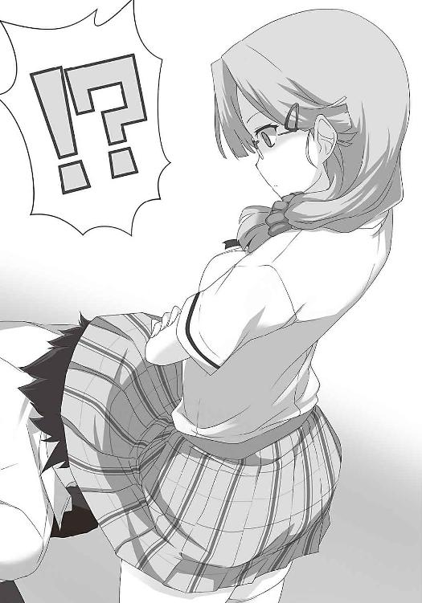
浦橋さんは冷静に一歩後ずさりし、リュウジの頭をスカートから出す。そして何も言わず、リュウジの顔を足の裏で思い切り蹴った。テニスで鍛えた脚力が、リュウジの顔面を砕いた。
リュウジの体は吹っ飛び、倒れ伏した。浦橋さんはリュウジに近付き、顔をさらに蹴った。
リュウジは顔をかばいながら言った。
「せめて上履きを脱いで、汗の染みた靴下で頼む！」
彼はまだまだ余裕のようだ。浦橋さんの氷の顔が、少し歪んだ。
「この変態......死ね」
浦橋さんは、さらにリュウジの体を蹴った。蹴って、蹴って、蹴りまくった。力の限り蹴っていたことが、飛び散った血しぶきでわかった。
「落ち着け、ナオ！ それ以上やると、本当に死ぬ！」
近くにいた中崎さんが止めに入り、背後から押さえた。
「放してミイナ！」浦橋さんは怒鳴る。まだ怒りが収まらないようだ。
リュウジは鼻血を流しながら「申し訳なかった」と立ち上がった。
「しかしこの空を見てくれ」
リュウジが空を指差す。全員が見上げた。青空が広がる。窓から心地好い風が吹き込む。
「かつてガガーリンは言った。『地球は青かった』と。その言葉は今も名言として残っている。それは何故か。地球の美しさを、たった一言で表現したからだ。青という言葉の選択が、また素晴らしい。美しさを、より際立たせる。青は神秘的で幻想的だ。見れば心が透き通るように思える。だから僕らは青い空に思いを馳せ、青い海に心が躍る。だから僕も今、胸が高鳴っている。それはあなたの今日の下着がこの空と同じ青色だったからだ！ ありがとう！」
浦橋さんは、リュウジを窓から投げ捨てた。
「大変だ！ 人が落ちたぞ！」
大騒ぎになった。
浦橋さんを見た。自分より二十キロは重いだろうリュウジを投げた彼女は、息を切らしていた。その顔は真っ赤だった。怒りと羞恥が混在しているように見えた。初めて見る顔だった。
だんだんと日は傾き、空は血のように赤く染まった。窓から夕日が差し込み、長い影を作る。
保健室のベッドには、リュウジが静かに横たわっている。目を閉じ、穏やかな顔をしていた。俺はその横の椅子に腰掛けていた。
窓から落ちたとき、リュウジは脳震盪を起こしたらしく、意識を失った。俺は体を担ぎ、保健室まで連れてきた。それからずっと、リュウジは目を覚まさない。顔の至るところが腫れ上がり、鼻血はなかなか止まらず、今もティッシュを詰めている。あわや救急車という大惨事だった。
リュウジの顔は、痛々しかった。
ふと、心に迷いが生じた。
これで良かったのだろうか。
リュウジはボロボロになった。そしてこれから、女子寮への出向を命じられる。
友達がこんな姿になるのを見るのは、辛かった。
「なあリュウジ、これで良かったのか？」
声をかけたが、リュウジは静かに目を瞑っている。不意に目頭が熱くなり、洟を啜った。
「何とか言ってくれよ！」
「酷い顔をしているな」
声がした。見ると、リュウジの目が開いている。
「起きていたのか」
「少し前からな」
リュウジはぼんやりと天井を見ていた。
「偽物の漫画を手に入れること。それは、ジュンの無実を証明することにも繫がる。あいつを助けられるのは、俺たちだけなんだ」
「そのせいで、お前はこんな目に」
「友達を助けるため、いちいちそんなことを考えるのか？ マサミチが冤罪で捕まったとき、一人で罪を被った。あのときのお前の気持ちがわかったよ」リュウジは少し微笑んだ。「それに後悔はない。むしろ清々しさすら感じる。良いものが見られたから」
「何だ？」
「浦橋さんのパンツだ！」リュウジは力強く言った。「今日の空の色を、俺は一生忘れない！」
「お前は最高の仕事をした。それはお前の犠牲に対する、せめてもの報酬だ」
「しかしうまくいかないものだな。着ている服を褒めたのに、喜んでもらえなかった」
それから、俺たちは語り合った。まだ何の穢れも知らなかった時代から、今日までの歴史。
また涙が流れてきた。
「マサミチ、お前の顔は、見れたものじゃない」
「今のお前には、言われたくないよ」
保健室に、笑い声が響いた。
日が明けた。そして、リュウジは逝ってしまった。現行犯だから、釈明の余地はなかった。
俺は一人、涙に暮れた。だが泣いてばかりもいられない。有沢先輩の移送は明日だ。今夜が勝負なのだ。
俺は一度家に戻り、ジュンから預かった変装セットを持ってきた。そして女子寮傍の公園で待機していた。制服を売る店は、すぐ近くにある。
夕方、一人の女子が俺の傍に駆け寄ってきた。ジュンである。予定通りの時間だった。
「二人とも......何考えてるんだ」
「ジュンを助けるためだ。お前を見捨てることなんて、できるはずないだろ」
「馬鹿野郎......そのせいでリュウジが犠牲になったじゃないか」
「リュウジに教えられた。何もしない後悔は、気持ちをすり減らすだけだ。何も得られない。やってから後悔した方がいい」
「何でそこまで」
「友達だからだ！」
ジュンは俯き、固く目を閉じた。
「それで、ジュンが来たってことは、資料室への侵入ができるってことだな」
「うん。窓の鍵を開けておいた」
リュウジとジュンは資料室前の廊下を掃除していた。そのときうっかり資料室の前に置いてあったバケツを、ひっくり返してしまった。資料室の前が水浸しになった。資料室の中にも、水が入ってしまったかもしれない。リュウジは柏葉先生を見つけ、事情を説明する。
「馬鹿者！」先生は怒鳴った。そして鍵を借りた。「終わったら、事務室に返しておくように」
そして資料室に入り、窓の鍵をこっそり開けた。リュウジの計算通りだ。
「そのときに探せなかったか？」
「無理だ。女子も結構帰ってきて、人の通りがあったし。そもそも、先生が定期的に見回りに来るんだから。それに、資料は意外と多かった。簡単に探せるとは思えない。だからマサミチに頼るしかない」
「元よりそのつもりだ。脱走、見つからなかったよな？」
「大丈夫だ。窓から出て来た。表玄関だと知り合いに会う危険もあるからね」ジュンは園内の大時計を見た。「とにかく時間がない。夜の点呼に間に合うよう戻らなきゃならないから」
俺も時間を確認する。五時三十分。点呼は六時だったはずだ。残された時間は少ない。
そのとき、あることに気付いた。「どうかした？」不審に思ったのか、ジュンが声をかける。
「いや、何でもない」俺は首を振り、ジュンに財布を渡した。
「そう。じゃあ行ってくる」
ジュンは走り出した。その後ろ姿を見ながら、今気付いたことを思い出していた。
関係ないと言えば、その通りだ。しかし俺は、一抹の不安を拭えなかった。それはまるで、靴の中に砂が入ったかのように、俺の心を乱していた。
今日は十三日の金曜日だったのである。
公園の公衆トイレに入る。そしてこっそり拝借したお母さんのブラを着け、中にスポンジを詰め、手に入れたブラウス、リュウジ特製スカート、黒ストッキングを身に着ける。次にジュンの手解きを受けながら、顔の無駄毛を抜き、軽くファンデーションをはたく。唇には透明なリップグロスを塗る。さらにウイッグを被る。
「ほら見ろ！ どこからどう見ても、女の子だ！」
自分で自分を見て、驚いた。奇妙に美人だった。何だか変な気分だった。
名刺ほどのサイズの紙を出した。生徒手帳の、偽造身分証だ。写真を剝がし、名前の欄は、別の名前を印刷した紙を貼り付け、コピーを取ったものだ。今は写真だけ空欄になってある。
俺たちは近くの本屋でスピード写真を撮って貼り、偽造生徒手帳を完成させた。即席だが、一瞥した程度でわかるほど、杜撰な作りではない。
「ここまでしたんだ。成功させるぞ」
俺は言った。ジュンも頷く。もう後戻りはできない。決行は、今夜だ。
鏡を見て、リボンを直す。一つ深呼吸をした。
自分の姿に疑問を持ってはいけない。俺......いや、私は女だ。私はこの学校の、何の変哲もない一生徒。目立つことも隠れることもない、どこにでもいる凡庸な女子。
自分に暗示をかけ、歩き始めた。
やがて、女子寮が見えた。清潔感のある白い建物、その姿は変わらない。玄関は、俺たちを飲み込もうとしているかのように、開け放たれている。
女子寮までの道は僅か数分だったが、辛かった。近付くにつれて、瘴気が濃く漂ってくるように思えた。気分が悪くなる。足がもつれ、転倒もした。
一度、ジュンを見た。ジュンも俺を見る。
深く息を吸い込み、心の中で「よし」と唱えた。
俺は拳を突き出す。ジュンも拳を作り、お互いに合わせた。
そして俺たちは、女子寮へ乗り込んだ。
乾坤一擲の、大勝負の幕が上がった。
11 白い魔女のアギト
時刻は五時五十分。ちょうど部活終わりの生徒が、多く帰ってくる頃だ。建物の中が、騒がしくなり始める。
門限は九時。それまでに作戦を遂行しなければならない。
敷地に入って右に曲がる。資料室へ直接向かう。窓が開いているのだから、そこから入れば良いのだ。それに表玄関は通りたくない。生徒手帳は偽造したが、絶対にばれない保証はない。
「そこの二人」
思わず顔を上げた。玄関の前で、見張りらしい先生がいる。しかし、先生が見ているのは、俺たちじゃない。玄関から逸れて、脇に歩く他の生徒だった。
「どこに行くんだ？」
「あ、はい。園芸部の者です。花壇の手入れをしに行くところです」
不審者が敷地内をうろうろしないための対策だろう。逃げれば変に波風立てることになる。
「ジュン、どうする？」
「仕方がない。玄関から入って、一度、男子部屋へ行こう。そして窓から抜け出す」
玄関から中に入る。受付には一人のお姉さんが座っている。軽くお辞儀をし、先に進む。
「そこの二人、ちょっと待て」
お姉さんが、声を上げた。今度は間違いなく俺たちだ。
来たぞ......最初の関門......乗り切れるか。俺たちは呼吸を整え、ゆっくり振り返った。
「二人とも、寮生じゃないな？ 手続きを忘れてるぞ」
受付の横に貼り紙がしてある。
『寮生ではない者が入るときは、生徒手帳、もしくは身分証を提示すること』
俺たちは、偽造生徒手帳を見せた。大丈夫のはずだ。しかし心臓が張り裂けそうだ。
お姉さんは、俺たちのクラスと名前をメモした。
「ここに来た目的は？」
「友達と会うためです」
ジュンが言った。ジュンの声色なら、ごまかせる。
「門限は九時だから、それまでに帰るように」
俺たちは一礼し、奥に進んだ。完璧だ！
まず男子部屋へ向かう。そして窓から抜け出し資料室へ向かう。一番危ないのは、知り合いに会うこと。毎日顔を合わせている中崎さんや浦橋さんは、俺たちを見抜くだろう。
「おい......前」
ジュンが小声で呟いた。俺は視線を向けた。前から歩いてくる人影を見て、背筋が凍った。
都筑会長だ......！ 会長がこっちに向かってくる......！
思わず目を伏せた。どうする......？ この廊下は一本道だ。横道に逸れることはできない。
それならば引き返すか。いや、それはもっとまずい。「自分は怪しい」と自分で言うようなものだ。それでなくても、ただでさえ奇妙な背恰好なのだ。呼び止められて、捕まるかもしれない。走って逃げようものなら、かえって騒ぎになるだろう。
徐々に会長との距離が縮まる。
こうなったら、一介の生徒の顔をして、横を通るしかない。きっとそれが最善だ。
胡乱な態度をとるな。視線は前に向けろ。堂々としろ。何もやましいことなどない。
ふと、会長が立ち止まった。じっと、こっちを見ている。しかもその目は、俺の全身を見ているようだ。あれは絶対に、疑っている目だ。
（随分と大きい生徒だな......うちの制服のようだけど、あれは誰だ？ あんなに目立つ生徒、一度見たら、覚えていそうなものだけど......見覚えがない）
目は口ほどに物を言う。心の声が聞こえてくるようだ。
しかし動揺を顔に出してはいけない。挙動不審になるな。俺たちの女装は、簡単に見破れるものではない。
俺たちは何食わぬ顔をして会釈をし、すれ違った。
視線を感じる。間違いない。依然として会長は俺を見ている。しかし何も言わない。
よし......何とかばれてない。急げ。一刻も早く、会長の目の届かないところに行くんだ。
俺たちは早足で、会長から距離をとった。そして、
「そこの二人、止まりなさい」
会長は言った。
心臓が、破裂しそうなほど脈打つ。脳が熱い。唇を嚙んで、意識が飛ぶのは何とか防いだ。こんなところで倒れるわけにはいかない。
振り返る。会長は俺を睨み続けていた。何がまずかったのか、わからない。俺は恐怖に戦きながら、会長の言葉を待った。
「大きい方のあなた。それは何だ？」
会長はゆっくり視線を下げ、俺の足を指差した。
「何でそんなものを穿いているんだ？」
ぞわりと総毛立った。穿いている。間違いなくスカートのことだ。リュウジお手製のスカート......これが市販のものと違うと見抜かれたんだ。目ざとい人だ。ここが手作りの限界だ。
ふと、リュウジの姿が脳裏を過ぎった。彼は笑顔で自信作のスカートを高々と掲げていた。
会長の鋭い眼光が、俺を射竦める。
きっと会長は、俺たちのクラスと名前を確認するだろう。すまないリュウジ......作戦は終わった。俺たちは捕まる。しかも変態の烙印を押される。ああ、短い人生だった。
「そのストッキング、右足が伝線しているぞ」
......ストッキング？
自分の足を見た。確かに右足の膝が破れている。
会長はそれ以上、何も言わない。会長が指摘したのは、これだけだった。
会長が見ていたのは、ここ？ 気付かれては......いないのか？ ならば、逃げるしかない。
俺は軽く礼をし、小走りで近くのトイレに逃げ込んだ。会長が追ってくる様子はなかった。
個室に入り、大きく息を吐いた。安堵感が心を包む。
ここに来る途中のことを思い出した。破れたのは、緊張に耐えられず転んだときか。きっとあのとき、膝の部分に負荷がかかったのだろう。
とにかくこれを穿いてはいられない。俺はストッキングを脱いだ。
スベスベの足が姿を現した。剃っていたら青かったかもしれない。先見の明に自画自賛した。
しかしリュウジの会心作は素晴らしい。誰一人、気付かない。ストッキングの伝線は想定外だったが、計画が破綻したわけではない。むしろ、成功の兆しがある。自信が溢れてきた。
トイレから出て、ぞっとした。まだ会長がいたのだ。こっちを見ている。その目は、炯々としている。怪しまれているに違いなかった。
自らを叱責する。成功するそのときまで、気を抜いてはいけない。
俺たちは足早にその場を去った。
男子部屋に入った。突然の闖入者に、室内の空気が固まる。しかし、リュウジが言った。
「お前、マサミチか？」
俺は頷く。そして固く抱擁を交わした。流石は長い付き合いの友だ。一目で俺だと見抜いた。
周囲の先輩たちも、安堵の表情を浮かべる。
「聞いてるぞ、藤次から。まったく、とんでもないことを考えるもんだ」
「有沢先輩がいませんね」
「あいつは別の部屋に隔離されてる。情報のやり取りがあると、まずいってことだろう」
それはそうかもしれない。
隣でジュンが、大慌てで着替えている。点呼の時間が迫っている。
「俺たちは応援することしかできないけど、頑張ってくれ。健闘を祈る」
破れたストッキングはここに置き捨て、窓から外を見渡す。ここからなら正門の死角になる。しかも今は誰もいない。チャンスだ。
急いで外に飛び出た。扉が開き柏葉先生が姿を見せたのは、その直後だった。間一髪だった。
資料室に向かった。地図は頭に入っている。
ある窓の前で足を止める。窓に触れる。動く。予定通り鍵は開いていた。中には誰もいない。
ガラス窓を開く。ついに足を踏み入れた。棚は三十架ほどあるだろうか。ちょっとした本屋くらいある。すぐに探索に取りかかる。
棚を調べる。背表紙には様々なタイトルが付けられている。『下着泥棒』『更衣室覗き』など、様々だ。随分と数がある。社会の歪みの結果が集まっているのだろう。並び順はジャンル別のようだ。しかしタイトル数が多すぎる。
とにかく探す。上から順に目で追う。しかしエロ本のファイルが見つからない。
時間ばかりが過ぎていく。次第に外は暗くなり始めた。時刻はすでに、七時になろうとしている。ファイルの文字が読み辛くなってきた。作業効率が下がる。
電気を点けたい。しかしそんなことをすれば、中に誰かがいるとわかる。ドアは磨りガラスになっている。今は中の様子は見えていないはずだ。しかし明かりは外に漏れるだろう。
暗くなる前に見つけ出すんだ。しかし見つからない。焦りが募る。
やっとのことで、猥褻本が並ぶ棚を見つけた。急いで背表紙の日付をチェックする。そして最新の日付のファイルを取り出した。おそらく、これだ。俺は大慌てで中を確認する。ついに、新聞に載っていたものと、同じページがある漫画を発見した。
ほっと息を吐く。後はここから脱出するのだ。
そのとき、ガチャリと資料室の鍵が開いた。
慌ててファイルを棚に戻す。そして棚の陰に隠れる。棚の隙間から、様子を窺う。
入ってきた人影は、電気を点けた。そして肝を潰した。
柏葉先生だったのだ。
俺は両手で、口を塞いだ。柏葉先生は、たった今まで俺が探していた棚に手を伸ばす。
「これだな、有沢の馬鹿野郎の漫画は」
先生は、ファイルの中を軽く確認し、頷いた。
俺はほぞを噬んだ。明日、先輩は移送される。そのための準備だろう。
そのとき先生は「ん？」と首を傾げた。
「いつもの資料室よりも、空気が淀んでいない......。温かい気がする......。もしかして、誰かいるのか？」
金鎚で殴られたような衝撃だった。なんて敏感なんだ......。
先生は悠然とこっちに歩いてくる。俺の姿が見えているのかとすら思えた。姿が見つかれば、もはや釈明の余地はない。どうする。人生の終焉が迫る。
『緊急連絡！ 緊急連絡！』
突如、アナウンスが鳴り響いた。会長の声だ。先生も俺も、思わずスピーカーを見つめる。
『寮内に不審者が少なくとも二名侵入した！ 受付で偽名を使った模様！ 二人はうちの高校の女子制服を着ているが、目的は不明！ 直ちに捜索を開始せよ！』
「何だと！」先生は叫んだ。
唇を嚙んだ。やはりあのとき、疑われていたのだ。きっと受付の名前と、生徒名簿を照らし合わせて、存在しない生徒だとわかったのだ。
『不審者の一人は長髪でストレート。身長が一七〇センチはある。そして黒いストッキングを穿いていた。だが右足が伝線し、それを脱いでいた。だから、おそらく素足のままではないかと思われる』
戦慄が体を駆け抜けた。確かに俺は素足だった。会長の言う通りだった。靴下を持ってくるべきだった。何故この状況を想定しなかったんだ。
迂闊だった。だが嘆いている場合ではない。どこかで靴下を手に入れなければならない。
ふと、先生を見た。そして、ぞっとした。
先生は憤怒を露わにした、鬼の形相になっていた。
その顔のまま、部屋を出て行った。漫画は持ち出されてしまった。
一人になった。ようやく、落ち着いて呼吸ができた。
一番聞きたくなかったアナウンス。そのアナウンスに救われるとは、皮肉なものだ。
しかし今のアナウンスだけでは、絞り込みが難しいだろう。同じような背恰好の女子は大勢いる。まして男子がいるとは、流石の会長も想定外のようだ。
とにかく靴下だ。ジュンのおかげで、完璧な女に化けている。これからどこかで靴下を手に入れれば問題ない。それから柏葉先生を探る。
そうだ。男子部屋の誰かから借りれば良いんだ。男子の靴下を穿いていると見抜く人など、そうはいないだろう。男物でも女物でも、何か穿いてしまえば問題ない。
男子部屋に向かうと決め、窓から体を出し、慌てて引っ込めた。
すでに外は、人だらけだ。見回っている。しかし今ならまだ、紛れることができるか......。
そのとき、近くにいた二人組の女子が言った。
「あれ？ あそこ、資料室の窓が開いてる。もしかして、この中にいたりして」
「一応、調べておく？」
まずい！ 俺はドアから部屋を飛び出した。
俺は走った。靴下ごときで捕まるわけにはいかない。会長の推理力が憎らしい。
寮内は混乱した様子で、多くの女子が右往左往している。今ならば、ばれる危険も少ない。
それでも、足元を見られれば、怪しまれる。一刻も早く、靴下を手に入れなければならない。
寮内の地図を思い出す。今いるのはＢ棟一階。男子部屋は反対のＡ棟一階だ。しかし移動は危険すぎるか......。
そうだ。近くに洗濯室があったはずだ。一足くらい落ちているかもしれない。
俺は急いで、洗濯室へ向かった。
やがて洗濯室が見えたとき、向こうから見覚えのある人が現れた。会長だ。どうする......。
横を見た。そこは階段だった。まだ運はある。その陰に素早く身を隠した。
「何をしている！ 早く不審者の捜索に回れ！」会長は洗濯室を覗き、怒鳴った。
中から二人の生徒が出て来た。
「早く干さないと、明日の朝までに乾かないのに」
「もう最悪」
「私だって、腹が立っている。二人は向こうを頼む。私はこっちに行く」
俺は焦った。会長が歩く方向は、まさに俺がいる方向だったからだ。
もう洗濯室へは向かえない。それどころか距離が縮まっている。会長は、唯一俺の姿を知っている。出くわせば、一巻の終わりだ。
逃げるしかない！
俺は階段を上った。二階まで一気に駆け上がる。そして下を見て、絶句した。とんでもないことに、会長まで階段を上り始めたのだ。まるでその嗅覚が、俺を察知しているかのように。
距離をとらなければ......。
俺は三階へ、さらに上ろうとした。しかし踊り場まで来たとき、体は固まった。
三階の廊下に、腕組みをした武藤先輩が立っていたのだ。先輩は周囲を見回し、横を通り過ぎる生徒の顔と足下を、一人一人チェックしている。これでは駄目だ。三階に行けない。
俺は階段を引き返した。その直後、上から足音が聞こえた。見上げて、混乱した。武藤先輩も階段を降り始めたのだ。コツコツと、ゆったりした足取りで降りてくる。
そして下から聞こえる会長の足音は、だんだん大きくなっていく。
上と下から挟まれた。もう階段は使えない。
とりあえず二階に降り立つ。
どうする。階段は、廊下の端にもう一つある。そっちに走るか。
しかし、向こうに行ったところで、靴下がないこの状況下では、見つかるのは時間の問題だ。今のまま逃げ続けるのは不可能だ。まずは手に入れなければならない。
しかしとにかく、この状況から脱出しなければ！
躊躇している時間はなかった。誰もいないと祈るしかない。向こうの階段に行こう。
腹を決め、走り出した。しかし、すぐに足は止まった。
向こうの階段に、動く影が見えた。間違いなく誰かが上っている。
三方から挟まれた。もはや逃げ場はない......もう駄目だ......。
そのとき、ドアが少し開いている部屋を見つけた。明かりは点いていない。ドアがちゃんと閉まっていないのは、この騒ぎで慌てて飛び出したからだろう。ならば人が戻る危険は少ない。
もう考える余裕はない。俺はその部屋に飛び込み扉を閉めた。足はガチガチと震えていた。立っていられず、その場にしゃがみ込む。しかし冷静に、耳をそばだてる。
「あ、会長。見つかった？」
「見つからないね」
「向こうに行ってみようか」
そのまま二人の気配は消えた。ほっと、安堵の溜息をつく。そして明かりを点けた。
部屋の奥には窓。その手前に二つの机が並んでいた。片方は可愛らしい小物や、小さなぬいぐるみが置いてある。もう片方は整然としている。右際には二段ベッドがある。女子部屋は、二人ずつのルームシェアになっているようだ。そして左の壁には、クローゼットがある。
罪悪感を覚えた。しかし背に腹はかえられない。俺はクローゼットを開けた。そしてそこに備え付けられている衣装ダンスの引き出しを開けた。
服が綺麗に畳まれて、並んでいる。Ｔシャツ、スカート、それから......下着だ。
思わず唾を飲み込んだ。
俺たちが必死になっても、なかなか見ることができないもの。それが今、目の前に......。
少し広げて見......違う！ これじゃただの変質者じゃないか！ 俺には偽の漫画を入手し、冤罪を証明するという高尚な目的があるのだ！ 俺が探しているのは靴下だ！
俺は邪念を払うように、頭を振った。下着をなるべく見ないようにし、再び、タンスの中を捜索する。そして、一番下の段の隅にしまわれている黒い靴下を見つけた。
少し気持ちが落ち着いた。これでひとまず大丈夫だ。寮の中を歩ける。
ストッキングは間違いだったのか。下手に策を弄せず、単純に靴下にすべきだったのか。
とにかく反省は後だ。今はこの靴下だ。
すみません、この部屋の人......。もし可能ならば、洗って返しますから。
心の中で謝りつつ、俺はその靴下を手に取った。
そのときだった。ガチャリと金属音がした。ドアノブの音だった。
一気に心臓が高鳴る。
「あれ？ 電気点いてる」この部屋の主が小声で呟く。そして、ギシギシと軋む足音。
やばい......隠れなければ......。
クローゼットのドアのおかげで、俺の姿は見えていないのだろう。隠れるなら今しかない。
しかしどこに......。少しでも動けば見えてしまうというのに......。この狭い部屋、どこにも身を潜められる場所がない。
必死で考えを巡らせる。しかし何も閃かなかった。
俺はタンスの前でしゃがみ、膝を抱えた。体を小さくすることしかできない。
足音と共に、彼女が部屋に入ってきた。歩く振動が足の裏から伝わる。徐々に近付いている。
額に汗が噴き出し、頰を伝う。背中にブラウスが張り付く。
背後に人の立つ気配がした。そして彼女は言った。
「ナオ、まだ部屋にいたんだ」
中崎さんの声だった。
12 命を懸けるに値すること
混乱した。何故中崎さんがいる？
「誰かが侵入したんだってな。ゆっくりお風呂にも入ってられないよ」
彼女は言った。改めてその声を理解する。やはり間違いない。中学時代から聞いている声だ。振り向いて確認するまでもない。もっとも振り向くなんて、怖くてできない。
何故こうなったか。理由は一つしかない。
とんでもないことに、この部屋は中崎さんと浦橋さんの部屋だったのだ。同じクラスだからルームメイトなのだろう。しかし今、そんな情報は役に立たない。
よく見ると、見覚えのあるパンツがあった。クマさんがプリントされたものだ。
中崎さんは、部屋の奥に進み、窓を開けた。夜風が吹き込み、背中の汗が冷たく乾く。
「良い風だな」
それどころじゃなかった。
「さっきさ、お風呂で御厨先生と一緒になったんだけど、先生、ずっと私のこと見てんの」
御厨先生と中崎さん。資料室にいた頃、二人は裸だった......よこしまな考えが頭を過ぎる。
「御厨先生に『背中流してやる』って言われてさ。嫌な予感したけど、頼んだら、やっぱし胸揉まれた」
なんと素敵な光景だろうか。
「あのさ......前に言わなかったんだけど......私って、いつか柏葉先生みたいになるんだって。何か信じらんないけど。そのこと柏葉先生に話したら『肩が凝るぞ』だって。一回だけお風呂で先生の胸見たことあるけど、やっぱしすごいよ、あれは。ナオは見たことある？」
俺は小さく首を振った。
「そしたらアナウンスが流れてさ。先生は『面白い奴が......いるもんだ......チヒロは今頃......どんな顔をしているか......おお......怖い』ってニヤニヤしてた。私も想像して、ぞっとした」
刹那、さっきの柏葉先生の顔を思い出し、俺の脳は現実に戻った。最大の難敵。しかも漫画は先生が持っている。どうやって奪還するか......捕まったら何をされるか......考えたくもない。
しかし今はこの状況だ。どうやって打破するか......。
「ちょっとどいて。服取るから」
中崎さんが近付き、俺の真横にしゃがむ。まだ乾ききっていない髪から、甘い香りがした。
俺は動くことができず、顔を伏せ、その場でじっとしていた。中崎さんが、視界の端に入る。水玉模様の服がちらりと見えた。あれはパジャマだろうか。もう寝る準備をしていたようだ。
「この恰好じゃ、流石にうろうろできないし。それにノーブラじゃ怒られるからね」
ノノノノーブラだと！ 俺は耳を疑った。
僅かな横の視界では、その真偽を確かめることができない。しかし中崎さんは、タンスからＴシャツとジャージ、そしてブラジャーを取った。
「あれ？ その靴下、私のだよね？ どうかした？」
俺は小さく首を振った。「そう？」とだけ中崎さんは言い、背後に移動した。
そして後ろから、衣擦れの音が聞こえ、パサリと布が落ちる気配がした。
もしかして、上着を脱いだ......？ そして下着を着けていないという......。
じゃあ、今、中崎さんの上半身は裸だというのか？ 振り向いたら、中崎さんのおっぱいを見ることができると言うのか？ 将来、柏葉先生に匹敵するほど魅力的になると、お墨付きをもらった体を見ることができるというのか？
そこに風が吹いた。
「体に直接風が当たると気持ちいいよね......はあ......またブラ着けなきゃいけないのか」
見たい！ 見たいぞ！ 何も難しくない！ 首を百度くらい捻るだけじゃないか！
千載一遇の大チャンス！ またとない好機！ 急がねば中崎さんはブラを着けてしまう！
生まれて初めて女性のおっぱいを......。
しかし思いとどまった。絶体絶命のこの状況。いつ捕まっても、おかしくない。そのとき、おっぱいを見たという罪まで加われば、俺はどうなる。
考えるまでもない。先生に突き出される前に、この場で殺される......。
それでも見たい......ほんの少しでいいんだ......。しかしそれは、裁かれる前の死を意味する。
煩悶した。どっちだ。欲望か死か。見て捕まれば殺される。見ないで捕まれば......。
......どちらにしても中崎さんに殺されるじゃないか！
そこで思考は止まった。ふっと笑ってしまった。絶望を通り越し、諦めの感情が生まれた。
そうだ。俺はもう助からない。戦いは終わったんだ。俺はここで死ぬ。どうせ死ぬのなら、最後に幸福を受けてもいいじゃないか。冥土の土産というやつだ。
俺は吹っ切れた。そして首をゆっくり動かした。視界の端に、中崎さんが入る。
もう少し、もう少しだ。
「しっかしさ」
突然、中崎さんが口を開いた。ドキリとして、思わず顔を背けた。
「その犯人、何でこんな馬鹿なことしたんだろうな」
中崎さんは言った。その瞬間、今日までの苦労が、走馬灯のように脳内を駆け巡った。
そして自分に対して、怒りが込み上げた。
俺は何を考えているんだ！ 何を諦めているんだ！ もう助からない？ それは中崎さんのおっぱいを見るための言い訳じゃないのか？ 見たいという欲望は捨てろ！ 真の目的を思い出せ！ これで全てを台無しにするのは、死よりも恐ろしい裏切りだ！ 大義を忘れるな！
己の愚かさを恥じ、叱責した。そして強く拳を握った。爪が手の平に刺さる。痛みが理性を取り戻させる。危なかった。おっぱいに惑わされて、自分を見失っていた。
重要なのは、いかにおっぱいを見るかではない。いかにここから脱出するかだ。
状況を整理する。中崎さんは、服を着替えている。そして俺を浦橋さんと勘違いしている。ならば「私は先に行く」という雰囲気で、外に出てしまえば良いのではないか？
そうだ。これしかない。他の方法はない。
しかし、どのタイミングで行く？ ドアに向かえば、間違いなく、中崎さんの視界に入る。しかも俺と浦橋さんは、体型がまるで違う。別人だとばれる。今ばれていないのは、おそらくしゃがんでいることと、先入観によるものだろう。しかし、立ち上がれば違いは歴然だ。
脱出は難しい。後ろには裸の中崎さん。どうすればいい......。
「そう言えば、ここんところ、男子が騒いでるでしょ。この前捕まった先輩が、冤罪だって。昨日さ、リツカに言われたんだよね『もっと話を聞くべきだ』って。それでさ......」
中崎さんは、躊躇いながら言った。
「私さ、柏葉先生に頼んでみようと思ってるんだ。柏葉先生って、すごく真面目な人だから、冤罪は許さないと思うんだよね。ほ、ほら、比嘉たちってアホだけど、一応、知らない仲じゃないし。私も曲がったことって嫌いだし」
目頭が熱くなった。それが中崎さんの本音なのか。それに門倉さんも、そんなことを言ってくれるなんて......。俺はこんなところで何をしているんだ。
「ナオはどう思う？」
突然意見を求められ、心臓が激しく鼓動した。何も答えられるわけがない。
動悸がする。汗が流れる。緊張で死にそうだ。
「どうしたんだ、ナオ？ さっきから黙って。具合が悪いのか？ そんなに震えて。熱があるんじゃないか？」
話し相手の異変を気遣い、中崎さんがこっちに近付く。
やめてくれ！ 来ないでくれ！ 必死で願った。
しかし中崎さんは、俺の後ろに座った。そして背後からそっと手を伸ばし、俺の額に優しく触れた。その指は、柔らかくしなやかな女性の指だった。何だかドキドキした。
「熱っ！ それに汗だくじゃないか！ 脈も速いみたいだし！」
中崎さんは立ち上がった。
「待ってろ。今、医務室から薬をもらってくるから......と、その前に服を着ないと」
チャンスだ！ 中崎さんが部屋を出たら、俺もすぐに、ここから逃げる。中崎さんの好意を踏みにじるのは心苦しいが、これしか方法はない。
一縷の望みが見えた。心が興奮する。希望が出てきた。
そのとき、ドアが開く音がした。
「やっぱり部屋にいた。って、ミイナ！ なんて恰好してるのよ！ 胸丸出しで！」
怒鳴り声が響き、そして全身から血の気が引いた。間違いない。本物の浦橋さんの声だ。
「早くブラを着けなさい！ 侵入者を探しに行くんだから。アナウンス、聞いてるでしょ？」
「え？ あれ？ えっと......」
やばい！ やばいやばいやばい！
「何よ、変な顔して」
「お前......ナオ......か？ ナオ......だよな？」
「何言ってるの？ 寝ぼけてるの？ 私に決まってるじゃない」
「う、うん......いや、そうだよな......それじゃあ......」
俺は目を硬く閉じた。誰か！ 誰か助けてくれ！
「あれは......誰だ？」
誰か──。
13 思わぬ誤算
二人が鉢合わせした。状況は最悪だ。もう、ごまかせない。
考えろ！ 頭を働かせろ！ 逃げ道はないか！
唯一の出入り口、ドアの前には中崎さんと浦橋さん。突き飛ばして強行突破か？
だが顔を見られるかもしれない。それに中崎さんに押さえ込まれるかもしれない。
どうする......どうする......何も思いつかない。
「きっとあいつよ！」
浦橋さんの怒号が響く。もう......おしまいだ......。
死を覚悟した。止め処なく汗が噴き出す。汗だくの顔に涼しい風が当たった。窓からの風だ。
窓？
そうだ！ 窓があるじゃないか！ あそこから脱出できる。ここは二階だ。落ちても怪我は少ないはずだ。それに目の前に、木がある。あれに摑まれば。
もう迷う暇はない。少しでも可能性のある方に賭ける。靴下を握る手にも力が入る。
死を覚悟するなら、生きることに全力になれ！
「おい！ お前！ 何者だ！」中崎さんが怒鳴り、近付く。
その瞬間、俺は立ち上がった。そしてダッシュし、窓枠に足を掛けた。
思ったより、地上までは高い。足がすくむ。しかし止まるな！ 足を踏み出せ！
うおおおおおおお！
俺は窓から飛び出した。太い枝に摑まろうと、手を伸ばす。しかし、うまくいかなかった。
枝を摑み損ねた。俺の手は木の表面を擦っただけだった。バランスを崩した体は、枝を折りながら落下した。腰を打った。苦痛に顔が歪む。しかしふらふらと立ち上がる。何とか逃げる。
「畜生！ 逃がすか！」
少し、振り返った。中崎さんが、窓枠に足を掛けていた。
「待ちなさい！ ミイナ！ その恰好で行く気！」
浦橋さんが中崎さんの胸を隠し、制止する。中崎さんは慌てて部屋の中に引っ込む。
「だからブラはちゃんと着けろって、いつも言ってるじゃない！」
「私はこれで寝るのが好きなんだよ」
「普段からそういう習慣にしてるから、大事なときにもたつくのよ！」
「んなこと、今言わないでくれよ！」
「私は先に行くから！ 早く服を着なさい！」
「待って！ ブラのホック嵌まんない！ 苦手なんだ。留めてくれない？」
「前で留めなさい！」
二人の揉める声が聞こえた。俺はその間に、遠くへ逃げた。
現場から離れた。少しの間、身を潜め、体を休める。まだ腰は痛いが、骨に異常はなさそうだ。どうやら打撲だけで済んだらしい。
ほっと安堵する。同時に申し訳なくなった。まさか中崎さんが、あんなふうに考えていたなんて。合わせる顔がない。これでもう、絶対にばれるわけにはいかない。
そして怖くなった。ここは危険だ。一秒でも長くいられない。すぐに逃げ出したかった。
しかし思い留まる。まだ目的は達成されていない。先輩とジュンの無実。リュウジが自分の人生を潰して、作ってくれたこのチャンス。無駄にはできない。俺に課せられた役目は重い。ここまで来て、何の成果もなく、帰るわけにはいかない。
自らを鼓舞し、決意した。
もう一度、入ろう。
俺は腹を括り、今奪った中崎さんの靴下を穿いた。
寮の中は慌ただしかった。しかし情報が錯綜しているらしく、俺の存在は誰の目にも映っていないようだ。それでも、油断はできない。知り合いに会う危険がある。中崎さん、浦橋さん、会長......。挙げたらきりがない。
周囲を見回し、注意を払った。全員が俺を探しているから、きょろきょろしても目立たない。
廊下の角を曲がったところで、ぎょっとした。慌てて身を引き、姿を隠す。柏葉先生がいた。
「先生、もう準備はいいんですか？」
「ああ。近くの奴らに伝えてくれ」
先生は首を回した。関節が鳴った。そして先生はニヤリと笑った。
「さあ、馬鹿野郎狩りを始めようか」
俺はそっと踵を返し、足早にそこを立ち去った。そして心に、再び恐怖心が芽生え始めた。
中崎さんたちから逃げ切ったことに安心し、すっかり失念していた。
一番の敵は中崎さんではない。柏葉先生だ。しかも証拠を持っているのだ。
そしてあの笑顔......。脳は冷静さを失い始めた。
俺は不審者を探す振りをしながら、寮内を歩いた。しかし不安だった。いつ自分がそうだとばれるか、恐ろしかった。
前から人が来れば、自然を装い、さっと横に逸れる。階段があれば、人がいなさそうな方へ向かう。上ったり降りたりを繰り返した。もはや漫画の探索どころではなかった。
Ｂ棟の五階まで来た。みんな出払っているのか、人の気配がない。ここは安全のようだ。
一度、深く息を吸い込んだ。まずは呼吸を整える。
緩やかに緊張が解けていく。これほどまで、心の平穏を感じたことはなかった。
気持ちも落ち着き、頭が働き始めた。ゆっくり廊下を歩きながら、考えた。
漫画は柏葉先生が持っている。これは間違いない。しかし、さっき見たとき、先生の手にファイルはなかった。つまり、どこかに置いてきたということだ。
資料室に返したか？ いや、わざわざ戻さないだろう。可能性は薄い。とすれば、事務室。もしくは先生本人の部屋......。
どちらにしても、奪うのは至難の業だ。しかし絶対に成し遂げるんだ。
自分に発破をかける。しかし......。俺は周囲を見回した。
問題なのは、この寮のドア。外には部屋番号しか書かれていない。つまり誰の部屋かわからないのだ。だから、うっかり中崎さんの部屋に入るようなことが起こる。判別する方法がない。しらみつぶしに探すしかないのだろうか。
俺はあれこれ思考を巡らせながら歩いた。何か良い案はないのか。
そして廊下の中ほどまで来たときだった。どこかの部屋から振動音が聞こえた。携帯電話のバイブレーションのようだ。
......携帯電話の音？
ふと違和感を覚え、思わず足を止めた。頭の中で、何かが引っかかった。俺の鋭敏な神経が、何かを告げている。この疑念の正体は何だ？
ぐるりと辺りを見回してみる。突き当たりの壁までが、やたら長く感じられる。まるで広い女子寮の中に、たった一人でいるように思えた。
その瞬間、微かな疑問が、脳裏を過ぎる。
静かすぎじゃないか......？
そこら中で、女子が大騒ぎしていた。しかしここには、誰もいない。突然女子の姿が消えた。足を止めたときから無音になった。考えてみれば、さっきから、俺の足音しか響いていない。
不意に寒気がした。この場面、記憶にある。昔見た映画だ。
その映画で、逃げた犯人を警察が追うシーンがあった。警察は、ローラー作戦を実行する。しかし、いくら厳重に網を張っても、犯人は一向に引っかからない。
そこで警察は、わざと一ブロックだけ、捜査を外した。安全な方へ逃げたい犯人は、自然とそこへ足を向ける。誘導されているとも知らずに......。
じゃあ、今のこの奇妙な状況、さっきの先生の会話は......。
全身の毛が逆立つように感じた。直感した。ここは危険だ。一刻も早く、逃げなければ！
俺は走ろうとした。しかし、足は止まった。向こうから、人影が現れたからだ。
「やっと見つけたぞ、侵入者」
柏葉先生だった。そして先生の後ろから、ぞろぞろと女子が現れる。
さっと血の気が引いた。顔面が蒼白になるのを感じた。あえて人払いをするのは、逃亡犯を追い込む常套手段だ。こんな簡単な策略に引っかかってしまった。俺は知らず知らずのうちに、追い詰められていたのだ。
「どうした？ 違うなら、違うと言ってみろ」
先生が睨む。俺は唇を嚙んだ。しゃべったら声でわかる。とにかく、逃げなければならない。
後ろを見た。こっちにはまだ誰もいない。
俺は先生に背を向けた。そして走った。
しかし、数メートル先の階段に、人の気配があった。廊下には出てきていないが、あの角を曲がれば、人がいるのだろう。
思った通りだった。十数人の女子が集まり、階段を埋めるように壁を作っている。先頭には、会長がいる。通過できる隙間はない。
「観念しろ」
会長が言った。
そのとき、不思議な感覚になった。その場の人数、距離感、全てがわかったのだ。
スポーツ選手には、その場を俯瞰するような感覚、ゾーンという状態があるという。まさにそんな感覚だった。その場の状況が手に取るように見え、考えるより早く、体は動いていた。死に直面した瞬間に目覚めた、野性の本能かもしれない。
俺は走ってきた勢いのまま、足を踏み切り、ジャンプした。
「飛び越せると思っているのか！」
勿論、高さが足りなかった。しかし、俺の狙いは違った。横の手すりだった。高さは腰より少し高い程度。俺には、すでにわかっていた。このくらいなら跳べる！
跳ねた俺は、手すりに足を掛け、さらに渾身の力で踏み切った。
そして俺は宙を舞った。その場の全員の頭上を、俺の体は越えた。
一瞬の出来事だった。全員が呆然と口を開け、俺を見上げていた。
俺は空中で風を切り、踊り場に着地した。さらにそこから、次々に階段を飛び降りた。
呆気にとられたのか、誰も追ってくる気配がない。今のうちに、少しでも遠くへ逃げる。
「待て！」
誰かの声が響いた。しかし俺は、足を止めない。そのまま一気に、一階まで降りた。
これからどうすれば良い。どこかに隠れるか。それとも人ごみに紛れてしまった方が、見つからないか。
はっきりしているのは、こっちのＢ棟は危険ということだ。まずはＡ棟へ逃げる。
渡り廊下を走った。
ふと、渡り廊下の真ん中に、ぬっと佇む黒い塊が、ぼんやりと見えた。
御厨先生だ......。
どうする。しかし止まるわけにはいかない。俺は先生の横を走り抜けた。
その瞬間、がっちり肩を摑まれた。
「待ちなよ......」
やばい......！
「へへ......侵入者ってのは......あんたかい？」
足が、ガクガクと震えた。先生は強引に俺の体を振り向かせ、顔を近付けた。そして俺を、舐めまわすように見た。
「んー......ヒヒヒヒ......おや？ ......オスだねえ......オスのニオイがするねえ......しかも......このニオイ......知っているぞ......」
性別どころか、俺の正体までばれた。恐ろしくなった。加えて、今の先生の髪型が、恐怖を助長した。さっきまでお風呂に入っていたという先生の髪は、いつもはボサボサなのに、今は綺麗にまとまり、真っ直ぐになっている。そして、相変わらず目が隠れている。そのせいで、四谷怪談に出てきそうな外見になっているのだ。
「ちょっと......こっちに......来なよ」
そう言うと先生は、肩を摑んだまま俺を引っ張り、中庭に連れ出した。恐怖のあまり、逃げるということは完全に頭から欠落した。俺はどうすることもできず、先生に従って歩いた。
「ほら......見てみなよ......」
先生は空を見上げた。俺も釣られて、空を見た。
「今日は......月が......綺麗だよ」
満月だった。まん丸で金色に輝いている。周囲に雲はなく、輪郭がはっきり見える。澄んだ空気が、月の美しさを際立たせているようだ。不思議と、神聖な気持ちになった。心が洗われていくように思えた。先生と一緒にいる時間は、何だか心地好かった。
「へへへ......無粋だね......みんな......こんな名月の日に......バタバタしてるんだから」
先生の言葉で、俺の心は、現実に引き戻された。そうだ、逃げなければならないんだ。
月を楽しむ気持ちは消え、再び乱れ始めた。
どうすれば良い。この場の正解は何だ。このまま先生に従うべきなのか、それとも、先生を突き飛ばしてでも逃げるべきか。どっちだ。
とにかく先生の意図がわからない。俺をこのまま、柏葉先生に引き渡すつもりなのか。
それとなく、先生の様子を窺う。先生は何も言わず、月見をしている。まだ少し濡れている髪が月明かりに照らされ、輝いている。なんだか艶っぽい。緑の黒髪という言葉が似合う。
そのとき、地鳴りのような足音が聞こえた。階段を駆け下りる音、走る音。
間違いない。俺を追ってくる音だ。ここまで響くとは......。かなり大人数だとわかる。
早く逃げなければ。
走り出そうとした。刹那、俺の肩を摑む先生の手に、ぎゅっと力が入った。
ぞっとして、思わず先生に顔を向けた。先生は何も言わない。表情もよく見えない。ただ、口はニヤニヤしている。
愕然とした。最悪の方だった。御厨先生は、こうやって時間を稼いでいたのだ。
全身から力が抜けた。一歩も動けなくなった。逃げることができなくなった。
御厨先生を疑いながらも、信じる気持ちが芽生えていたようだ。先生の飄々とした態度に、安寧を感じていたのだ。だから一気に奈落に突き落とされたように思えた。泣きたくなった。
おそらく単純な力業なら、先生に勝てるだろう。しかし、そんな気になれなかった。
柏葉先生が走ってきた。中庭に向かって、声を張り上げる。
「レイ！ こっちに逃げてこなかったか？」
絶体絶命だった。やはり強引にでも逃げるべきだった。
しかし御厨先生は、すっとＡ棟を指差した。
「ああ......向こうに走って行ったね」
驚き、先生の顔を見た。しかし、髪の毛で表情が見えない。
「レイはそこで何している！」
「月を......見てたんだ......この子とね......へへ」
「レイも協力しろ！」
「わかってるよ......もう少し......したらね」
柏葉先生たちは、走り去った。御厨先生は、悠々と背伸びをした。
「さて......私は部屋に......戻るかな」
先生は中庭から出て行く。そのとき、ちらりと振り返った。
もしかして、先生について行けば、教員部屋のある階に辿り着けるんじゃないか？
どういうことだ？ 味方になってくれているのか？
先生の意図がわからない。しかしこれしか方法はない。俺は先生の後ろを歩いた。
だが何故、ヒントを与えるんだ？ 御厨先生が俺を嵌めようとしている？
いや、それはおかしい。さっき逃がす理由にならない。
俺が後ろからついて来ているのは、先生も気付いているはずだ。だが先生は、特に気にした様子がない。もう残された道も時間もない。たとえ罠でも、ここは従うしかない。
そしてＢ棟四階に辿り着いた。この階が教員部屋になっているのか？
先生は、ある部屋のドアを開けた。自分の部屋だろう。そして右手の指で壁を「トントン」と二回叩き、中に入った。
俺は呆然と、それを見ていた。今のは何だ？ 何かの合図か？
右手で二回......。もしかして、二つ右隣の部屋が、柏葉先生の部屋なのか？
ここまで来たら、御厨先生を信じるしかない。
俺は二つ右隣の部屋をノックした。返事はない。ドアノブを回す。鍵は開いていた。しかし暗い。電気を点け、そして俺は、息を飲んだ。
ハンガーに、ブラジャーが干してあったのだ。ピンク色で、何かの花をあしらったデザイン。何より、サイズである。人の頭が、すっぽり入ると思えるほどの大きさ......。こんなクイーンサイズを使う人を、俺は一人だけ知っている。
ということは、やはりこの部屋は！
ここだ！ ついに俺は、この世で最も入ってはいけない場所に足を踏み入れたのだ！
早く探せ。長居はできない。
そのとき、机の引き出しが少し開いているのに気付いた。直感だった。不思議とそこに引力を感じ、俺の手は自然と伸びた。そして開けた。封筒が入っている。中を見て、震えた。
これだ......見つけた！
俺はその原稿を摑み、思わず抱きしめた。ついに奪取。無実を示す、唯一の証拠。
苦労は報われた。今までの辛い思いが脳内を駆け巡り、目頭が熱くなった。
しかし感傷に浸っている場合ではない。あとはここから脱出するのだ。
部屋を出ようとしたとき、再び自然とそのブラジャーに視線が行った。部屋に入り、最初に目に入ってしまうほどの存在感があるのだ。一度見れば目が離せなくなる。
いやいや待て待て、それどころじゃない。自分を見失うな。逃げ切るまで安心できないのだ。
名残惜しいが、ブラジャーから視線を外す。
しかしその姿を、しっかり脳裏に焼きつけ、電気を消した。
部屋を出た。辺りを見回しながら、慎重に、しかし素早く階段を下りた。
そのとき、スピーカーが音を立てた。そして会長が声を張り上げた。
『不審者は男！ 繰り返す！ 不審者は男とわかった！ 女装した男だ！ すでに靴下を盗み、逃亡中！』
唯一のアドバンテージ、性別がばれた。女装した男子となれば、見つかる危険がぐっと増す。
何故ばれた......。御厨先生が教えたのか......。そんなはずが......。
『犯人の目印は、穿いている下着だ！ 一部の女子が目撃した！ 不審者は男性用のボクサーパンツを穿いている！ 背が高くて、怪しい奴のスカートを片っ端からめくれ！』
頭を抱えた。何てことだ......パンツでばれるとは想定外だ。そこまで準備してない。見られたのはさっきジャンプしたときか......せめてブリーフにしておけば良かったのか......。
悔やむのは後だ。絶対にスカートをめくられてはいけない。会長も興奮して、すごいことを言い放っているが、それが最も確かな証拠だ。
とにかく階段を下りる。そのとき下から誰かが上ってきた。見えてしまうかもしれない......！
俺は何食わぬ顔で、廊下に出た。そのまま辺りを見回し、探す振りをして歩く。
通りかかった部屋の中から声が聞こえ、思わず足を止めた。会長の声だ。
「どうだ、いたか、園村？」
「いませんね。新聞部で培った私の第六感では、ここにはいないと思います」
聞いたことがある声だ。この世で最も聞きたくない声。園村という単語。もう園村先輩だ。
「園村の感覚って、結構当たるからな。他の場所を探すか」
二人が出て来る......！ 園村先輩はやばい。あの先輩は、きっと俺の女装を一発で見抜く。すれ違ってやり過ごすのは無理だ。どこかに隠れなければ......！
ふと目に付いたのは、廊下の隅にある、掃除用具をしまうロッカーだ。
俺はそこに飛び込んだ。
隙間から、二人が目の前を歩いて行くのが見える。俺との距離は、僅か五十センチ。
息を止めた。呼吸の音でも気付かれそうだ。針のむしろといえる場所。生きた心地がしない。
しかし何とか逃げ切れそうだ。
「ところで園村って、寮生じゃないよね？」
「ええ、違いますよ。寮生の部員から、連絡を受けたんです。こんなに面白いことが起こっているのに、ここに来ないわけないじゃありませんか。しかも全然見つからないなんて」
「そう。見つからないんだよなあ。総出で探してるんだけど」
「実は意外と近くに隠れているんですよ。例えば、このロッカーの中とか」
体が震えた。心臓にナイフを突き立てられたかと思った。
無常にも園村先輩の指が、取っ手に掛かる。これはもう......駄目だ......見つかる......。
「いた！ 向こうに逃げたぞ！」誰かが叫んだ。
「まあ。あちらでしたか」
園村先輩は言い、そしてバタバタと足音が遠ざかった。
誰と見間違ってくれたのかわからないが、助かった。
しかし、安心するのは早い。俺は耳を澄ませる。まだだ。まだ人の気配がある。息を殺せ。
ふと、視界の隅で、何かが動いた。モップが倒れていく......！
まずいと思ったときは、もう遅かった。
カタン、と音がした。
足音が、真ん前で止まった。間違いなく、誰かがドアの前に立った。
女子更衣室を思い出した。あのとき開けたのは御厨先生だった。だから何とかなった。だが先生は、自分の部屋に帰ってしまった。ここにいるとは思えない。だからこれは女子の誰かだ。
扉がギシと音を立てた。誰かが手を掛けている。
俺は目を閉じた。終わった......今度こそ諦めるしかない......。
徐々に扉が開き、光が差し込んだ。
「こんなところに隠れていたのか」
その声を聞いた瞬間、俺の心を縛っていた縄が解けていくように感じた。
俺は目を開けた。一人がそこに立っていた。
「ジュン......」
その名を口にし、目に熱いものが込み上げてきた。俺は思わず、ジュンに抱き付いた。
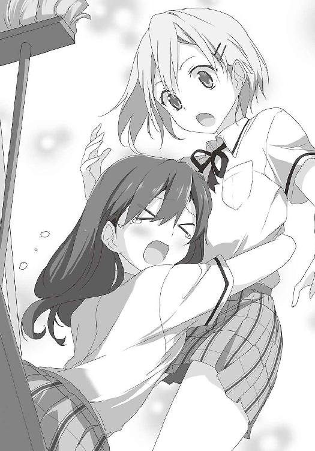
14 生きて友の下へ帰るんだ
「無事だったみたいだね」
「何とかな。さっき叫んだのは、ジュンか？」
「ああ。ロッカーに誰かが入る姿が見えてね。そんなことするの、マサミチしかいないでしょ」
「ジュンこそ、ここまで大丈夫だったか？」
「僕を舐めるなよ。女装は完璧だ。それに、友達のピンチに駆けつけない薄情な奴じゃない」
嬉しいことを言ってくれる。
「それで、肝心のものは見つかった？」
「おう。手に入れたぞ」
封筒を見せると、ジュンの目が輝いた。
「どこにあったんだ？」
「柏葉先生の部屋だ」
ジュンが絶句した。顔が恐怖に引きつっている。
「マサミチ、そんなところに入ったのか」
「結果オーライだ」
「何としても、逃げなきゃならないね」
「そう。あとは脱出するだけだ」
とは言え、それが一番大変だ。窓から外の様子を探る。正門の前は、大勢の女子でがっちり固められている。おそらく他の出入り口も、同じだろう。
しかし、一晩中立っているとは考えられない。交代のときを狙うか。しかし隙ができるだろうか。深夜か早朝に逃げるか。もしくは明日、みんなが学校に行くところに紛れ込むか。
くそっ。どうしたら良い。俺は頭を搔きむしった。
「一旦、男子部屋に引き上げよう。そこなら安全だ」
俺たちは男子部屋に向かい、しかしすぐに、身を隠した。
扉の前に柏葉先生と数人の女子がいたのだ。考えてみれば、男子とばれた以上、ここは一番怪しい場所だ。調べられないわけがない。
「不審者がここに来なかったか？」先生が言った。
「いえ、来ていません」答えたのはリュウジだ。
「飯沼がいないな」
「あいつはトイレです」
柏葉先生は、傍のトイレに向かって叫んだ。
「飯沼！ ここにいるのか！」
当然、返事はない。先生は中に足を踏み入れた。リュウジが制止する。
「せ、先生、男子トイレですよ」
「飯沼以外の男子は、全員ここにいるだろ？ 何か文句があるのか？」
「い、いいえ」
リュウジの声は、震えている。そして先生はトイレに入り、出て来て言った。
「誰もいないぞ」
「え？ 本当ですか？ どこに行ったんですかね。紙でも、もらいに行ったんでしょうかね」
説明するリュウジは、しどろもどろだ。先生の目は、明らかに疑っている。一人の女子に、指示を出した。
「お前は入り口で見張りだ。飯沼が本当に、紙をもらって帰ってくるか」
そのやり取りを遠目で見て、眉間に皺が寄った。「どうする？」俺は呟いた。
「窓から入って、着替えて、さらに窓から出て、紙をもらって帰る......うーん」
ジュンは唸る。この状況下で、そこまでできるか。
そのとき、ジュンが俺の肩を叩いた。
「何だ？ どうかしたか？」
「え？」ジュンはきょとんとした。
その顔を見て、俺も「え？」と思った。そして後ろに気配を感じ、ゆっくり目を向けた。
顔が、青ざめた。肩を叩いたのはジュンじゃない。む......武藤先輩だ。
「お前、大きいな。クラスと名前は？」
額に脂汗が滲む。唇が震え、声が出ない。意識が飛びそうだ。
「言えないのか？」
すると武藤先輩は、俺のスカートの裾を握った。
「パンツ改めだ」
「い、委員長」慌ててジュンが口を開く。「ほら、あそこ、あれ誰でしょう」
そう言い、ジュンが向こうを指差す。委員長は俺のスカートから手を離し、ジュンが指差す先に、目を凝らす。その隙に、俺とジュンは走り出した。
武藤先輩は、はっと振り返った。そして、
「見つけたあああああ！」
声を上げた。よく通る声だった。その声は、女子寮中に響き渡ったに違いなかった。
向こうから、女子の一団が走ってきた。俺たちは、階段を上った。
しかし、上も下も、右も左も、女子だらけ。どこへ逃げたら良いのかわからない。
三階まで上り、廊下に出る。その真ん中に見たことがある後ろ姿。よりによって、中崎さんと浦橋さんだ。中崎さんの手には、白い球が握られている。ソフトボールだ。
「中崎！ そいつらだ！」
後ろから声が響く。中崎さんは振り返り、俺の足下を見て、怒張した。
しかし俺たちは止まれない。二人の横を駆け抜け、先の階段に差しかかる。
「私の靴下返せええええ！ おらあああ！」
雄叫びのような声を出し、中崎さんがボールを投げた。一直線に、俺に向かう。
素早く身を低くした。間一髪だった。ボールは俺の髪を掠めて通過した。なんというコントロールだ。スポーツ万能すぎる。
そして壁に衝突した。跳ね返った先で「ゴン」と硬い音がした。
言葉を失った。ボールがジュンの顔に直撃していた。
ジュンはバランスを崩し、階段から落ちた。
「ジュン！」
俺は慌てて駆け寄る。ジュンは踊り場で倒れ「うう......」と呻きながら、顔を押さえていた。女性に劣らない綺麗な顔が腫れ、唇が切れている。
「しっかりしろ！ 立てるか？」
俺はジュンの腕を取った。ジュンが立とうとしたその瞬間、顔が歪んだ。
「足が......階段から落ちたときに、挫いたみたいだ」
俺はすぐさま、ジュンの横にしゃがんだ。
「俺の背中に！」
「僕のことはいい......先に行け」
「お前を置いて行けるか！ 早く乗れ！」
ジュンは体を引きずるようにし、俺の背中に乗った。ジュンの重みが背中に加わる。
俺は足に気合を入れ階段を降りた。だが思うようにスピードが出ない。ジュンは体が小さいとは言え、五十キロはある。そこにさっきまでの疲労が重なり、俺の息はすでに上がり始めた。
このままでは捕まる。
「やっぱり降ろせよ......重いだろ」
「大丈夫だ。ジュンは軽い。余裕だ」
「噓をつくなよ......肩で息をしてるじゃないか」
何も言い返せなかった。
「マサミチ一人なら......逃げ切れるかもしれない」
「馬鹿野郎！ 何言ってんだ！ 二度とそんなこと言うなよ。ぶっ飛ばすからな」
二階に降りた。後ろの足音は、もう迫っている。
畜生......どこか隠れる場所はないか......。
そのときドアが少しだけ開いた部屋を見つけた。しかも明かりが点いていない。人がいないようだ。まだ運はある。
「とりあえず、あそこに逃げ込むぞ」
「わかった。一旦下ろすんだ」
ジュンを下ろし、部屋の中の様子を窺う。人の気配はない。大丈夫だ。俺はドアを開けた。
次の瞬間、ジュンが俺を、部屋の中に突き飛ばした。
「な、何だ？ どうした？」
「僕はもう、足手まといだ。マサミチだけでも逃げるんだ」
「何言ってんだ！」
「僕のことはどうだっていい。でも、その原稿だけは守りぬけ」
「そんなことできない」
「目的を忘れるな！」
ジュンは怒鳴った。その目は真剣だった。
「僕たちは、その偽物の漫画を手に入れて、師匠の無実を証明しなければならない。そうしないと、師匠は活動できない。僕たちの男性はどうなる！ ここまで何のために頑張ったんだ！」
ジュンの言葉が、心に刺さる。
「マサミチだけでも無事に逃げろよ。師匠の漫画、絶対に手に入れようぜ！」
「ジュン......」
「そんな顔をするな。僕は窓から、男子部屋に戻る。じゃあな」
そう言って彼は笑い、扉を閉めた。それから一分ほど経ったとき、外から声が聞こえた。
「いたぞ！ 足を引きずっているあいつだ！」
女子の声がし、そして部屋の前を、多くの足音が通り過ぎた。
俺は泣き崩れた。
しかし、ジュンの犠牲を無駄にはできない。とにかく逃げ切らねば。
外からの月明かりで、部屋の中はぼんやり見えた。五十畳ほどの大きな部屋。中央に大きなテーブル。それを囲むようにソファーが並んでいる。応接室とも会議室ともとれる部屋だ。
廊下からは、バタバタと足音が聞こえる。大勢が行ったり来たりしているようだ。暫くは、ここに身を潜めるしかない。しかし、長く留まるのは危険だ。
そうだ、窓。ここは二階だ。着地に失敗しなければ、逃げ切れる。もう一度、飛び降りれば。
俺は窓に駆け寄る。そして愕然とした。
外にも大勢の人がいた。明らかに俺を探している。人数は、さっきの比ではない。見張りもいる。さっきはまだ混乱の最中だったから、ばれなかった。しかし、情報が出揃った今では、怪しい動きをすれば一発だ。
忍者のように、縁に足を掛けて、壁に張り付くのはどうか。
いや、危険だ。外から見つけられるリスクが大きい。それに先生は、そこも調べそうだ。
棚の中。それも不安だ。一体どこに隠れれば良い。
そのとき、廊下から聞こえていた足音が、止まった。
「調べてないのは、この部屋だけか」柏葉先生の声だ。
「はい。他の部屋もトイレも、しらみつぶしに当たっています。混乱も収まってきて、やっと全ての出入り口と階段を封鎖できました。外へ逃げるのは、もう不可能です」
「現在までで、報告は？」
「見つかっていないそうです」
「とすれば、やはりここか。ここは広いからな。隠れようがある」
「でも、その男子、何を考えているんでしょう。命知らずと言うか」
「さっき捕まったのは、うちのクラスの男子だ。どうやら、うちのバカ共の仕業のようだな。飯沼が、どうやって女子制服を持ち込んだかも含めて、後でじっくり聞くことにしよう。さて」
そしてドアノブが動いた。
まずい！ どこかに隠れる場所はないか？ 部屋を見渡す。どこにもない。
扉が開く。光が差し込む。限界だ......。
俺は中央のテーブルの下に潜り込んだ。そして目を閉じ、両手の指を組み、祈りを捧げた。
最も安易な場所。扉からは見えない。しかし、覗き込まれれば一発だ。
「念のため、見張りをしていろ」先生は明かりを点け、扉を閉めた。「これで、袋のねずみだ」
全員が部屋中に散らばり、怪しそうなところを調べ始めた。
息を殺せ。身動きをするな。呼吸は最小限だ。僅かな息遣いさえ、あの先生は気付く。
しかし、見つかるのは時間の問題だ。「死」という文字が、頭を過ぎる。
「窓から飛び降りたんでしょうか」
「いや、それはない。もしそうなら、今頃、外を探している奴が騒いでいるはずだ」
しかし先生は窓を開け、辺りを見回す。
「どうしました？」
「壁伝いに逃げたのかと思って」
やはり先生は、そこまで調べた。しかし俺は、そこにはいない。テーブルの下は簡単すぎて、逆に盲点のようだ。とは言え、このままでは、いつ見つかってもおかしくない。
そのとき、俺の脳に光が差した。閃いた。この方法なら、可能性はある。
全員の足の動きを観察する。......今だ！
「まさかテーブルの下とか？ そんな簡単な場所にいるとも思えませんが」
一人が覗き込んだ。「やはりいませんね」
危なかった。俺はすでに、そこを脱出していた。あと数十秒遅かったら、見つかっていた。
「どこにもいませんね」一人が溜息をついた。俺はこっそり笑みを浮かべた。俺は今、間違いなくこの部屋の中にいる。しかし、まだ見つかっていない。完全に隠れている。
「隠れられそうな場所は、全部見ました」
「この部屋じゃないんじゃありませんか？」
「別の部屋を探してみましょう」
一人がドアを開く。よし、良い流れだ。
先生はまだ納得してないのか、窓際で腕を組み、部屋の中を見回している。しかしみんなは先生に背を向け、扉に向かって歩き始めた。
──逃げ切った。
緊張が達成感に変わった。そのときだった。
「ん？」
先生が頓狂な声を上げた。「どうしました？」傍にいた一人が聞く。その瞬間、
「フフフ......ハハハハハ！」
先生は大笑いした。全員が立ち止まり、振り返る。
「そうか......そういうことか。見れば見るほど、そうじゃないか。一旦ドアを閉めろ」
そしてドアが閉じられる。嫌な予感がした。
「飯沼が捕まったとき、私は思った。もう一人は比嘉か菊間だろうと。でも菊間は部屋にいた。だから私は、当たりを付けた。もう一人は比嘉だろうと」
自分の名前が出た瞬間、心臓の鼓動が激しさを増した。
「ところで、みんなはこの部屋に入ったとき、何人だったか覚えているか？」
全員が顔を見合わせる。
「六人だ。でも今ここには、七人いる」
女子たちが、ざわつき始めた。
「これはどういう意味なんだろう。なあ、ドアの傍でずっと私に背を向けている、お前」
心臓が飛び出しそうだった。鼓動は脳にまで響いた。背筋が凍りつく。
視線が集まる気配がした。コツコツという足音が近付く。先生の靴音だ。
全身が震えた。
もう強引に行くしかない。そう思い、ドアノブに手を掛けた。しかし、手が震えて、うまく回せない。そして先生は俺の肩を摑んだ。俺は蛇に睨まれた蛙のように、動けなくなった。
「そうだよな、すぐにでも出て行きたいよな。あと少しなんだから」
失神するのを堪えるので精一杯だった。先生は、優しく言った。
「なあ、比嘉君？」
世界が終わればいいと思った。
素敵な折檻タイムは終わりを迎え、俺たちは会議室に連れて来られた。柏葉先生や、会長たちに囲まれ、俺とリュウジとジュンは正座している。リュウジは制服持ち込みの共犯であることを自白したのだった。
会長は、偽造生徒手帳を開いた。
「まったく、こんなものまで作るとは、用意周到だな」
俺は無言で俯いた。最後の「女子に紛れて脱出作戦」も、柏葉先生の眼力の前に、あえなく散った。これで俺たちの戦いは終わった。有沢先輩の無実の証拠は摑めなかった。
「これは退学も視野に入れて、検討しなければなるまい」
会長は睨む。そのとき扉が開いた。真っ黒な恰好でぬっと現れたのは、御厨先生だった。
「レイ、何しに来た？」
「へへへ......面白そう......だからさ」
御厨先生は、俺の顎を持ち上げた。
「へえ......へへへ......なかなか可愛いじゃない」
さっき俺に気付いていたはずだ。知らない振りをしている。
「それで......彼らは......どうなるのかな......？」
「停学は当然。重くて退学もあるかもしれないな」
「あの......」俺は恐る恐る口を開いた。「先生とだけ......話がしたいんですが」
「お前らの話に、聞く価値などあるか！ 学校の恥め！」
「まあまあ」御厨先生はそう言い、柏葉先生の胸を揉んだ。「見つかれば......こうなるって......わかってて......ここまでしたんだ......へへ......よっぽどの......覚悟さ......少しくらい......話を聞いてあげても......いいんじゃない？」
柏葉先生は少し考え、御厨先生の腕を払うと「話を聞いてやる」と言った。
そして先生は人払いをした。冷静になってくれたようだ。
「それで、何故こんなことをした？」
「問題の漫画は有沢先輩が描いたものではありません。でも調査委員会は耳を貸してくれない。だから自分たちで調査しようと思ったんです」
「有沢の有罪は、決定している」
「それは冤罪です！ あれは絶対に、別人が描いたものです！」
「証拠は？」
「絵が違います！」ジュンが叫んだ。「あれは絶対に、先輩の絵じゃない！」
「つまりお前たちの要求は、調査委員会による再調査ということだな」
「駄目です！」俺は即答した。「調査委員会は、決めつけています。有沢先輩を犯人にすること以外、考えていません！ お願いします！ 先生たちが再調査してください！」
俺たちは土下座した。必死で懇願した。生徒会は、絶対に取り合わない。だが柏葉先生は、怖いが実直な人だ。生徒会のような、理不尽な判断はしないはずだ。
柏葉先生は「これから会議をする。お前らの処分は、そこで決める」とだけ言った。
会議には二日かかった。おかげで移送も一斉家宅捜査も潰れた。
そして日曜日の夕方。俺たちは再び、会議室に呼び出された。柏葉先生が言った。
「まず、お前らの要求通り、再調査が決定した。期間は一週間、次の日曜の午後六時までだ」
「あ、ありがとうございます！」
「無論、お前らの罪が消えるわけではない。だが調査期間中は猶予をやる。お前たちの調査も認める。ただしそれまでに、ひっくり返す証拠と共に描いた真犯人が捕まらなければ、相応の罰を受けてもらう」
俺たちは頭を下げ、会議室を出た。俺とジュンは、一時的に解放されることになった。だがリュウジが浦橋さんのパンツを覗いたのは別件だから、彼は明日からもここに来る。
部屋の外で待ち構えていたかのように、御厨先生が現れた。「どう......だった？」と訊かれ、俺たちは状況を話した。御厨先生は、終始ニヤニヤしていた。
「俺たちの要求が、こうもすんなり通るとは思いませんでした」
「チヒロは......根が真面目だからね......冤罪なんて......許さないだろうから......会議でも......積極的に......再調査を主張してた」
「じゃあ、あの日、資料室から持ち出したのは」
「たぶん......個人的に調査しようと......思ったんだろうね......あんたらが......騒ぐから」
「じゃあ、俺たちがしたことは、無駄だったんですか」
「そんなことは......ないさ」御厨先生は、首を振る。「たとえチヒロが調査しても......よっぽどのことがない限り......移送決定は......覆らなかった......これくらいの騒ぎを起こさなかったら......再調査の許可......下りなかった......だろうね」
「あの、御厨先生は、どうして味方になってくれたんです？」
「味方......？ 何か......したかな？」
「一昨日、渡り廊下で。俺のことに気付いていましたよね？」
「さあ......ね......へへ」
先生はニヤリと笑い、立ち去った。相変わらず、この先生の思考は読めない。しかし、御厨先生に助けられた場面は多い。もう足を向けて寝られない。そう思った。
男子部屋に戻る途中、浦橋さんが現れた。リュウジを睨む。
「あんた、私のスカートの中に頭突っ込んだの、このためなんだって？」
「俺は命を懸けてこの戦いをしている。あれは俺の使命、そしてたった一つの僥倖だった」
「ちょっと来なさい」
リュウジは浦橋さんに耳を引っ張られ、有無を言わさず連れて行かれた。
部屋に戻り、帰り支度をした。荷物を詰める。変装用のウイッグ、ブラウス、ブラジャー、リボン、スカート、中崎さんの靴下......。後日きちんと洗って返そう。
ジュンと共に、女子寮を出た。庭の片隅に倒れているリュウジは、恍惚の表情だったので、見ないことにした。そして決意を新たにした。
とにかく与えられた猶予は一週間。この間に、犯人を見つけなければならない。
先輩の無実、ジュンの無実、そして、俺たちの男性を守るために！
月曜日。登校すると、周囲からは奇異の目で見られた。当然だと思った。かつて奉仕活動で培われた精神力で耐えるしかない。何としてでも、真犯人を探し出す。俺たちが冤罪被害者と証明できるか、変態の烙印を押されるかは、これからの頑張りに懸かっている。
それはそうと、俺はあるものを鞄に入れていた。中崎さんの靴下だ。家に帰ってから、丁寧に手洗いした。勿論、返すためだ。
あのときは逃げることに必死だった。しかし冷静になって、苦悩した。罪悪感で一杯だった。
中崎さんは俺を浦橋さんと勘違いし、無邪気に話していた。それを思うと、心が痛んだ。
しかし正直に言えば、あのときやっぱり、おっぱいを見ておくべきだったかという、後悔の念も頭を過ぎっていた。実に惜しいことをしたかもしれない。
中崎さんのおっぱい......中崎さんのおっぱい......中崎さんのおっぱ......駄目だ。昨日から悶々としっぱなしだ。そしてクマさんパンツのことまで思い出して、ずっともやもやしている。真犯人を見つけるという使命があるのに、このことしか考えられない。
いかん。いかんぞ。過去を振り返るな。とにかくこれを返して、謝ろう。
廊下を歩く中崎さんを呼び止めた。彼女は振り返り、いかにも不愉快な顔をした。
「部活の後、ちょっと残ってくれない？ 二人だけで話があるんだ」
中崎さんは「二人だけ？」と眉根を寄せたが「わかった」と言ってくれた。
一息つく。これで靴下の件は解決だ。だが冤罪の証明という難題が残っている。せめて原稿のコピーが手に入れば捜査も前進するが、流石に渡してもらえなかった。何か方法はないか。
待てよ？ もしかして、新聞部は持ってるんじゃないか？ あの記事を書いたんだ。データを写真に撮るなどして、パソコンに取り込んでいてもおかしくない。そうだ。これしかない。
放課後。俺とジュンは、新聞部の部室の近くにいた。頼んでも無駄なのは百も承知だ。だが園村先輩を見張っていれば、何かチャンスがあるかもしれない。
園村先輩が部室から出てきた。鞄を持っている。もう帰るところのようだ。
先輩は鍵をかけ、去って行く。どうしようかと、ジュンと目で会話していた。
そのとき、ふと気付いた。廊下で何かが光ったのだ。何だと思い、駆け寄って驚いた。
鍵だ......。
俺たちは顔を見合わせた。まさか、先輩が落とした......？
俺は拾い、試しに部室のドアに差して回してみた。ドアは、開いた。
俺たちは唾を飲み込み、頷いた。もう、やるしかない。
ジュンが園村先輩の後を追った。部室に戻る気配があったら、すぐに連絡をもらうためだ。
俺は部室に乗り込んだ。窓際の机に、パソコンとプリンター、コピー機がそれぞれ一台ずつ。壁の黒板には、年間行事予定と、部員の分担が書かれている。園村先輩の行動からは想像できないが、普通に真面目な活動もしているようだ。横の棚にはファイルが並んでいて、背表紙に日付が書かれている。過去の校内新聞のようだ。
俺はパソコンを点けた。立ち上がるまでの時間がもどかしかった。
起動した。早速フォルダを探す。文化祭。生徒会選挙など様々なタイトルがある。その中に『不祥事』という怪しい名前があった。開いてみる。中に『有沢』というフォルダがあった。
確認する。開くとそこには、漫画の画像が並んでいた。そして興奮を覚えた。俺は女子寮の資料室で一度、同じ漫画を見ている。そう。これが原稿だ。見つけた！
しかしどうする。ＵＳＢメモリなど、気の利いたものは持っていない。
仕方ない。俺は急いでプリンターの電源を入れ、印刷した。証拠の漫画が少しずつ姿を現す。時間がかかる。焦れったい。だが、こういうときこそ焦ってはいけない。深呼吸し、ジュンと藤次先輩に、証拠の漫画を手に入れたと連絡した。
印刷が終わった。紙束をクリップで留め、鞄の一番下に詰めた。見つかるわけにはいかない。
そして鞄を、まるで大金でも入っているかのように抱え、そっとドアを開けた。周囲に人がいないことを確認し、緊張しながら部室を出た。鍵をかけ直し、元の場所に落としておく。
そして俺は走った。やった！ やったぞ！ これで大きく進展する！
心が逸る。興奮が覚めない。すぐみんなに、これを見せたい。喜ぶ顔が目に浮かぶ。
昇降口まで来た。靴を履き替えようとしたとき、突然肩を摑まれた。心臓が激しく脈打つ。
「お前、今まで何やってたんだ？」
それは中崎さんだった。俺は焦った。何だ？ 俺の行動が知られているのか？
「自分で残れって言っといて、忘れてたのか？ 靴がまだあったから、ここで待ってたんだぞ」
そうだ。すっかり忘れていた。本のことが衝撃的すぎたのだ。しかし律儀な人だと思った。
「で？ 何だよ、話って」
「あの......この前の......」
「まったく......大事そうに鞄抱えて。また変なもの隠してるんじゃないか？」
「か、隠してないよ」
思わず鞄を後ろに隠した。そしてはっとした。中崎さんが訝しんでいる。
何もしなければ良かったものの、余計なことをしてしまった。
中崎さんは、俺を睨む。いよいよ何かを隠しているという推測が、確信に変わったらしい。
「何を隠してるんだ？ また誰かの下着を盗んだのか？」
「そんなもの持ってないよ！」
「見せろ！」
中崎さんが摑みかかり、鞄を取り上げ、ジッパーに手を掛けた。
考えるより早く、俺は中崎さんに飛びかかった。あれは絶対に見られてはならない。見つかれば、俺の一生が終わる。いや、俺だけじゃない。みんなの未来が懸かっているんだ。
普段はあり得ない俺の行動に、中崎さんは怯んだ。しかしすぐに鋭い目つきになり、渾身の力で俺を蹴った。俺は吹っ飛んだ。痛みにうずくまる。
中崎さんは鞄を開けた。中をがさがさと探る。
「や......やめてくれ」
俺は必死で手を伸ばす。届かない距離。無駄な足搔きだった。
「隠そうとしていたのは、これか？」
鞄から、紙束が姿を見せた。
15 イノセント・ブラッド
長いようで、短い戦いだった。必死で女子制服を準備し、女子寮で騒動を起こし、そして、やっとのことで再調査の許可が下りた。みんな喜んだ。一縷の望みが見えた。
しかしそれは、たった一度のミスで終焉を迎えた。俺が全てを台無しにしたのだ。再調査は取り消されるかもしれない。
心が空っぽになった。涙も出ない。呆然と床を見つめた。白いタイルが少しだけ汚れていた。
間もなく大騒ぎになるだろう。俺は観念して、目を閉じた。戦いは、終わった。
......静かだ。少し待ったが、何もされない。
俺は顔を上げた。そして中崎さんの姿に見入ってしまった。
中崎さんは、真剣な表情で読んでいるのだ。
黙々とページをめくっている。エロ本であることは、とうにわかっているはずだ。あそこまで読む必要はない。しかし中崎さんは、本から目を離さない。一ページずつ、時間をかけて見つめている。口は半開きで、瞬きすらしていない。目が離せなくなっていると言った方がいい。時折、太腿を擦り合わせるようにして、そわそわしている。
そのとき俺は、中崎さんの異変に気付き、思わず声をかけた。
「あ、あの、中崎さん......」
中崎さんは、はっと我に返った。そして落ち着きなく、辺りをきょろきょろと見回す。
誰もいないことを確認すると、俺を見据え、紙束を投げつけた。
「お、お前！ 何てもの鞄に入れて......」
俺は中崎さんの顔を指差した。
「あの......それ、大丈夫？」
「ああ？」
「は......鼻血が......出てる」
中崎さんはぎょっとして自分の鼻の下に触れ、その手を見た。そして絶句した。手は真っ赤に染まっていた。結構な量が出ていたのだ。
慌てて鼻の下をゴシゴシ拭った。血の跡は左右に広がってしまった。
「ティ、ティッシュ」俺はポケットからティッシュを取り、差し出した。
中崎さんは受け取り、暫くそれを見つめていた。やがてわなわなと体を震わせると、落ち着かない様子で自分の顔を両手で押さえた。頰に爪を立てているようだった。俺はどうすることもできず、ただその様子を見ていた。
目が合った。中崎さんの顔は紅潮していた。髪の毛が逆立ったように見えた。
そのとき向こうから一人近付いて来た。浦橋さんだ。
「ミイナ、話し終わった？ 帰ろう」
彼女は中崎さんの肩を叩いた。中崎さんが振り返る。浦橋さんは眉をひそめた。
「どうしたの！ その顔！」
中崎さんは、慌てて口元を隠し、顔を背けた。浦橋さんは、俺を睨んだ。
「あんたミイナに何したの！」
「い、いや、違う。何もしてない」
「それじゃ、どうしてミイナが鼻血を出してるの！ 正直に言いなさいよ！」
「違う！ 本当に違う！ 中崎さんは」
「ああああああああ！」
俺の言葉を遮るように、中崎さんは咆哮し、走り出した。
「ちょ、ちょっと、ミイナ！ どうしたの！」
「何でもない！ 何でもないんだああああ！」
俺たちは呆気にとられながら、その後ろ姿を見ていた。
中崎さんは顔を伏せ、猛スピードで走った。そして壁に激突して倒れた。
浦橋さんが駆け寄る。俺も心配になり、後を追った。
「違う......違うんだ......」倒れた中崎さんは、うわ言のように呟いている。
「ミイナ。とりあえず保健室に行こう」
中崎さんは浦橋さんに肩を担がれ、二人は去った。
気が付くと、俺は走っていた。学校を飛び出し、逃げていた。
気が気じゃなかった。もう靴下どころじゃない。見られた。見られてしまった。
翌日、火曜日。俺は学校に行きたくなかった。不安で仕方なかった。
あの後、ジュンと藤次先輩がうちに来たので、漫画を渡した。先輩が調査してくれるという。しかし俺は怖かった。中崎さんがしゃべってしまえば、調査どころではなくなるのだ......。
だが心配は杞憂に終わった。
中崎さんは教室にいなかった。熱を出したのだという。昨日のことが原因なのは明白だった。
そして俺は、何も咎められなかった。彼女は何も話してないらしい。
俺は浦橋さんに呼び出された。彼女は恐ろしい顔をしていた。
「昨日、あんた、やっぱりミイナに何かしたんでしょ？」
「し、してないよ。中崎さんもそう言ってたでしょ」
「だってミイナ、昨日の夜、明らかに様子おかしかったし。時々絶叫して、ベッドの上でのたうち回って。壁に体ぶつけて。全然眠れてないみたいで。今朝も人を殺しそうな顔してたし」
浦橋さんが、顔を近付ける。
「何か弱みでも握ったんじゃない？」
エロ本読んで、興奮して鼻血を出した。それを俺に見られた。このことを伝えるのは、流石に悪い気がして、俺は首を振った。浦橋さんは溜息をついた。
「本当はこんなこと、教える義理はないんだけど、絶対に、ミイナと二人きりにならないでよ。友達を殺人犯にしたくないから」
何を言おうとしているか、すぐにわかった。俺は小さく頷いた。言葉は出なかった。
その日の午後である。中崎さんが遅れて登校した。俺は頑張って存在感を消した。
しかし彼女は教室に入ると、一直線に俺の傍に来た。そして肩をトンと叩く。息を飲んだ。
「放課後、ちょっと話があるんだけど、いいかな？ プレゼントがあるんだ」
満面の笑みだった。しかし目の下に、クマができていた。
「絶対に、ミイナと二人きりにならないでよ」
頭の中で、浦橋さんの言葉が響いた。
放課後。俺は帰りゆくクラスメイトを見届けながら、言われた通り、教室に残っていた。
心配そうな顔をして、ジュンは教室を出た。浦橋さんも、中崎さんに一言「落ち着いてね」と声をかけ、部活に向かった。俺は中崎さんに、少し話しかけた。
「あの、中崎さん。元気になったの？ 部活は？」
「休ませてもらった。比嘉君と、ゆっくりお話ししたかったし」
「そう」と頷くのが精一杯だった。動揺していた。初めて君付けで呼ばれたのだ。
逃げようかと思った。しかしここで逃げたら、今夜から恐怖に怯える日々になる気がした。それに、あのことを口外されても困る。この場で中崎さんの頭の中を訊いてしまった方が良いだろう。それなら対応のしようもある。まさか命までは取られ......ないことを願う。
時間が流れる。教室、廊下の人影も消え、閑散とした。二人きりになる。事件が起こっても目撃者はない。
「昔話をしようか」
ふと中崎さんは口を開いた。優しい口調だった。
「比嘉君には、いろいろ変なところを見られちゃったね。思えば中学んとき、着替えを覗かれてから始まったんだね」中崎さんは、微笑んだ。「他にも、いろいろ変なことがあったね。でも考えてみれば、私の痴態を見たのは、比嘉君だけなんだ。つまり比嘉君の口封じができれば、全て丸く収まるわけだ」
「ちょちょちょちょっと待って！」
俺は慌てて制止する。怖かった。殺されると思った。
「いくらなんでも、話が飛躍してる。俺はあのこと、絶対に誰にも言わない」
「女子寮に女装して入る奴を信用できないよ。あいつは寝るときノーブラだとかも言って回ったんでしょ」
「言ってない！ 誓って言ってない！」
「じゃあ、私がたまたま子供パンツを穿いていたことは？」
「あ、いや、それは」
「ほら！ 言うじゃないか！」中崎さんは激高した。「比嘉君の口に戸は立てられない。そこでどうやって口封じするか」
中崎さんは鞄に手を突っ込んだ。そして何か布を出し、俺に「ほら」と投げた。
俺は目を疑った。それは黒い女性用下着だった。だが、驚いた理由は他にあった。
ブラはほとんど透けている。パンツは前面を隠す布が横幅三センチほどしかない。ここぞというときに使うような、スペシャルな下着だったのだ。中崎さんは、こんな下着を持っていたのか？ いやそれより、こんなもの何で持ってきたんだ？
「比嘉君のだよ」
「え？」
「これを着て。その様子を写真で撮るから。それでバランスがとれるよ」
俺は絶句した。言葉が見当たらなかった。何を言っていいのかわからない。
「大丈夫。誰にも見せないから」
「いやいや、そういう問題じゃないよ。それにこれ、下半身を全然隠せないじゃないか」
「いいじゃん。余計に変態っぽくて。学校で女の下着を着てニヤニヤしている。最高じゃない？」
「いやいやいやいや」
俺は首と手を振った。間違いない。寝てないから、考えがおかしな方向に進んだんだ。
「とりあえず落ち着いて。一度ぐっすり寝れば、冷静になれるから」
「私は冷静だよ。比嘉君があのことを誰かに言ったら、私は写真をばら撒く。わかりやすい」
「意味はわかったけど、俺のダメージが大きすぎるじゃないか」
「そんなことないよ。これで天秤は釣り合う。さあ、これを着るんだ」
「俺の方が断然マイナスだ」
「早くしろ！ わざわざ今朝買ったんだ！ 上下セットで一万円もしたんだ！」
「なんて金の使い方をしているんだ！」
しかし、クマさんパンツの中崎さんが、授業を休んでまで、こんなものを用意するとは......これはいよいよ本気ということだ。しかし、どんな顔をして選び、買ったのだろう。
「さあ、これを着るんだ」中崎さんが、下着を押し付ける。
逃げたい。だがここで逃げても、明日からの日々は続く。ここで何とか説得できないか。
「何もたもたしてやがる！ シャツのボタン、引き千切るぞ！」
駄目だ。中崎さんは落ち着きそうにない。仕方なく俺は「わかった」と言った。
「やっと観念したか」
俺はゆっくりＹシャツのボタンを外した。一つ一つに時間をかけ、頭では逆転の一手を考え続けていた。しかし何も思いつかないまま、ボタンは全て外れてしまった。俺は腰のベルトに触れた。そしてバックルを外す。もう時間稼ぎは難しい。
中崎さんは、じっと見入っている。俺は下着を手に取った。この下着を俺が着るだと......？ こんな素敵な下着を......違う！ この下着は、こんなことのために生まれたんじゃない！
「こんなこと......できない」
「な、何だよ。何でだよ」
「この下着を作った人に悪いからだ！」
俺は叫んだ。突然のことに、中崎さんがたじろぐ。しかし言葉は止まらない。
「これを作った人は、どうすれば女性が綺麗に官能的に見えるかを、必死で研究したはずだ！ だから、俺みたいな汚い奴が汚すわけにはいかない！ 綺麗な人が着るべきなんだ！ 例えば中崎さんみたいな！ ほら見なよ！」
俺は怒張し、一気にまくし立て、中崎さんの顔に下着を近付ける。
「中崎さんの体を、より綺麗に飾ってくれそうじゃないか！」
「あ、いや、えっと」中崎さんの顔に動揺が浮かぶ。
「いいかい、中崎さん」一転、俺は声のトーンを落とす。「これは、あなたが着るべきなんだ。きっとお店の人も、中崎さんに着て欲しいと思って、快く売ったんだ。こんなふうに」
俺は下着を広げ、彼女の胸に当てた。ブラウスの上からだが、それはあまりに色っぽかった。
そのとき思考が飛んだ。俺は瞬きを忘れ、その姿に見入っていた。御厨先生の折り紙つきの体は、俺の脳を麻痺させた。
「着けてみよう」
自然と声が出た。「え？」と中崎さんが言うや否や、俺は彼女の手を取った。そして両腕を通させた。さらに、背中のホックを止めた。我を忘れるとは、こういうことだろう。俺の行動は無意識だった。中崎さんは混乱したのか、一切抵抗しなかった。
そして中崎さんは、ブラウスの上から、もう一枚ブラジャーを着けた。視線を落とし、自分の姿を見る。俺も見とれていた。服の上のブラジャー。不思議な姿だ。まるで絵画を見る気分だった。いろいろ想像が膨らむ。中崎さんのおっぱい......。
刹那、中崎さんは、はっとした。
「てめえ！ 何やらせてんだ！」
いつもの力で俺を殴った。しかしあまり痛くなかった。まだ脳内麻痺が続いているらしい。
中崎さんは背中に手を回す。恥ずかしそうな顔をして、手を動かしている。
「ああ！ くそ！ 外れない！」
「ミイナー？」
俺たちは顔を上げた。今の声は浦橋さんだ。意識が現実に戻る。
時計を見た。六時を過ぎている。いつの間にか、もう部活も終わる時刻だ。
「ミイナー？ 教室にいるのー？ 病み上がりなんだから、無理しちゃ駄目だよー」
そして足音が近付く。明らかに、こっちに来ようとしている。
この状況はまずい。俺は服を半分ぐらい脱いでいて、しかも中崎さんは、服の上からブラという謎の恰好だ。こんなところ見られたら......。
中崎さんと目が合った。二人とも頷く。この瞬間は、互いの思考が同調した。
しかしどうする。もう時間はない。
「そうだ！ 上にジャージを着て隠すんだ！」
俺は言った。中崎さんは頷き、体操着を出す。俺は教卓の下に潜り込んだ。
そして扉が開いた。間一髪だった。
「ミイナ一人？ 比嘉は？」
「も、もう帰ったよ」
「そう。ところで、何で上にジャージ着てるの？」
「少し寒気がして」
「だから言ったじゃない。今日はおとなしくしてるべきだって」
椅子を引く音が聞こえた。浦橋さんが座ったらしい。
「あのさ、ミイナにちょっと訊きたいことがあるんだけど、いいかな？」
浦橋さんは改まった口調だった。「うん」と、中崎さんが答える。
「ミイナ、よく男子を殴ってるでしょ。どんな気持ちになる？」
「どんなって......私、怒ってるときが多いから」
「私さ、菊間の奴を蹴ってたときに思ったんだけど......何か、ゾクゾクしない？ 高揚感っていうか、気持ちが昂ぶるみたいな。あいつ、すごくタフで、ずっと平気な顔してるからかな」
「うーん......私はそう思ったことないけど」
「そう？」
とんでもない言葉が浦橋さんの口から出てきた。変態リュウジのせいで、そっちに目覚めてしまったのか......？ 中崎さんはよくわかっていないようだが、浦橋さんは自分で自分の言葉の意味がわかっているのだろうか？ しかし、浦橋さんのような人の感情を動かすのは、案外リュウジのような変態なのかもしれない。
「ちょっとトイレ行ってくる」
浦橋さんは教室を出た。足音が遠ざかるのを確認し、俺は体を出して服を直した。
中崎さんは椅子の上で膝を抱え、小さくなっていた。少し冷静になってくれたようだ。
何か声をかけようとも思ったが、何を言って良いかわからなかった。しかしもう、このタイミングしかないと思い、靴下を出した。
「ちゃんと洗ったから......」
中崎さんは暫く靴下を見つめると、奪い取り、教室を飛び出した。
突然のことに、俺は動揺した。思わず、後ろを追いかけた。
中崎さんが階段に差しかかる。次の瞬間、彼女は階段を踏み外した。
「うわっ！」
「危ない！」
俺は中崎さんの腕を摑んだ。だが、思いのほか重力に引っ張られた。中崎さんを支え切れなかった。そして俺まで階段を落ちた。
しかし彼女に怪我をさせるわけにはいかない。咄嗟にそう思い、渾身の力で中崎さんの体を手繰り寄せ、俺が下になるように体を捻った。
そのまま吹っ飛び、頭と肩と背中を床に打ちつけた。あまりの痛みに目を閉じた。
体中に柔らかい感触と温かさがある。中崎さんが、上に乗っているらしいことがわかった。良かった。うまく中崎さんをかばうことができたようだ。
ん？ 口に何か柔らかいものが当たっている。時折、空気が流れ込んでくる。
ぼんやりと目を開けた。
中崎さんの顔が......近い！
まさかこれは中崎さんの唇......？ もしかして俺は今、中崎さんとキ......キッスを......！
中崎さんの目が、俺の目をじいっと見ている。見つめ合っている。
しかしお互いに混乱し、全く動けない。何だこれ。どうしたら良い。
しかも、俺の手の中にある、丸くて柔らかい感触。これは中崎さんの胸だ！ おっぱいだ！ 御厨先生曰く、柏葉先生並みになる素質を持ったおっぱい！ それが今、手中に！
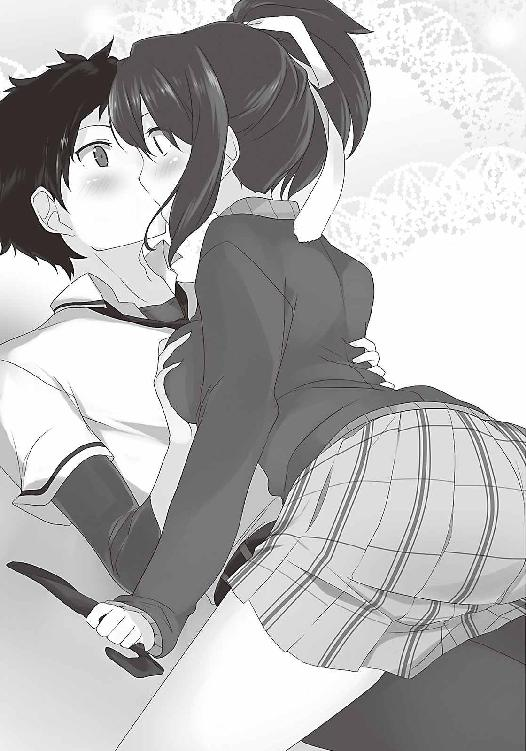
そして右足が、何だか気になる。不思議と滑らかな感触......。こ......これは！
中崎さんの両足が俺の右足を挟む恰好になっているのだ！ だから俺の右半身には、重みがのしかかり、同時に俺とは構造の違う下半身が、俺の太ももに押し付けられ......いかん！
いかんいかんいかん！ 俺の男性の部分が反応してしまう！ 別のことを考えるんだ！
例えば、そう、女子寮から帰るとき、途中で立ち寄ったコンビニで買った肉まんは、まるでこのおっぱいのように柔らかくて違う違う違う！
思考を逸らせ！ しかし顔には、中崎さんの息がかかる。髪の毛から良い匂いがする。
もう駄目だ......。もうこのことしか考えられない。いっそ失神でもすれば良かったのに。
我慢も限界だった。ついに俺の体は反応した。
それを契機に、中崎さんが俺から体を離した。
ふっと、思い出した。中学最後に、女子更衣室で中崎さんと対峙したときのことだ。
あのときでさえ、散々な目に遭った。今回はついに殺されるかもしれない。
目を閉じた。このまま流れに身を任せようと思った。人生の最後に、良い思い出ができた。
死を覚悟し、歯を食い縛り、そのまま待った。
しかし、暫くしても、何もされなかった。
俺は目を開けた。中崎さんは、隅っこで膝を抱え、顔を伏せていた。
「もうわけわかんない......私......何してるかわかんない......最悪だよ......高校入ってから酷いことばっか......タンスの中あさられるし......靴下盗まれるし......ニオイ嗅がれるし」
「し、してない！ そんなことしてない！」
「パンツも見られて......裸まで見られて......」
「パ、パンツは見たけど......裸は見てない！ 俺は誓って裸を見てない！ あのとき俺は」
「噓つけ」
「噓じゃない！ 俺の目を見てくれ！」
俺は中崎さんの肩を摑み、真っ直ぐ目を見た。あのとき、裸を見ていない。これは事実だ。俺の中にやましい点はない。振り返らなくて本当に良かった。
「確かに俺は靴下を盗んだ！ でもそれは、冤罪の証明のためだ！ 変な目的じゃない！」
「でも......だからって」
次の瞬間、俺は言葉を失った。中崎さんの目から、涙が流れ出したのだ。
「うう......ファーストキスだったのに」
俺が悪いのか？ 今のは事故じゃないか。しかし女性の涙、それも中崎さんの涙は応えた。いつも俺を睨む目から涙が......俺の中の良心の呵責が吹き出た。
中崎さんが、泣いている。
「お前みたいな奴は......女なら誰でもいいって思ってんだろ」
「だ、誰でもいいなんて、そんなことない！」
「じゃあ......何だよ......それ」
中崎さんは俺の腰の辺りを指差した。そして愕然とした。
何てことだ！ まだ静まっていなかった！
「それって、男が興奮したときになるんだろ」
「そ、それは、その」
「誰でもいいんじゃないなら、何で好きでもない奴の体触って、そんなことになるんだ」
「き、嫌いな人の体で、こんなことになるはずないだろ！ 中崎さんだからこうなったんだ！ この前からずっと、中崎さんのことしか考えられないんだ！ 頭から離れないんだ！」
「何言ってんだよ。私のことなんか、嫌いだろ。体でかいし。昔から、殴ってばっかだし」
「嫌いなんて、とんでもない！ 中崎さんは魅力的な女性だ！ 考えるだけで夜も眠れない！」
「そんな噓つくなよ！ 嫌いなら嫌いって、はっきり言えよ！」
「噓じゃない！ 好きだよ！ 中崎さんのこと！」
はっとした。取り返しがつかないことを口走ってしまった。中崎さんが、呆然としている。
何か言わなければと思った。しかし「好き」という衝撃発言が何度もリフレインされ、頭が働かない。好き、好き、好き......その単語以外、思い浮かばない。好き......好き......好き......。
「好き......好きなんだ......好きなんだ！ 中崎さんが好きなんだ！ 好きだからパンツ見たり部屋に入ったり靴下を盗んだりしたんだ！ あのとき本当は裸を見たかった！ でも我慢して見なかった！ そのせいで、中崎さんに対する思いばかり募るんだ！ どうしてくれるんだ！」
口を開いたら、こんな台詞が出た。何を言っているのか、自分でも理解できない。しかし、次々に言葉が溢れ出した。俺は啞然としている中崎さんの肩を摑んだ。
「ファーストキス？ 今のは事故だ！ 確かに唇が当たってラッキーとは思った！ でもキスじゃない！ キスは互いがキスだと思ってやるものだ！ 人工呼吸はキスか？ 違うだろ！ だから俺たちはまだキスをしてない！ 今度こそちゃんとするぞ！ すぐするぞ！ さあ！」
「だだだ大事なキスをそそそんなに簡単にできるか！」
中崎さんは俺を突き飛ばし、逃げ出した。
階段の上で、浦橋さんが呆気にとられていた。
その日の夜、出向を終えたリュウジに呼ばれた。部屋に入るなり、すでに来ていたジュンが飛びかかってきた。
「マ、マサミチ！ 中崎さんに告白したのかよ！」
「な、何で知ってるんだ？」
「聞いたんだ」横でリュウジが口を開く。「浦橋さんがイライラしていたから、そのストレスの捌け口になる代わりにな。中崎さんがマサミチに告白されたこと」
「ほ、本当に好きなのかよ」
「ま、まあ、嫌いではない。でも好きかと訊かれると」
「いや、おそらくマサミチの中で、少しはあったのだろう。門倉さんを見ているうちに、横にいる中崎さんに対する心理的距離も近付いた。だから中崎さんに対する警戒や恐怖も薄れた。そしていつしか、中崎さんを好きになっていた。そんなところであろう」
ジュンが納得したように「ああ」と声を出した。
「リュウジの言う通りかもね。確かに思ってもいないことは、口から出て来ないよ」
そうなのか？ 中崎さんが好き......。その気持ちが、俺の中のどこかにあった......。だから告白してしまった......のか？
「もしかして、中崎さんと、他にも何かあったのか？」
俺は中崎さんとの間にあったことを話した。トイレのこと。女子寮に侵入したときのこと。
「なんというエンカウント率であることか」
「これはもう、マサミチと中崎さんが、赤い糸で結ばれているとしか思えないぞ」
「赤い糸だと？ 何を勝手なことを言っているんだ」
と言いつつ、思わず小指を見てしまった。そんな言われ方をすると気になって仕方なくなる。
「おい、マサミチ。一応言っておくが、一番の責務は漫画を描いた犯人を見つけることだぞ！」
「わかってる。わかってるけど、今は考える余裕がないんだ。何を考えて良いのかわからない。何を考えるべきなのかを考えているところだ。少し考える時間をくれ」
水曜日。昇降口で「おはよう」と声をかけられた。門倉さんだ。横にいた中崎さんは、俺を見ると慌てて靴を履き替え、小走りで教室へ向かった。しかしちゃんと履けてなかったらしく、何度か転びそうになっていた。門倉さんは俺を見て、破顔一笑した。
「頑張ってね。応援するから」
そして俺の肩をポンポンと叩いた。やはり門倉さんは可愛い。しかし不思議なことに、俺の頭の中にあったのは、さっきの転びそうな中崎さんの姿だった。
授業中も休み時間も、中崎さんは上の空だった。俺の言葉が影響しているのは、男女の機微に疎い俺でもわかった。
昼休み。浦橋さんが中崎さんを連れ出した。何となく、尋常じゃない気配がした。俺はこっそりついて行った。校舎裏で話しているのを、悪いと思いながら、盗み聞きした。
「ねえ、ミイナ。昨日、聞こえちゃったんだけど、比嘉に告白されてたよね？」
「う、うん」
「きっぱり断るんでしょ？」
「え、あ、いや」
「まさか、受け入れる気？」
「そういうつもりでもないけど......びっくりしすぎて......逃げちゃって」
「相手は寮に忍び込む変態よ。しかも女装して。その上、靴下盗んで、好きだとか言う変態。そんな奴なんだから、いつもみたいに、殴っちゃえば？」
浦橋さんの剣幕は恐ろしい。しかし中崎さんは、無言で俯いた。
「ミイナ、どうしちゃったの？」
「私にも......わかんない」
中崎さんは、声をくぐもらせた。そしてそわそわしながら、ポツリポツリと小声で言った。
「ただ......私ってさ、子供の頃から体が大きくて、電柱とか言われて。性格も体格もこんなんだから、オトコオンナって言われて、男子にからかわれて......だから......その......つまり」
「つまり？」
「好きって言われたの、初めてだったから」
中崎さんは、顔を真っ赤にした。俺は気持ちがぽっとなるのを感じた。
中崎さんって、こんなに可愛かっただろうか。
俺は、どうしてしまったんだろう。自分の気持ちが見えてこない。何だかさっきから、中崎さんのことばかり考えてしまう。胸が苦しくなる。
好き......。本当にそうなのか？ 二人の言う通りなのか？ 実は好きだったのか？ 勢いで言ったことだが、本心だったのか？
確かにパンツ見たりとかがあって、中崎さんにエロい気持ちを持ってしまったのは事実だ。しかも将来は、柏葉先生並みの魅力的な女性になるらしい。
しかしいくら何でも飛躍してい......待てよ......そう言えば俺たちがエロ本作りを始めたのは、エロい気持ちと恋愛感情は表裏一体という理念に基づくものだった。
まさか、エロい気持ちが恋愛感情に繫がったとでも言うのか......。
でも、中崎さんだぞ。暴力的で怖いんだぞ。今までずっと、苦手にしてきたんだ。
でもあれは、相手に非があればこそ使う力だ。年がら年中、使うわけではない。
いやいや、女子寮を出てすぐに、理不尽な暴力を受けた。あれは説明がつかないぞ。些細なことで因縁をつけられて、顔を真っ赤にして怒ったんだから。
あれ......？ 考えてみると、あのときの赤い顔、見覚えがあるように思う。
そう。あれは確か、俺がトイレで用を足しているときに、中崎さんがドアを開けた瞬間。あのときの顔に似ていたような......。おそらくあれは、恥ずかしがった顔だと思う。
じゃあ、その後のは、思い出し恥ずかしがり？ そう思うと、やはりちょっと可愛い......。
いや待て。また変態なことを想像してしまった。それに、他にも苦手な点があるはずだ。
例えばパンツがクマさんだとか......少女の心がまだあるからかな。寝るときはノーブラ......セクシーじゃないか。門倉さんと俺を引き離そうとした......のは友達を思ってのこと。
......おかしい......悪い点が見つからない。
と言うより、否定しようとすればするほど、良く見えてくるのは何故だ？
その日の放課後。中崎さんに、こっそり呼ばれた。
「き、昨日のことなんだけど......」
「あ、うん」
鼓動が高鳴る。何を言われるのだろう。緊張した。
「あ、いや、違う違う違う！ 好きとか嫌いとかの話じゃなくて......その......」
中崎さんは、口をつぐんでしまった。俺は黙って言葉を待った。
やがて中崎さんは口を開いた。
「あ、あり......がとう......落ちたとき、かばってくれて」
「え？」
意外な言葉に、俺は動揺した。
「ずっと、言わなきゃって思って。助けようとしてくれたのに、あの態度はなかったかなって」
「あ、ああ、いや、別に気にしてないけど」
「その......け、怪我しなかった？ 私、重いし」
「え、うん。大丈夫だよ」
「そ、そう？ じゃあ、それだけだから」
中崎さんは走り去った。俺は暫く、その場に立ち尽くしていた。
何だ今のは......。どうしたんだ、俺。何だか顔が熱いぞ。
やっぱりそうなのか？ 俺、中崎さんのことが好きだったのか？ もしかして、照れているのか？ ときめいているのか？ 絶望だらけの俺の中に、こんなうぶな気持ちがあったなんて。
そのとき携帯電話が鳴った。藤次先輩からだった。
俺とジュンは、すぐに向かった。先輩の顔は、青ざめていた。
「チェックした。何度読み返しても、そうとしか思えない。この絵......知っている」
「本当ですか！」俺たちは興奮した。
「ああ。新聞記事だけじゃ判断できなかったけど、全部見ればわかる。細部に特徴が出てる」
「誰なんですか！」
「トオルだ......これはトオルの絵だ」
16 世界の真実
言葉を失った。堀先輩は世界の変革を請け負った希望の星だ。犯人とは思えない。だが藤次先輩は、漫画を受け取り二日間、徹底的に調べただろう。そんなはずないと心で否定しながら。
「これはもう、本人に会うしかない」
藤次先輩は堀先輩を公園に呼び出した。堀先輩は藤次先輩の想像通り、女子寮に監禁されていたらしいが、今はもう、釈放されたという。
「いつかこういう日が来ると思っていたよ」堀先輩は、飄々としていた。
「例の漫画を見た。トオル、お前の絵にしか見えない」
「そうだ。あれを描いたのは俺だ」堀先輩は淡々と言った。目に光はなかった。「俺は学校の風紀を正すため、生徒会側に付くことにした。この世界の変革なんて夢のまた夢さ。猥褻物を否定し、物わかりのいい顔で、女子に付き従った方が賢い」
「副会長は、先輩の友達じゃないんですか！」
俺は思わず声を張り上げた。まさか漫画を描いたのが本当に堀先輩だったなんて......。
「友達でも、考え方が必ずしも一致するわけじゃないんだよ」
「トオル......お前......変わったな。昔はそんな奴じゃなかった」
「昔は俺も、お前らと共に社会を変えようとしていた。でももう違う。お前らとは決別する」
「本気か？」
「本気だ」
そんな......藤次先輩と有沢先輩と堀先輩、三人の友情は、こんなに脆いものだったのか......。
藤次先輩は黙って目を閉じていた。何かを考えているようだ。やがて、カッと目を見開いた。
「俺はお前を信じている！」
刹那、藤次先輩は堀先輩に飛びかかり、押し倒して馬乗りになった。そして、ポケットからハンカチを出し、堀先輩の顔にあてがった。ドラマでクロロホルムを嗅がせる場面に似ていた。
堀先輩は藤次先輩の腕を摑み、引き離そうとした。しかし徐々に、その手に力がなくなっていった。そして、手は地面に落ちた。
暫くして、藤次先輩はハンカチを離した。「どうだ？」と声をかける。
堀先輩は天を仰いだまま、虚ろな目をしている。
「な......何だ......この心を穏やかにしつつも、元気の出る匂いは」
「これはな......」
藤次先輩は、天を仰いで言った。
「かつて柏葉先生が尻に敷いたハンカチだ！」
「何だと！」堀先輩は瞠目し、呼吸を荒らげた。「こ、こんなもの、どこで手に入れたんだ」
「女子寮で先生が見回りに来たときにな。英語の質問をしたいと言って、中に入ってもらった。そのときにこっそり、座布団の上に敷いておいたんだ」
「そんな技を......」
「これで反応するということは、やはりお前は、変わっていない。あの頃のままだ。まったく、生徒会側に付いたなんてお前の噓に、気付かない俺だと思ったのか？」
堀先輩は、口をつぐんだ。藤次先輩の言葉を、嚙み締めているように見えた。
「これはタツナリの宝物じゃないのか？ こんな大事なものを、俺に使ってもいいのか」
「構わないさ。お前の本心を引き出すためだ。口で何と言おうと、心まで偽ることはできないと思ったからな」
堀先輩は、両手で顔を覆った。歯を食い縛っている。涙を堪えているようだった。
しかし藤次先輩は流石だ。一瞬にして、友の噓を見抜いたのだ。そしてこのハンカチを常時携帯していたことにも、感銘を受ける。
堀先輩は、体を起こした。「何があったんだ？」藤次先輩は訊いた。
「生徒会は、カズマに焦点を当てていた。でも決定的な証拠がない。そこで強制的にガサ入れして、捜査することが決まった。俺はその情報を、カズマに流した」
やはり、ジュンが逃げられた理由は、それだったのか。
「だから生徒会にとって、結果は散々だった。何も出てこなかったから。当然、俺は疑われた。そして俺とカズマは、取り調べのため捕まった。別々の部屋にね」
「二人が共謀しないためか」
「俺も最初はそう思った。でも実際は、生徒会側に狙いがあったんだ。生徒会は成果を出せず相当焦っていた。次は何をするかわからない。俺はカズマを助ける術を模索した。でも見つからなかった。俺も焦っていた。そのとき、悪魔の囁きが聞こえた」
「園村か？」
「そうだ。俺は愚かだ。園村に唆されたんだ。『もし誤って別の漫画を証拠としてしまったら、発覚した後、生徒会は有沢先輩に手を出し辛くなる。だから描いてください』と」
俺は首を傾げた。
「園村先輩は、何故そんなことを持ちかけたんでしょう？」
「俺に貸しを作るためだと思った。会長より俺の方が、情報に旨みがあるって踏んだんだと」
「それで描いたのか？」
「実際は少し違う。最初、俺は渋った。ところが園村に、とんでもない写真を見せられた」
「何だ？ 脅されるようなものか？」
「違う。柏葉先生のおっぱい盗撮写真だ」
「何ぃぃぃぃ！」藤次先輩は絶叫した。
「暑い日に柏葉先生が、女子寮の事務室で、ブラウスのボタンを外し、胸を放り出して涼んでいる写真だ。もはや下着姿と言っても過言ではない。一人だったから気が緩んでいたんだろう」
俺たちは唾を飲み込んだ。そんなものを見せられたら、思考回路が吹っ飛ぶ。そのことしか考えられなくなる。あの外道先輩は、一体どうやって撮ったんだ......。
「『他にもたくさんある。もし描いたら全部あげる』と言われた。俺はそれが欲しくてしょうがなくなった。ずっと苦しんでいた。そして俺は描いた。園村の話に乗ったんだ」
全員が黙った。堀先輩の煩悶を感じ、やるせない思いになった。男心の弱いところを的確に突いている。やはり恐ろしい人だ。人面獣心だ。
「生徒会が、あの漫画を証拠として提出した後、俺は柏葉先生に言ったさ。『これを描いたのは俺だ』って。でも『友達をかばいたい気持ちはわかる』の一点張りでね、取り合ってもらえなかった。どうやらすでに会長から進言があったらしい。『俺がカズマをかばうため、噓をついている』ってね。先手を打たれたんだ。自分で描いた証拠を残さなかったのは、失敗だった」
「カズマも昔から、疑われていたからな」
「そうなんですか？」
「君たちと同じだよ。資料を搔き集めていたときに、何度か捕まっている。生徒会どころか、先生にも目を付けられている。イメージが良くない。先入観で犯人扱いされるのは、当然かもしれない。逆にトオルは、学校では優等生だ。だから生徒会入りを認められた。友達のために噓をついた、という言葉には、信憑性がある」
「だから俺は、この事実を、大々的に公表しようと考えた。ところがそんな折、とんでもないことが起こった。カズマが少しずつ、自分の罪を認め始めたんだ」
「何故そんなことを」
「園村が教えたんだよ。これを描いたのは俺だって。カズマを解放するため漫画を描き、自分で罪を被ろうとしていると。その結果、カズマが自白し、俺をかばう形になってしまったんだ。カズマの自白。これが園村の狙いだったんだ。この作戦を成功させるため、別々の部屋だったんだ。しかも写真は、手に入らなかった」
「園村め......男の友情と一途な純情を弄ぶとは......人でなしめ」
「移送するまで、余計なことはしないように、俺は監禁された。カズマは自白して、このまま証拠は移送されて万々歳、というのが生徒会の筋書きだった。ところが計算違いが起こった。君たちが騒動を起こしたことだ。先生たちもただごとじゃないと思ったんだろう。おかげで移送されずに済んだ。移送が取り下げられたから、俺は出てこられた。でも、カズマが罪を認めてしまえば、俺にはどうすることもできない」
「そうか。それでお前、悪役を演じようとしたのか。カズマがもう一度、無実の訴えを起こすように。そして俺たちが気を使わないように」
堀先輩は頷いた。一人で全ての責任を被るつもりだったのだ。
「お前は昔からそうだった。自分を犠牲にして、人を助ける。生徒会役員に立候補したときもそうだった。身を粉にして、学校の、世界の変革を実現すると言った」
「俺には世界の変革より、お前らの方が大事なんだ。お前らを守れないで、何が世界の変革だ。それに、現実に必要とされているのは俺じゃない。カズマの方だ。誰しもが、カズマの作品を求める。そして俺もその一人だ。カズマの漫画が大好きなんだ。一体、何夜を共に過ごしたかわからない。カズマの漫画が読めなくなるなんて、あって良いはずがない」
「トオルも、辛い思いをしたんだな」藤次先輩は、肩を抱いた。
堀先輩の目から、涙がこぼれた。
「よし、現実的な話をしよう。トオル、あれはオリジナルなのか？」
「いや、会長に何かのコピーを見せられた。ほとんどそれを丸写しした」
「ということは、原本があるはずだ。そしてミチルは、その出所を知っているはずだ」
つまり原本を見つけ出せば、偽の証拠だと証明できる。さらに証拠の捏造も示せれば、もう俺たちに手出しできまい。自分で首を絞めた恰好だ。
命が果てる最後の一瞬まで、俺たちは戦い続けるのだ！
日が明けた。木曜日。藤次先輩は柏葉先生立ち会いの下、有沢先輩と面会し、最後のときまで黙秘を貫くように言った。それまでに、俺たちは原本を見つけなければならない。
だが簡単な話ではない。少なくとも原本のコピーは、すでに処分されているだろう。そんな証拠を残しておくほど、間抜けではあるまい。だから原本を手に入れるしかない。
ではそれはどこにあるか。最もあり得るのは、資料室の本という可能性だ。保管されている社会の歪みは膨大だ。全ての本を覚えている人はいないだろう。発覚する危険は少ない。
俺たちにとっては不利だ。だがこの可能性に賭けたい。この推理が正しいなら、少しは希望がある。原本そのものの処分という心配が消えるからだ。堀先輩によれば、資料室の資料は、全てデータベースで管理されているそうだ。資料がなくなれば、すぐにばれる。
だが、どうやって調べる？ 本を探すどころか、そもそも資料室に入れない。女子寮にすら入れない。藤次先輩も、手を尽くして調べているが、まだ良い報告はない。
堀先輩は再三、自分が犯人と訴えた。しかし証拠がないため、袖にされ続けている。やはり原本を見つけなければならない。
とにかく俺たちは、捏造原本の存在と、それが資料室にある可能性を、柏葉先生に訴えた。「調べておこう」と先生は言ってくれた。しかし、どこまでやってくれるだろうか。
やはり俺たちも何かせねばならない。しかし手掛かりがない。せめて資料室の鍵の貸し出し履歴がわかれば、もっと強く訴えることができるのだが。
「比嘉君、大丈夫？ 何だか疲れてるみたいだけど」
教室で項垂れている俺に声をかけたのは、門倉さんだ。彼女を巻き込むわけにはいかない。しかし、俺は今の苦しみを誰かに聞いて欲しくなり、事情を説明した。
「そんな......生徒会が......ミイちゃん、知ってた？」
中崎さんがこっちを見た。目が合い、ドキッとした。また心が乱れる。
中崎さんは、少し顔を赤くして視線を逸らし「いや、知らない」と首を振った。
そのとき閃いた。そうだ！ 中崎さんなら、資料室に入れるじゃないか！
俺は思わず中崎さんの傍に行き、手を握った。驚く中崎さんに、俺は捲し立てた。
「中崎さんに頼みたいことがある。調べて欲しいんだ。生徒会か園村先輩が、資料室に入っていないか。何か資料を借りていないか。それが元になった本のはずなんだ！」
わらにも縋る思いだった。中崎さんは目をぱちつかせながらも「わ、わかった、調べてみる」と言ってくれた。これで見つかれば、逆転できる。一縷の望みが見えた。
しかし翌日、中崎さんが言った。
「資料室の鍵の貸し出しリストを見たけど、生徒会役員の名前も園村先輩の名前もなかったぞ。と言うより、今年になって、入ったのは柏葉先生くらい。生徒は入ってないみたい」
どういうことだ？ 資料室の本ではないのか？ じゃあどこから持って来たんだ？
これじゃあ、いくら柏葉先生に訴えても無駄じゃないか。
頭を抱えた。見当がつかない......。思考は隘路に迷い込んだ。全く光が見えない。
放課後、追い討ちをかけるように、園村先輩に捕まった。先輩はニコニコしながら言った。
「比嘉君、月曜の放課後、何していましたか？」
単刀直入に、先輩は言った。答えに詰まった。その日は新聞部の部室に侵入していたのだ。
ばれたのか？ いや、ジュンがしっかり見張っていたはずだ。うろたえる必要はない。
「すぐ家に帰りましたよ」
「ふふふ、噓はいけませんよ」
先輩はポケットから小型のビデオカメラを出し、動画を再生した。俺は言葉を失った。
それは、俺が新聞部の部室に侵入している映像だった。
全身から、血の気が引いた。部室に仕掛けられていたのか......。
「侵入と窃盗。普通に犯罪ですよね？」
俺の心を潰すには十分な言葉だった。考えてみれば、園村先輩が鍵を落とすなんて不注意はあり得ない。おそらく先輩は俺たちに気付き、わざと鍵を拾わせたのだ。原稿を渡す代わりに、さらなる脅迫の材料を作るために......。肉を切らせて骨を断つということだろう。
「これ以上、何か詮索する気なら、この動画を公表しますから。悪しからず」
俺たちの行動は、読み切られている。もう何をして良いのか、わからなくなった。
土曜日。期限が明日に迫ったこの日。俺たちは女子寮を訪ねていた。柏葉先生に、調査期間の延長を頼もうと思ったのだ。ところが先生は外出していて、会うことができなかった。
俺たちは集まった。しかし言葉が出ない。調査は行き詰まり、全員に焦りの色が浮かぶ。
「こんな脅しに屈してはいけない。何かしよう。いざとなれば、俺が一人で罪を被る」
悪い空気を断ち切るように、俺は息巻いた。しかしジュンが首を振る。
「マサミチの無駄死にになるよ。せめてあと一歩で逆転っていう手掛かりがあれば別だけど」
「くそっ！ こんな不当がまかり通ってたまるか！ 何か技があるはずだ！」
リュウジが憤りを露わにし、声を張り上げた。しかしそれは空を切り、すぐに沈黙が訪れた。
希望は閉ざされた。動きも封じられ、ただ落胆するばかりだった。もう調べようがない......。
六月二十二日、日曜日。ついに柏葉先生との約束の日を迎えた。朝から憂鬱だった。結局、何の手立てもなかった。時間だけが無常に過ぎ、そのまま夕方になった。
俺とリュウジとジュンは、生徒会室に呼び出された。会長の都筑ミチル、並びに役員が座っている。だが堀先輩はいない。柏葉先生もいない。それは少し不思議だった。
「これより比嘉マサミチ、菊間リュウジ、飯沼ジュンの処分を言い渡す」会長が口を開く。
いよいよ終わる。俺たちは肩を落としていた。そのとき突然扉が開いた。激しい音に全員の視線が行く。飛び込んできたのは藤次先輩と堀先輩だった。「間に合った」藤次先輩が言った。
「何だ貴様ら。今日は呼んでいないぞ」
「そうはいかない。これ以上、好き勝手はさせない」
藤次先輩は、一度大きく深呼吸をした。
「こうして、面と向かって話すのは、久しぶりだな、ミチル」
「黙れ藤次。もうお前に、馴れ馴れしく呼ばれたくはない」
「昔はそんなしゃべり方じゃなかった」
「人間、いろんなことを経験すれば、しゃべり方も自然と変わる」
「ミチルも、なかなか苦労しているようだな」
大半は、藤次先輩が原因じゃないだろうか、と思った。
「貴様らのように、汚れたものを好む人間と、話すことなどない」
「何故それほどまでに、猥褻物を毛嫌いするんだ」
「あんなもの、気分を害するだけだ」
「それはそっちの価値観だ！ 価値観を押し付けるな！」
「価値観を押し付けているのは、藤次も一緒だろ？」
「違う！」藤次先輩は、首を振った。「俺はそっちの価値観が間違っているなんて言ってない。価値観は十人十色だ。人の数だけ存在する。それで良いんだ。でも女子たちは干渉する。人の楽しみを奪う権利はない！」
「何度も捕まった人が何を言う！」
「俺は柏葉先生に迷惑をかけた。だから罰せられて当然の人間だ。だが、それを一緒にするな！ 誰にも迷惑をかけず、個人がこっそり楽しんでいる。それに何の罪がある！」
「それが蔓延するから、社会は汚れるんだ！」
「それらが風紀を乱す？ 犯罪を促す？ それこそ極論だ！」
「それが温床にならないと断言できるのか？ 猥褻物を排除することで、世界の秩序と安定に貢献できるなら、こんな良いことはない。綺麗な世界の誕生だ」
「そりゃあ清廉潔白な世界は素晴らしい。しかし男は綺麗な世界では生きていけない。男には猥褻物が必要なんだ。綺麗な世界は、男にとって正しい世界じゃない」
「それは御厨先生の論文のことを言っているのか？」
「勿論それもある。でもそれだけじゃない。猥褻物は俺たちにとって心の拠り所なんだ。女性から見れば、無意義、無価値、理解に苦しむ作品かもしれない。しかしそれらは、心の隙間を満たす重要な作品たちだ。女性がいくら否定しようと、いくら邪険に扱おうと、俺たちはそれらを楽しむ。それはかけがえのない時間だ」
「それが下品だと言っている」
「下品は必要悪なんだ！」
藤次先輩は声を張り上げた。
「この世の全ての男は、聖人君子ではない！ 俗物だ！ 猥褻物は風紀を乱すだと？ 馬鹿を言うな！ 男子はそれらで心の安寧を得ているんだ！ 猥褻は大切なんだ！ 中学生だろうと国の指導者だろうと、みな等しく自分の性器をいじっているんだ！」
「下劣だ！ 話にならんな！」
「会長」堀先輩が口を開く。「もうやめましょう。あの漫画を描いたのは俺。会長はこの漫画が偽物と知りながら、カズマを逮捕した。罪に問われるのは、生徒会だ」
「そんなことは知らない。身に覚えがない」
「ふふふ、ミチル。ずっとその証拠を探していたのだよ」
「お前らに何かできるのか？ それにお前らが見つけた証拠など、信じるに足るものなのか？」
「そう。でも公正中立の人だったらどうだ？」
藤次先輩は時計を見た。少しして、部屋に入って来たのは柏葉先生だった。
柏葉先生は、手に持った封筒から紙の束を出し、テーブルに広げた。
「都筑、これが何かわかるか？」
会長はそれを一目見て、言葉を失った。「やはりそうか」柏葉先生が呟く。
「隣の市の高校の女子寮に問い合わせた。お前が『漫画の調査のため』という名目で、そこに入ったことが判明した。そこで調べたら、今回摘発されたものと、酷似した内容のものを見つけた。これを元に描かれたのは明白だ。あの証拠は偽物と知っていたとしか思えないな」
会長は、呆然とその紙束に目を落とした。
「先生は昨日からずっと、探してくれていたんだ。他校まで行ってね。俺もトオルも、さっきそのことを聞いて、ここに飛んできたんだ」
「か、柏葉先生は、男子の味方なんですか！」
「へへへ......あんた......一つ計算違いをしてるよ」
真後ろから、黒い塊がぬっと現れた。勿論、御厨先生だ。
「この学校には......冤罪なんか許さない......とっても生真面目な先生様が......いたってことさ......周辺の学校......全部に問い合わせて......資料室の本......ひっくり返して調べるような」
「そんな......」会長は唇を嚙んだ。目を泳がせ、先生と藤次先輩の顔を交互に見ていた。
「ミチル......お前の負けだ。功績を焦ったな」
瞬間、会長の目に涙が浮かんだ。そして堰を切ったように、ボロボロと大粒の涙をこぼした。
「私はただ......この学校を良くしようと思っただけなのに」会長は、涙を拭った。「そもそも、お前らみたいなのがいるから、私たちが動かなければならないんだ！ だいたいタッちゃんは」
部屋中の人が、一斉に「え？」と声を上げた。そう言えば、藤次先輩の名前はタツナリだ。
会長は、はっとして口元を押さえた。そして一度咳払いをした。
「藤次は柏葉先生のことばっかり見ている！」
「当たり前だ。先生は素晴らしい女性だ。人間として尊敬できる」
「違う！ お前が見ているのはおっぱいだけだ！ そういう人間を取り締まるんだ！」
「何を言う！ 胸の大きさを気にしているのはミチルだろ！ 胸にパッドを入れているような奴に言われたくない！」
「もう入れてない！」
「何！」
藤次先輩は、声を上擦らせた。
「本当か？」
「本当だ」
次の瞬間、流れるような手付きで、藤次先輩は会長の胸を触った。
とても滑らかな動きだったから、一瞬何が起こったか、誰も理解できなかった。
そして、空気は固まった。
会長も驚きすぎたのか、自分の胸を触る藤次先輩の手を見て動かない。
会長は徐々に、頰を赤らめた。状況を理解し始めたらしい。
だがそれでも、先輩の手をじっと見ている。もしかして会長、あんまり嫌じゃないのか......？
「お前......胸大きくなったな......」
その言葉で、はっと我に返ったのか、会長は先輩の腕を振り払った。
静かになった。誰も、何も言わない。みんな会長の言葉を待っているようだ。
「こ、断りもなく人の胸を触るんじゃない！」
会長は怒鳴った。しかし少し的外れにも思えた。藤次先輩は言った。
「断れば触ってもいいのか」
会長はうろたえた。さっきの台詞は、当然そういう意味になる。そして会長は声を荒らげた。
「ほ、他の人に迷惑をかけるなら、私が人身御供になる！ 私以外に手を出すことは許さん！」
みんな意表を突かれた。流石の藤次先輩も面食らっている。御厨先生が口笛を吹いた。
「ミ、ミチル......それは、つまり......」
「そ、その代わり、もう二度と、いやらしいことに興味を持つなよ！」
「それとこれとは、話が違う」
会長は、藤次先輩を殴った。
エピローグ そして戦いは続く
月曜日。お詫びのプリントが配付された。有沢先輩の誤認逮捕と、証拠の取り違えについてだった。藤次先輩は「今回の件を、全てなかったことにして欲しい」と懇願した。実際、有沢先輩は黒だから、下手に話をこじらせたくなかったのだ。その結果、生徒会は誤認逮捕による厳重注意だけで済んだ。堀先輩は、ただ描き写しただけだから、罪に問われなかった。
ジュンも無実となり、女子寮に潜入した俺も、不問となった。ただ、リュウジが浦橋さんのスカートの中を覗いたことは別件だから、前科が付いた。浦橋さんは、今朝も俺たちを睨み、リュウジを蹴った。リュウジは喜び、そして言った。「彼女には愛がある」と。流石である。
藤次先輩と会長の間に何か起こりそうだったが、二人の関係は別段変わっていないらしい。
解放された有沢先輩は、少しの間、制作を自粛するという。暫くは漫画を読むことができなくなった。それでも、ジュンは有沢先輩の下に足繁く通い、漫画を教えてもらっている。ひとまずは健全な漫画を描いている。ジュンは言う。
「どんなものでも、基礎は大事。今は力を蓄えるときだ。中途半端なことはしたくない」
昼休み、俺たちは柏葉先生に呼び出された。事件の事後処理だろうと思い、訪ねた。
「すまなかった」
俺たちの顔を見るなり、柏葉先生は立ち上がって頭を下げた。
「お前らの言う通りだった。しっかり調査しなかった私に落ち度がある。申し訳ない」
俺たちは動揺し、互いに顔を見合わせた。俺は慌てて言った。
「あ、頭を上げてください。先生のおかげで、全てが明るみに出たんです」
あの後、御厨先生から聞いた。柏葉先生は俺たちが訴えた直後、資料室の本を全て調べてくれていたのだ。しかし結局見つからなかった。その時点で調査を打ち切っていた。
ところが中崎さんが「原本はきっと、どこかの資料室にあります。女子寮のことを、男子が調べるのは無理です」と言って、調査を頼んでくれたのだという。
そして柏葉先生は二日間、わざわざ他校まで行って調べてくれたのだ。
「柏葉先生が俺たちの先生で、本当に良かったと思っています」
「嬉しいので、抱き付いていいですか？」
リュウジが真顔で言った。先生は「ふ」と、少し笑った。
「お前らが無事に卒業できたら、考えてやらなくもない」
俺たちは言葉を忘れた。口が半開きだった。思いもよらぬ回答だった。
「へへ......そんなケチなこと言わずに」
御厨先生が、いつの間にか後ろに立っていた。
「へへへ......可愛い教え子の頼みだ......今すぐ叶えてやんなよ......こんなふうに」
御厨先生は柏葉先生に抱きつき、胸に顔を埋めた。柔らかそうだった。やる気が出てきた。
柏葉先生は御厨先生を引き剝がした。「話は以上だ」先生は、いつもの鋭い顔つきに戻った。
放課後。俺は中崎さんを呼び出し「ありがとう」と頭を下げた。
「中崎さんから、柏葉先生に働きかけてくれるとは思わなかったよ」
「あれは私なりに考えてみただけで。やっぱ、その、ほっとけないし」
何だか胸が高鳴った。思わず彼女を抱きしめたくなった。
「あ、い、いや、違う違う！ べ、別に比嘉だから助けたんじゃないからな！ 困ってる人を助けるなんて当然だろ！ そこは勘違いしないで欲しいって言うか......」
中崎さんは視線を逸らす。
「それで、あの、この前のことなんだけど」
「え、あ、うん」
「と、突然すぎて、よくわかんなくて......だから、今まで通り......じゃなくて、今までより、もうちょっと、友達って感じで......ね」
中崎さんは微笑んだ。何だかくすぐったい感じがした。そしてドキドキした。その上がった口の端を見たとき、一度彼女の唇に触れたという事実が思い出されたのだ。
思わず彼女の唇を見つめた。桃色で、少し濡れていて、とても艶っぽかった。
中崎さんは、はっと口元を隠した。見られていたことに気付いたらしい。
「そそ、そんなに見るな！ チューなんかしないぞ！ しないからな！」
中崎さんは顔を真っ赤にして逃げ出した。何だか顔が熱くなった。
中崎さんと別れた後「こんにちは」と優しい笑顔を振りまいて、園村先輩が現れた。
裏で暗躍し、最後まで表舞台に現れず、成功したら功績だけ持っていこうとした悪党だった。
「また、俺を嵌めようとしているんですか？」
しかし先輩は「違います」と首を振った。
「今日は反省の弁を伝えに来たんです。私の驕りでした。あの状況で、藤次先輩に犯人を教えれば、疑心暗鬼になって、男子側で勝手に瓦解するって踏んでいましたから」
俺に原稿を盗ませた元々の目的はそれだったのか。有沢先輩の逮捕と同時に、男子陣の崩壊も目論んでいたわけか。
確かに園村先輩の策は見事だった。完全に男心を手玉に取っていた。もう少しで二人の間に亀裂が入るところだった。しかし二人は「柏葉先生の座ったハンカチ」という道具を駆使し、和解した。何より重要なのは、藤次先輩が堀先輩を信じていたことだ。
「男子って、思ったより崩れないんですね。読み違えました」
「園村先輩は、男心を利用したつもりかもしれませんけど、俺たちには、先輩の想像を超える団結があったんです。同じ思いを持った男子の結束は、岩より固いんです」
「ふふふ、そういうの、ちょっと羨ましいです。一つ勉強になりました。驚きました」
園村先輩は遠くを見た。何となく、噓をついているようには思えなかった。
「今回のことは、負けを認めます。この件について、私はもう、みなさんに攻撃いたしません。お約束します。だからこれも、もう使いませんので、ご安心を」
先輩はビデオカメラを出し、画面を見せた。俺が部室に侵入した動画だ。先輩は操作した。『消去しますか』と表示され、先輩は『はい』を押した。意外と潔い人なのかと思った。
「でもこの失態を取り返すため、私も本気になりますよ」
「ふふふ、これからも負けませんよ」
これから先も、園村先輩と衝突することがあるかもしれない。しかしそれでも、俺たちは、活動をやめるわけにはいかない。男性を守るための戦いは、生涯続くのだ。
今日は俺の家に集まることになっている。ジュンと共にリュウジを待っていた。どこかで、情報を搔き集めているらしい。有沢先輩が漫画を描かない以上、リュウジの情報が頼りだ。
インターホンが鳴った。リュウジが来た。どんな情報か、期待に胸が躍った。
「ところでさあ、何でマサミチが地下活動に参加してるんだよ。お前は中崎さんと、よろしくやってろよ。門倉さんも、お前と中崎さんをくっつける気満々みたいだし」
「ふふふ、ジュンよ。俺たちは男性を守るため、法と戦い、社会と戦い、常に脳に刺激を与え続けなければならない」
「それは建て前でしょ？ 本音は？」
「単純に、エロいものを見たい！ それだけだ！」
男性を守る以前に、俺たちには心の安寧が必要なのだ。エロいのが大好きなのだ。
おそらく俺たちは、たとえ恋人ができたとしても、エロ本やエロビデオに対する興味を失うことはないだろう。藤次先輩の言葉を借りれば「それとこれとは、話が違う」のである。
もっとも、法と戦い、男性を守ると決めたのも事実。俺たちは明日を見据え、明日の自分のために頑張るのだ。だが、明日を見据えることと、明日が見えていることは別問題だ。
今日も俺たちは悶々とし続けている。つまり俺たちに明日は......見えない。
見えないから......だから......。
「諸君！ 新情報だ！ ビル風でスカートがめくれ易い場所がある！ 計画を立てるぞ！」
息せき切って現れるなり、リュウジは言った。俺は興奮しているリュウジを座らせ、お茶を一杯手渡した。リュウジは一口飲んで、息を吐いた。落ち着いたところで、俺は言った。
「さあ、猥褻な話をしようか」
あとがき
応募直前のことである。四月に入った時点で私は焦っていた。まだ二十枚分ほどが完成していない。それどころか、オチが決まっていなかったのである。
今年の応募は無理かもしれないと半ば諦めつつも、睡眠時間を削りながら必死で執筆。
何とか体裁が整ったのが四月九日。達成感の中、少しの睡眠をとり、翌日読み返して愕然とした。誤字脱字だらけの上、話の辻褄が合っていなかったのだ。
大慌てで直し始め、終わったのが夜の八時半。急いで印刷し、穴を開けて紐を通し、ページ抜けがないかチェックし、封筒に詰めて郵便局の二十四時間窓口に持ち込んだのが十時半。
そしてやっと、ゆっくり眠ることができたのである。
そう、私は寝ていなかった。誰しも経験があると思うが、寝ていないときは妙にテンションが高くなり、どんなにくだらないことでも面白く見える。それがまずかった。
あのタイトルが面白いと思ってしまったのだ。
当時の私は「酷いタイトルだ、わはははは」ぐらいの感覚だった。
ところが最終選考に残った連絡を受けてから、急に不安になった。受賞したら、あのタイトルが全国に発表される。いろいろと問題が起こりはしないか。
「何ということをしてしまったんだ」と頭を抱えても、後の祭りだった。
そして驚きの銀賞。授賞式ではタイトルが読み上げられたとき、変な汗が止まらなかった。
そんな阿呆の亜紀坂圭春でございます。タイトルは大事だと痛感する今日この頃です。
もっともこの話は最初のタイトルに比べ、それほど過激な内容ではありません。甚だ戯けた内容です。それは七名の選考委員様のうち、五名もの選評に「馬鹿」ないし「馬鹿馬鹿しい」という単語が入ったことからも明白です。きっと新記録です。暫く破られないでしょう。
とは言え、不埒千万な内容なのは間違いありません。せめてタイトルくらいは可愛いものになり、ほっとしています。
以下、謝辞を申し上げます。
選考に携わられた皆様。いろいろお世話になりました担当様。誠にありがとうございます。
下劣な話を可愛らしく飾ってくださった、ぎん太郎様。キャラの魅力が引き出されていて、イラストに見入ってしまいました。
推薦文を書いてくださった伏見つかさ先生。これからも健全な男子のために頑張ります。
この本を手に取ってくださった皆様。心に残るシーンやセリフが一つでもあれば幸いです。
改めて、この拙作に触れてくださった全ての皆様へ。本当にありがとうございました。
亜紀坂圭春
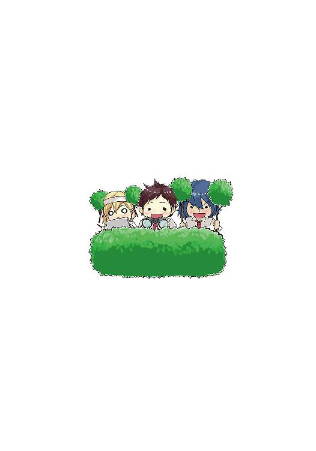
亜紀坂圭春
山形県出身。昔から、自分の人生の選択は間違いだらけだったと痛感していた。他に良い道があったはずだ。もっと慎重に道を見極めながら先に進まなければならない。そう思って石橋を叩き続けた結果、叩きすぎて壊してしまい、先に進めなくなった愚か者。
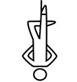
ぎん太郎
ネクストン所属のイラストレーター。千葉県出身。好きな服装は制服とメイド服、それとチアガール。メイドさんを雇って高層マンションに暮らすのが夢。
本書に対するご意見、ご感想をお寄せください。
電撃文庫公式ホームページ 読者アンケートフォーム
http://dengekibunko.dengeki.com/
※メニューの「読者アンケート」よりお進みください。
ファンレターあて先
〒102-8584 東京都千代田区富士見1-8-19
アスキー・メディアワークス電撃文庫編集部
「亜紀坂圭春先生」係
「ぎん太郎先生」係
初出
本書は第20回電撃小説大賞で《銀賞》を受賞した『放課後猥褻倶楽部』に加筆・修正したものです。
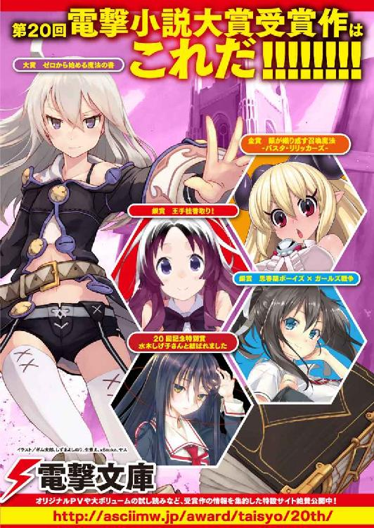
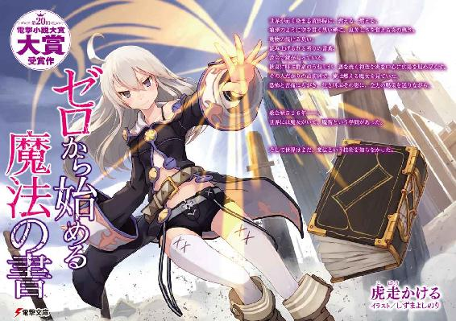
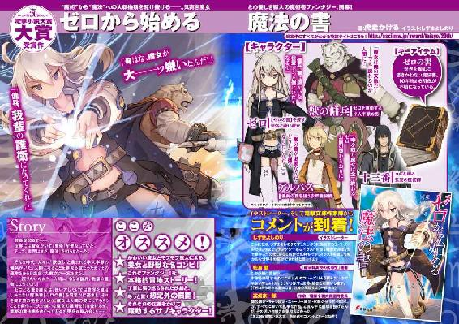
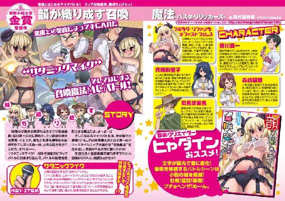
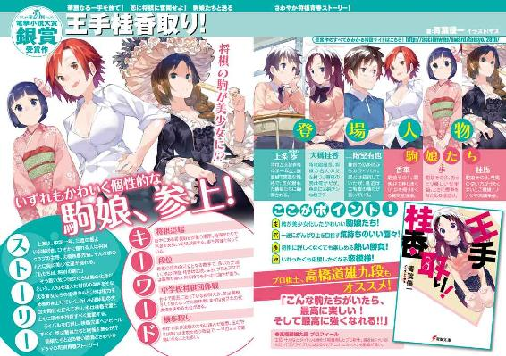
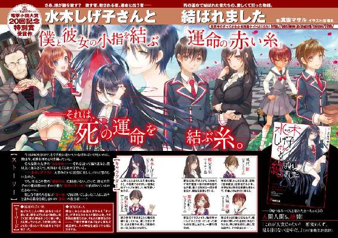
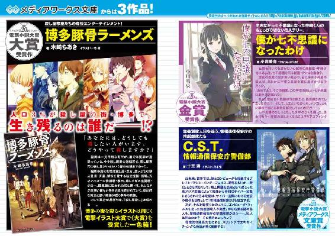
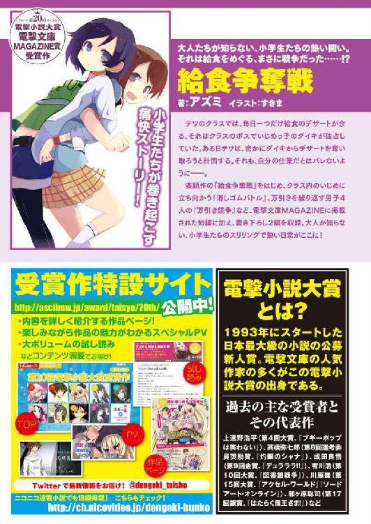
 電撃文庫
電撃文庫
思春期ボーイズ×ガールズ戦争
亜紀坂圭春
発 行 2014年5月29日
発行者 塚田正晃
発行所 株式会社KADOKAWA
〒102-8177 東京都千代田区富士見2-13-3
03-3238-8745（営業）
http://www.kadokawa.co.jp/
プロデュース アスキー・メディアワークス
〒102-8584 東京都千代田区富士見1-8-19
03-5216-8399（編集）
http://dengekibunko.dengeki.com/
本書（電子版）に掲載されているコンテンツ（ソフトウェア／プログラム／データ／情報を含む）の著作権およびその他の権利は、すべて株式会社KADOKAWAおよび正当な権利を有する第三者に帰属しています。
法律の定めがある場合または権利者の明示的な承諾がある場合を除き、これらのコンテンツを複製・転載、改変・編集、翻案・翻訳、放送・出版、公衆送信（送信可能化を含む）・再配信、販売・頒布、貸与等に使用することはできません。
(C)2014 YOSIHARU AKISAKA/KADOKAWA CORPORATION
※2014年2月8日発行の電撃文庫『思春期ボーイズ×ガールズ戦争』初版に基づき制作